00-t7-1959 Type 7 (T7) design prototype by F. A. "Butzi" Porsche — pre-history (include only if enough photos exist) · 1959 18 photos · 1 blueprints
Model Porsche Type 754 "T7" prototype (design 1959, running prototype 1960) Code 754 (body project T7); some secondary sources call the first, 1600 Super-powered state of the car "Type 695" Years One-off design study: plasticine model and full-size mock-up 1959; running prototype 1960 (road testing from 1 November 1960); project stopped and car set aside by 1961/62 Engine 1966 cc Rear-mounted four-cylinder boxer (as fitted to the surviving car: 356 Carrera 2 'Fuhrmann' four-cam Type 587/1); earlier a 1600 Super pushrod four and the experimental Type 745 flat-six were tried naturally aspirated Power 130 PS @ 6200 Torque 162 Nm 0-100 10.0 Top speed 200 km/h Weight — L/W/H/WB 4340/1730/1350/2400 Summary The T7 was Butzi Porsche's 1959 answer to the question of what should replace the 356: a longer, four-seat coupé whose nose and windscreen already look like a 911. Ferry Porsche wanted a fastback sports car, not a family car, so the four-seater was rejected and its front end lived on in the 2+2 T8, which became the 901.
6011 6001 6007 6004 6002 6003 6012 6010 6006 5703 6005
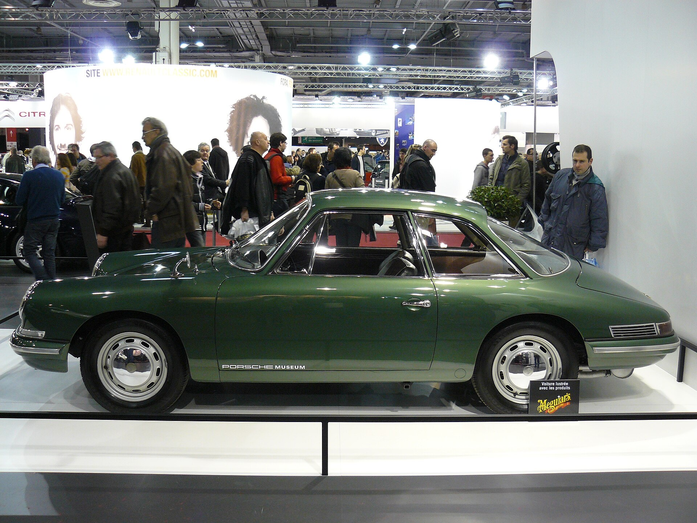
side ref 01-side-left.jpg Porsche Typ 754 T7 design prototype (F. A. 'Butzi' Porsche design, 1959; running prototype built 1960-61; 4-seat notchback-fastback, ~2,400 mm wheelbase per Porsche Newsroom), the unique car now in the Porsche Museum Stuttgart. Paint: dark green metallic (colour name not stated by source). Near-orthographic left profile at Retromobile Paris 2013 (Porsche Museum stand); camera roughly at waist height, wheels nearly circular. Busy background (crowd).source · Lebubu93 · CC BY-SA 3.0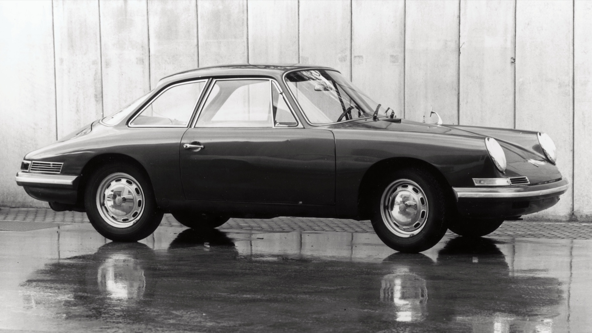
02-side-right.jpg Porsche Typ 754 T7, period factory photo (Porsche caption: 'Porsche Type 754, T7, 1959-1962'), black & white, right profile seen from slightly ahead, low camera, long lens. Same body as the museum car.source · Porsche AG (historic archive) · © Dr. Ing. h.c. F. Porsche AG — press/editorial use, kept locally as research reference only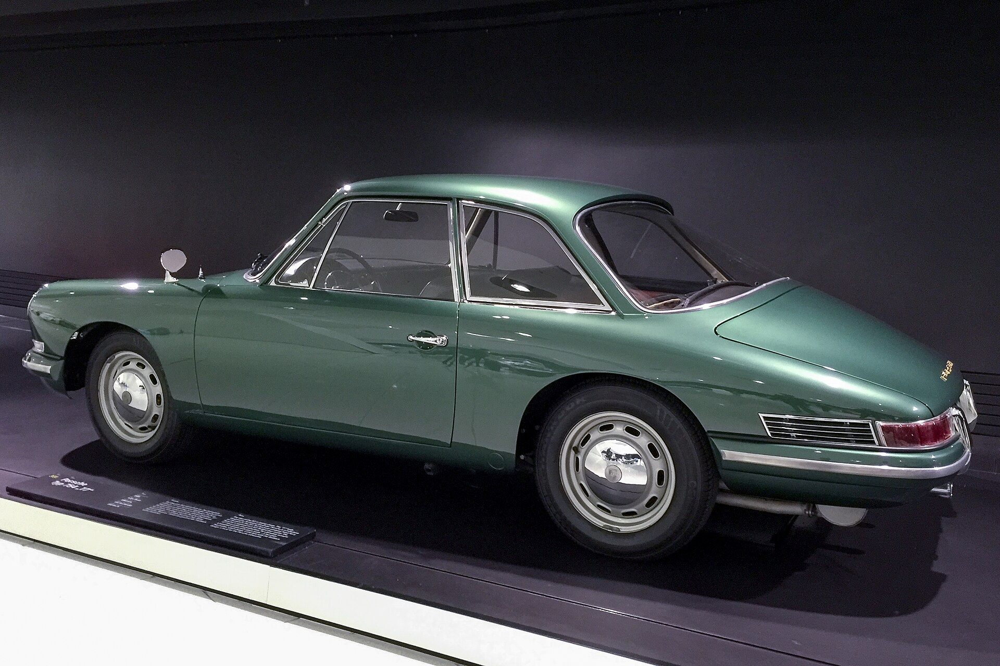
03-side-left.jpg Porsche Typ 754 T7 design prototype (F. A. 'Butzi' Porsche design, 1959; running prototype built 1960-61; 4-seat notchback-fastback, ~2,400 mm wheelbase per Porsche Newsroom), the unique car now in the Porsche Museum Stuttgart. Paint: dark green metallic (colour name not stated by source). Left side seen from slightly behind (Porsche Museum, 2016). Secondary profile reference.source · Curt Smith from Bellevue, WA, USA · CC BY 2.0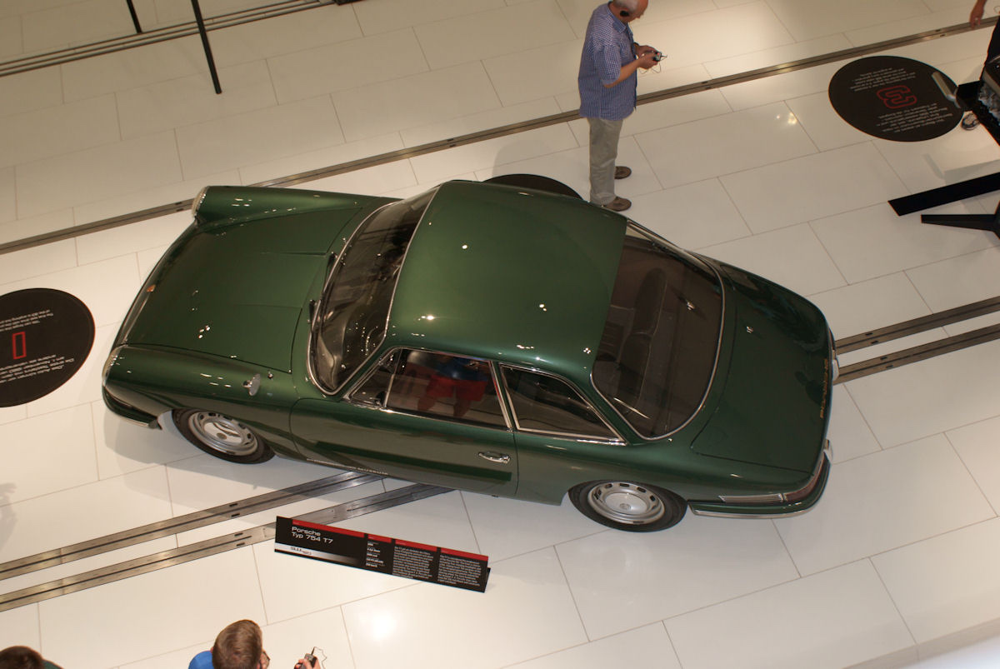
04-top.jpg Porsche Typ 754 T7 design prototype (F. A. 'Butzi' Porsche design, 1959; running prototype built 1960-61; 4-seat notchback-fastback, ~2,400 mm wheelbase per Porsche Newsroom), the unique car now in the Porsche Museum Stuttgart. Paint: dark green metallic (colour name not stated by source). High-angle view from above the left side (Porsche Museum, 2013) - shows roof, bonnet and engine-lid plan shape. Not a true orthographic top view.source · Valder137 · CC BY 2.0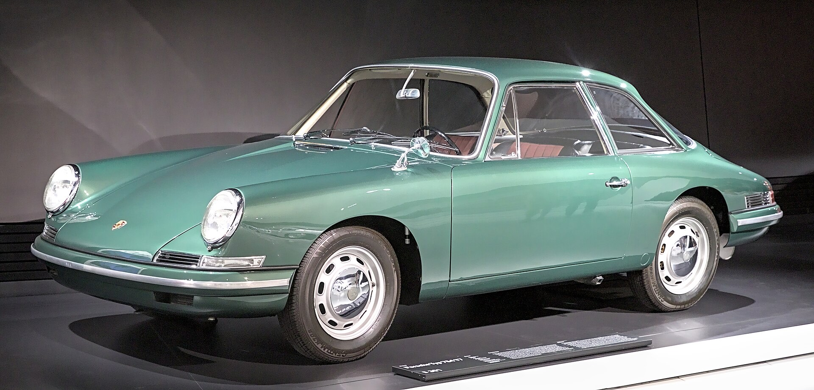
05-front-34-left.jpg Porsche Typ 754 T7 design prototype (F. A. 'Butzi' Porsche design, 1959; running prototype built 1960-61; 4-seat notchback-fastback, ~2,400 mm wheelbase per Porsche Newsroom), the unique car now in the Porsche Museum Stuttgart. Paint: dark green metallic (colour name not stated by source). Front three-quarter left, low camera, dark museum background (2022).source · Alexander Migl · CC BY-SA 4.0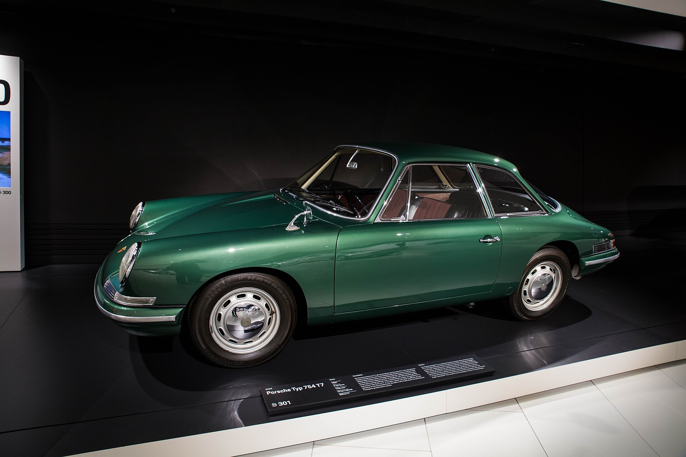
06-front-34-left.jpg Porsche Typ 754 T7 design prototype (F. A. 'Butzi' Porsche design, 1959; running prototype built 1960-61; 4-seat notchback-fastback, ~2,400 mm wheelbase per Porsche Newsroom), the unique car now in the Porsche Museum Stuttgart. Paint: dark green metallic (colour name not stated by source). Front three-quarter left, fairly side-on (Porsche Museum, 2021).source · Clemens Vasters from Viersen, Germany, Germany · CC BY 2.0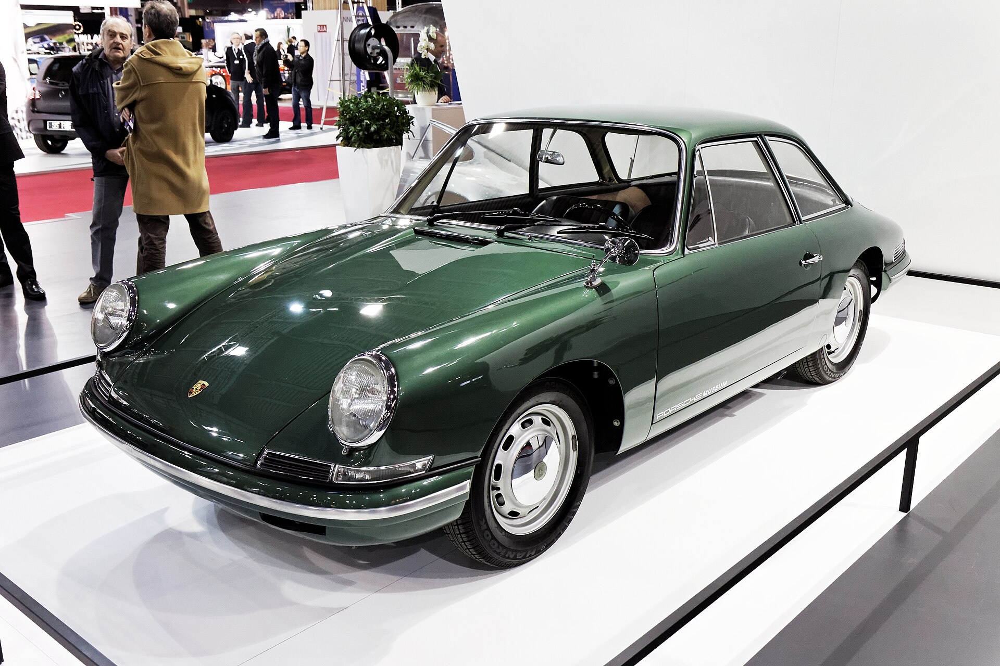
07-front-34-left.jpg Porsche Typ 754 T7 design prototype (F. A. 'Butzi' Porsche design, 1959; running prototype built 1960-61; 4-seat notchback-fastback, ~2,400 mm wheelbase per Porsche Newsroom), the unique car now in the Porsche Museum Stuttgart. Paint: dark green metallic (colour name not stated by source). Front three-quarter left on white stand, Retromobile Paris 2013 (visitors in background).source · Thesupermat · CC BY-SA 3.0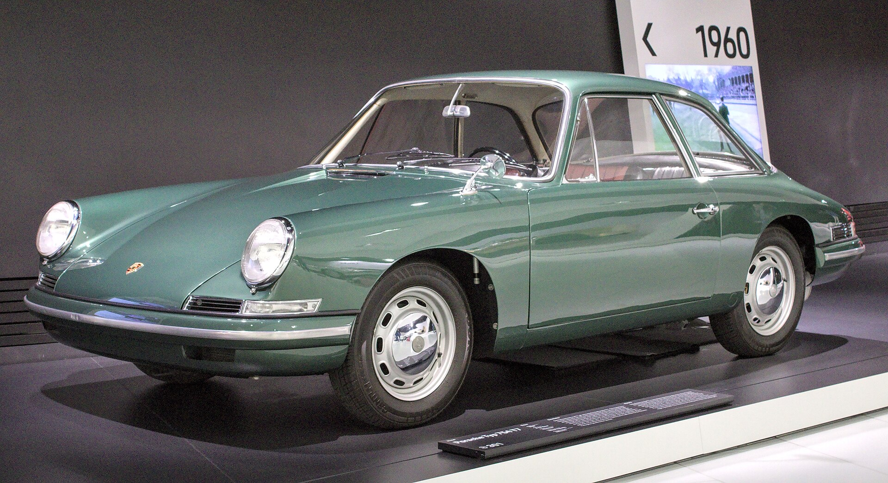
08-front-34-left.jpg Porsche Typ 754 T7 design prototype (F. A. 'Butzi' Porsche design, 1959; running prototype built 1960-61; 4-seat notchback-fastback, ~2,400 mm wheelbase per Porsche Newsroom), the unique car now in the Porsche Museum Stuttgart. Paint: dark green metallic (colour name not stated by source). Front three-quarter left, Porsche Museum (2020).source · Alexander Migl · CC BY-SA 4.0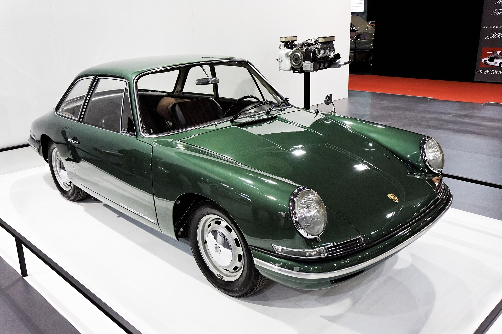
09-front-34-right.jpg Porsche Typ 754 T7 design prototype (F. A. 'Butzi' Porsche design, 1959; running prototype built 1960-61; 4-seat notchback-fastback, ~2,400 mm wheelbase per Porsche Newsroom), the unique car now in the Porsche Museum Stuttgart. Paint: dark green metallic (colour name not stated by source). Front three-quarter right on white stand, Retromobile Paris 2013 - clean background, good for front/bonnet shape.source · Thesupermat · CC BY-SA 3.0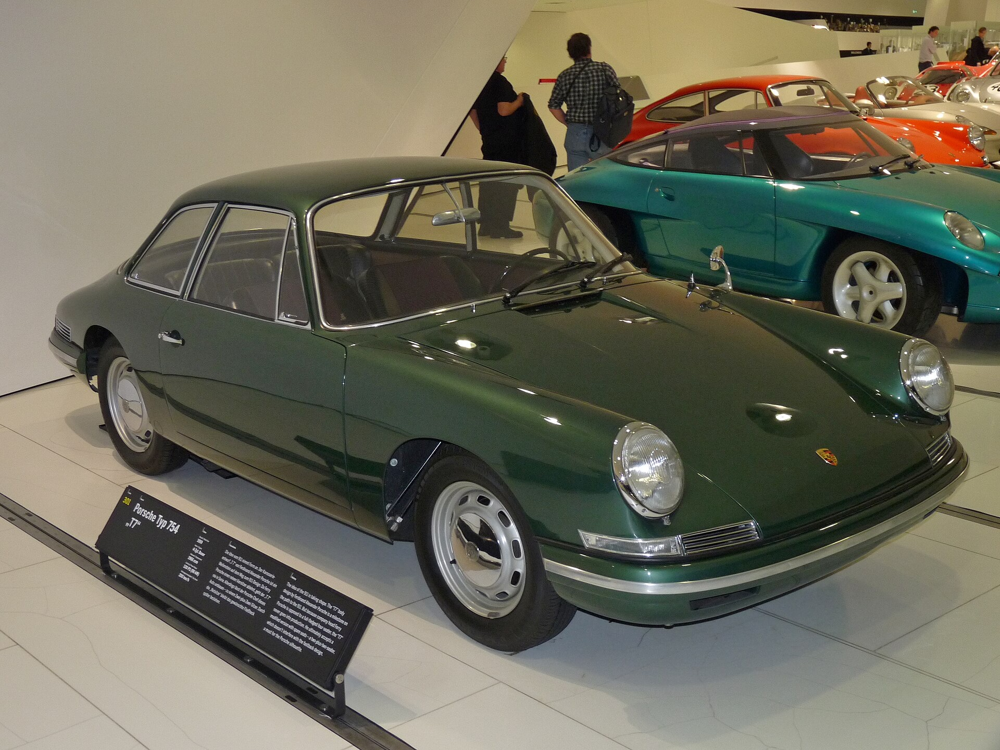
10-front-34-right.jpg Porsche Typ 754 T7 design prototype (F. A. 'Butzi' Porsche design, 1959; running prototype built 1960-61; 4-seat notchback-fastback, ~2,400 mm wheelbase per Porsche Newsroom), the unique car now in the Porsche Museum Stuttgart. Paint: dark green metallic (colour name not stated by source). Front three-quarter right, Porsche Museum (2010).source · Detectandpreserve · CC BY-SA 3.0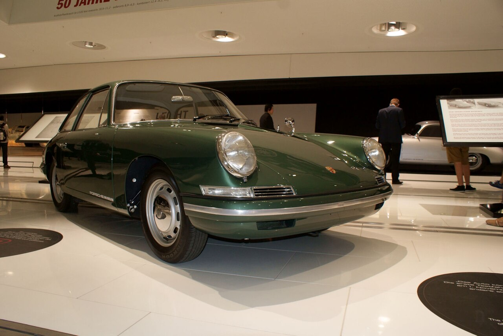
11-front-34-right.jpg Porsche Typ 754 T7 design prototype (F. A. 'Butzi' Porsche design, 1959; running prototype built 1960-61; 4-seat notchback-fastback, ~2,400 mm wheelbase per Porsche Newsroom), the unique car now in the Porsche Museum Stuttgart. Paint: dark green metallic (colour name not stated by source). Front three-quarter right, Porsche Museum (2013). Lower resolution (1280 px).source · Valder137 · CC BY 2.0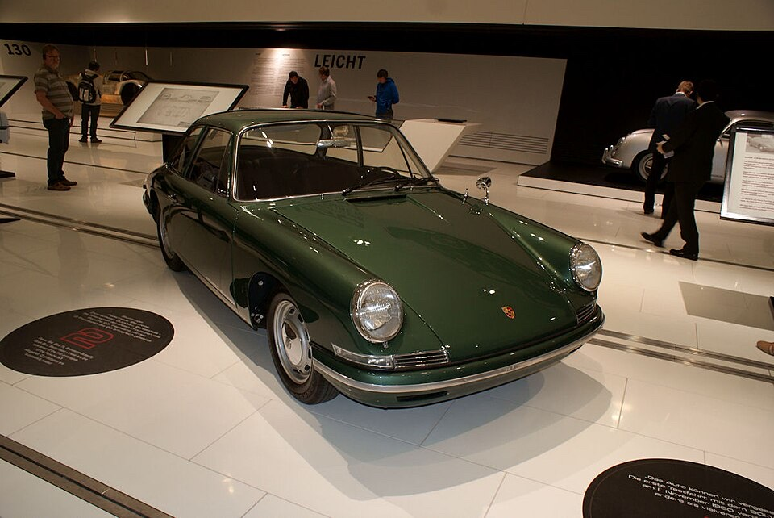
12-front-34-right.jpg Porsche Typ 754 T7 design prototype (F. A. 'Butzi' Porsche design, 1959; running prototype built 1960-61; 4-seat notchback-fastback, ~2,400 mm wheelbase per Porsche Newsroom), the unique car now in the Porsche Museum Stuttgart. Paint: dark green metallic (colour name not stated by source). Front three-quarter right, more side-on (Porsche Museum, 2013). Lower resolution (960 px).source · Valder137 · CC BY 2.0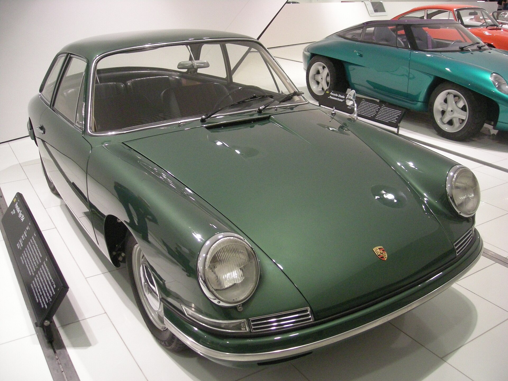
13-front-34-right.jpg Porsche Typ 754 T7 design prototype (F. A. 'Butzi' Porsche design, 1959; running prototype built 1960-61; 4-seat notchback-fastback, ~2,400 mm wheelbase per Porsche Newsroom), the unique car now in the Porsche Museum Stuttgart. Paint: dark green metallic (colour name not stated by source). Close front three-quarter right (Porsche Museum, 2012) - useful for headlight, horn grille and bumper detail.source · Michael Barera · CC BY-SA 4.0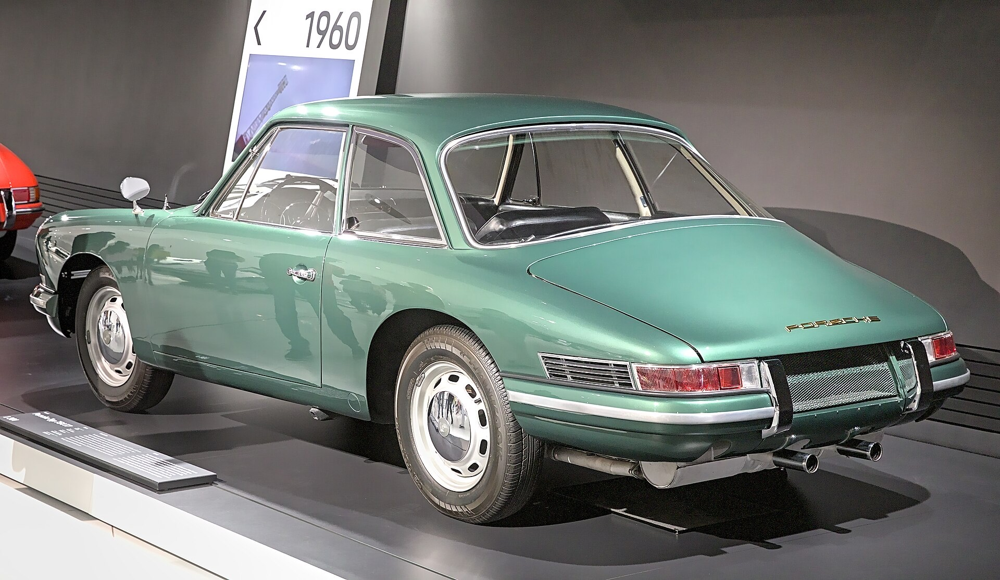
14-rear-34-left.jpg Porsche Typ 754 T7 design prototype (F. A. 'Butzi' Porsche design, 1959; running prototype built 1960-61; 4-seat notchback-fastback, ~2,400 mm wheelbase per Porsche Newsroom), the unique car now in the Porsche Museum Stuttgart. Paint: dark green metallic (colour name not stated by source). Rear three-quarter left, dark museum background (2022) - best view of the notchback rear, engine lid, 'PORSCHE' script, taillights, overriders with mesh panel and twin exhaust.source · Alexander Migl · CC BY-SA 4.0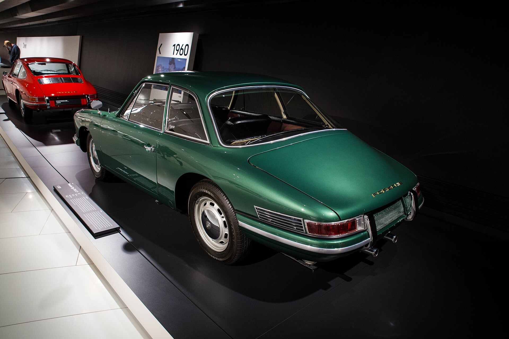
15-rear-34-left.jpg Porsche Typ 754 T7 design prototype (F. A. 'Butzi' Porsche design, 1959; running prototype built 1960-61; 4-seat notchback-fastback, ~2,400 mm wheelbase per Porsche Newsroom), the unique car now in the Porsche Museum Stuttgart. Paint: dark green metallic (colour name not stated by source). Rear three-quarter left (Porsche Museum, 2021); red early 911/901 visible in background.source · Clemens Vasters from Viersen, Germany, Germany · CC BY 2.0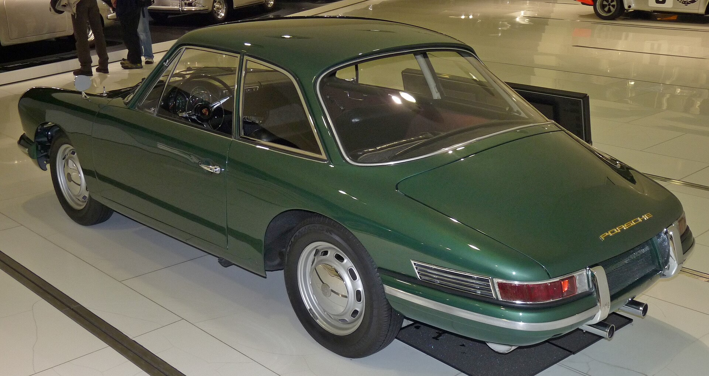
16-rear-34-left.jpg Porsche Typ 754 T7 design prototype (F. A. 'Butzi' Porsche design, 1959; running prototype built 1960-61; 4-seat notchback-fastback, ~2,400 mm wheelbase per Porsche Newsroom), the unique car now in the Porsche Museum Stuttgart. Paint: dark green metallic (colour name not stated by source). Rear three-quarter left (Porsche Museum, 2010).source · Detectandpreserve · CC BY-SA 3.0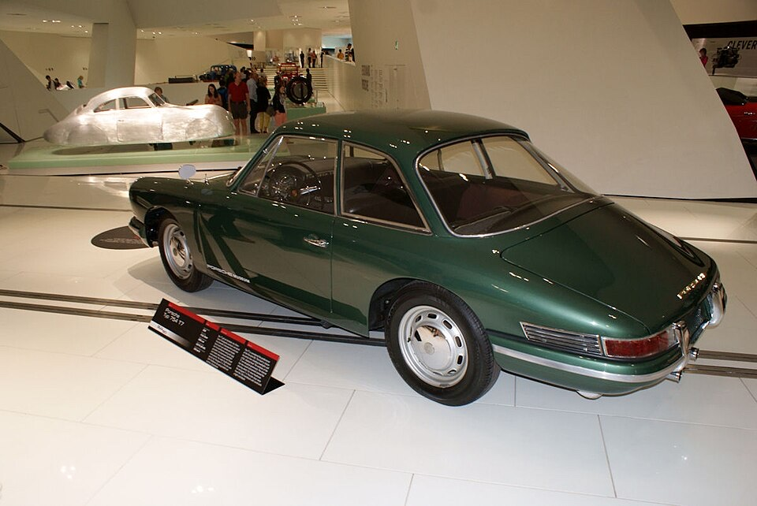
17-rear-34-left.jpg Porsche Typ 754 T7 design prototype (F. A. 'Butzi' Porsche design, 1959; running prototype built 1960-61; 4-seat notchback-fastback, ~2,400 mm wheelbase per Porsche Newsroom), the unique car now in the Porsche Museum Stuttgart. Paint: dark green metallic (colour name not stated by source). Rear three-quarter left, higher camera (Porsche Museum, 2013). Lower resolution (960 px).source · Valder137 · CC BY 2.0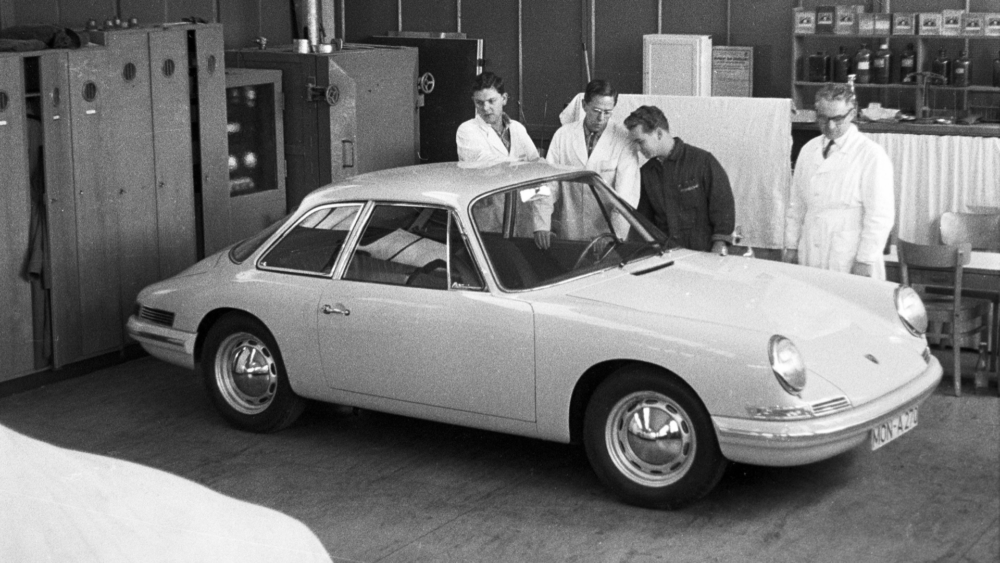
18-other.jpg Porsche Typ 754 T7 in the Porsche workshop, period black & white photo (Newsroom caption on page: 'Porsche Type 754 T7 (draft by F.A. Porsche)'; file metadata says 'Porsche type 695' - 695 was the project number of the 356 successor). Front three-quarter right with engineers; car painted a light colour at the time, registration MON-A 270(?).source · Porsche AG (historic archive) · © Dr. Ing. h.c. F. Porsche AG — press/editorial use, kept locally as research reference onlyBlueprints 01-901-1963 Porsche 901 prototype, IAA Frankfurt debut · 1963 25 photos · 4 blueprints
Model Porsche 901 Coupé (IAA Frankfurt show car, 12 September 1963; 901-badged production cars 1964) Code 901 (engine 901/01, gearbox 'Type 901'); the four-cylinder sister was 902 → 912 Years Prototypes 1962–1964 (first prototype on the road 9 Nov 1962); world premiere 12 Sep 1963; series production from 14 Sep 1964; 901 badging used until the renaming to 911 in Oct/Nov 1964 Engine 1991 cc Rear-mounted flat-six (boxer), one overhead camshaft per bank (chain-driven via intermediate shaft), 2 valves per cylinder, 8 main bearings, dry-sump lubrication naturally aspirated Power 130 PS @ 6100 Torque 174 Nm 0-100 9.1 Top speed 210 km/h Weight 1080 kg (DIN kerb weight (production 901/911 2.0, 1964)) L/W/H/WB 4135/1600/1273/2204 Summary Porsche unveiled the 356's successor as the 901 at the Frankfurt IAA on 12 September 1963: a 2+2 fastback designed by Butzi Porsche with a new 130 PS air-cooled flat-six. Series production started on 14 September 1964, but after Peugeot objected to numbers with a zero in the middle, the car was renamed 911 – only 82 were built as 901s.
6407 6406 6401 6402 6403 6404 6405 6410 6411 6412 6413
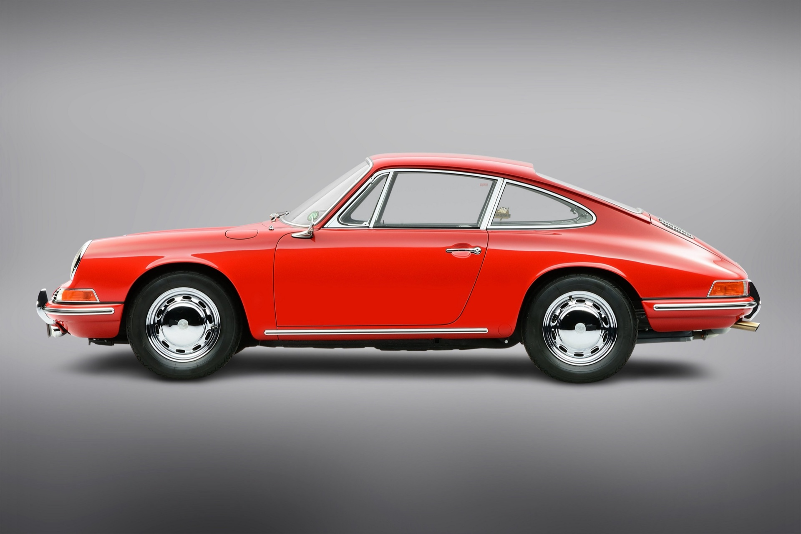
side ref 01-side-left.jpg Porsche 911 '901 No. 57' (chassis 300 057), built 1964 as a Porsche 901 and delivered as a 911 after the Peugeot naming dispute; the Porsche Museum's oldest 911, restored by the museum 2014-2017. Paint: Signal Red (per Porsche Newsroom). Studio photo, true left profile on plain grey background, long lens, wheels circular.source · Porsche AG / Porsche Museum · © Dr. Ing. h.c. F. Porsche AG — press/editorial use, kept locally as research reference only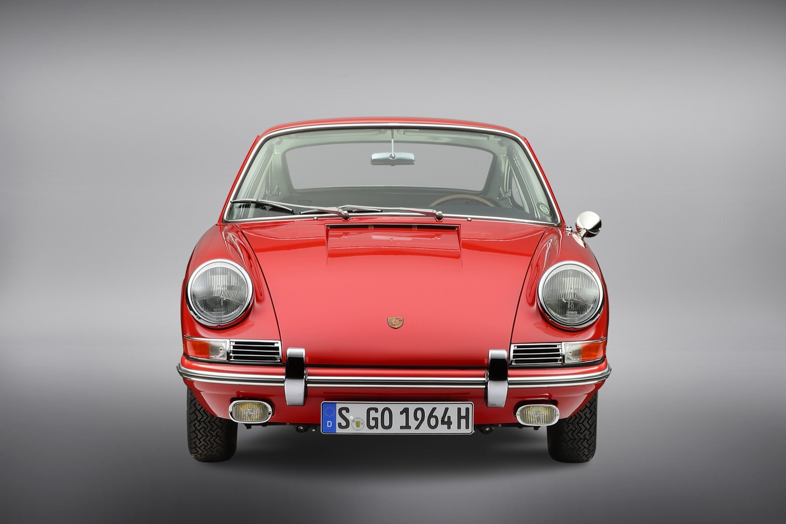
front ref 02-front.jpg Porsche 911 '901 No. 57' (chassis 300 057), built 1964 as a Porsche 901 and delivered as a 911 after the Peugeot naming dispute; the Porsche Museum's oldest 911, restored by the museum 2014-2017. Paint: Signal Red (per Porsche Newsroom). Studio photo, straight-on front on plain grey background.source · Porsche AG / Porsche Museum · © Dr. Ing. h.c. F. Porsche AG — press/editorial use, kept locally as research reference only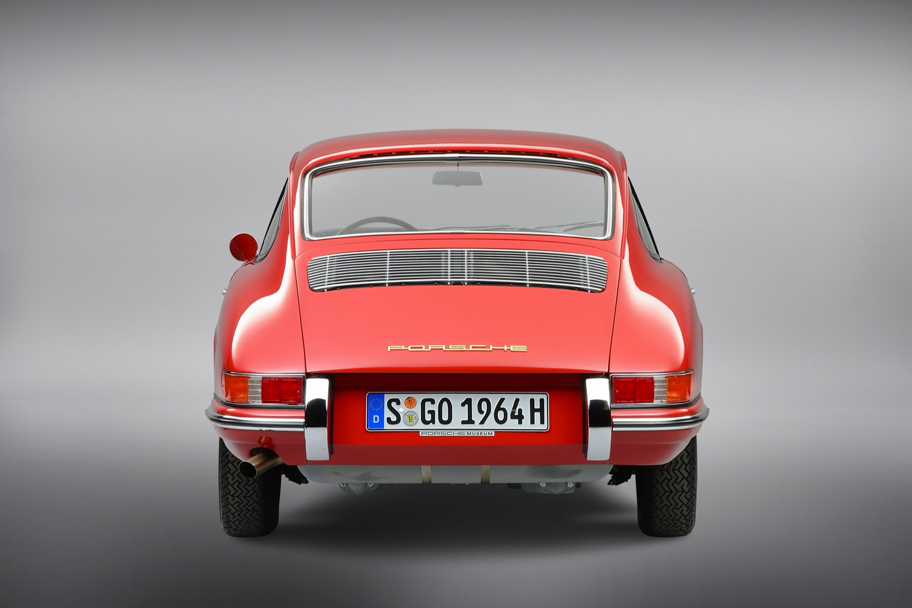
rear ref 03-rear.jpg Porsche 911 '901 No. 57' (chassis 300 057), built 1964 as a Porsche 901 and delivered as a 911 after the Peugeot naming dispute; the Porsche Museum's oldest 911, restored by the museum 2014-2017. Paint: Signal Red (per Porsche Newsroom). Studio photo, straight-on rear on plain grey background (gold PORSCHE script, grille, overriders, exhaust).source · Porsche AG / Porsche Museum · © Dr. Ing. h.c. F. Porsche AG — press/editorial use, kept locally as research reference only04-front-34-left.jpg Porsche 911 '901 No. 57' (chassis 300 057), built 1964 as a Porsche 901 and delivered as a 911 after the Peugeot naming dispute; the Porsche Museum's oldest 911, restored by the museum 2014-2017. Paint: Signal Red (per Porsche Newsroom). Studio photo, front three-quarter left, plain background.source · Porsche AG / Porsche Museum · © Dr. Ing. h.c. F. Porsche AG — press/editorial use, kept locally as research reference only05-rear-34-left.jpg Porsche 911 '901 No. 57' (chassis 300 057), built 1964 as a Porsche 901 and delivered as a 911 after the Peugeot naming dispute; the Porsche Museum's oldest 911, restored by the museum 2014-2017. Paint: Signal Red (per Porsche Newsroom). Studio photo, rear three-quarter left, plain background.source · Porsche AG / Porsche Museum · © Dr. Ing. h.c. F. Porsche AG — press/editorial use, kept locally as research reference only06-front-34-left.jpg Porsche Type 901 prototype, 1963-64 (Porsche caption 'Type 901 prototype, 1963-1964'; article caption 'Type 901 prototype from 1963'), period colour photo, pale yellow car with 'TYP 901' plate, front three-quarter left in autumn woods.source · Porsche AG (historic archive) · © Dr. Ing. h.c. F. Porsche AG — press/editorial use, kept locally as research reference only07-side-left.jpg Porsche Type 901 prototype, 1963 (Porsche caption '1963, Porsche Type 901, Generations') — same pale yellow prototype as the 'TYP 901' photo, left profile in autumn woods, period colour photo. Car occupies only the lower-middle of a square frame (~650 px long at this size) — the only period profile of the prototype found.source · Porsche AG (historic archive) · © Dr. Ing. h.c. F. Porsche AG — press/editorial use, kept locally as research reference only08-front-34-left.jpg Porsche 901 prototype '901-1' (Porsche caption 'Prototype 901-1, 1964'), black & white period photo at the factory, white(-ish) car, front three-quarter left, plate S-CU 902(?).source · Porsche AG (historic archive) · © Dr. Ing. h.c. F. Porsche AG — press/editorial use, kept locally as research reference only09-front.jpg Porsche 901 Coupé prototype, 1964 (Porsche caption '1964, 901 Coupé, Prototype'), red, plate S-SK 725 — period colour photo, straight-on front (slightly high camera).source · Porsche AG (historic archive) · © Dr. Ing. h.c. F. Porsche AG — press/editorial use, kept locally as research reference only10-front-34-left.jpg Porsche Type 901 prototype (Porsche caption '1963, 911 Type 901'), very pale green/white car, plate S-CU 902 — period colour photo with a model and 356 cabriolets behind; front three-quarter left. Same car (S-CU 902) as the B&W 'Prototype 901-1' photo.source · Porsche AG (historic archive) · © Dr. Ing. h.c. F. Porsche AG — press/editorial use, kept locally as research reference only11-other.jpg IAA Frankfurt, September 1963: presentation of the Porsche Type 901 (crowd around the show car, front view). Historical context for the debut; car partly hidden by visitors.source · Porsche AG (historic archive) · © Dr. Ing. h.c. F. Porsche AG — press/editorial use, kept locally as research reference only12-other.jpg Porsche 901 sales brochure spread (1963/64; Porsche caption '1963, Type 901'): red 901 in near-orthographic LEFT profile (retouched photo, wheels circular) above a cutaway line drawing of the package. Brochure data (companion page): wheelbase 2,204 mm, track 1,332/1,312 mm, length 4,135 mm, width 1,600 mm, height 1,273 mm.source · Porsche AG (historic brochure) · © Dr. Ing. h.c. F. Porsche AG — press/editorial use, kept locally as research reference only13-other.jpg Porsche 901 sales brochure, technical-data spread (1963/64; Porsche caption '1963, Type 901') with period photos (front 3/4, rear, interior, luggage). Readable data (German): Radstand 2204 mm, Spurweite vorn 1332 / hinten 1312 mm, Länge 4135 mm, Breite 1600 mm, Höhe 1273 mm, Bodenfreiheit 118 mm, Wendekreis 10 m, Tank ca. 68 l, Vmax ca. 210 km/h, 0-100 km/h 9.1 s, tyres 165-15 on 4½J x 15 wheels, 5-speed gearbox.source · Porsche AG (historic brochure) · © Dr. Ing. h.c. F. Porsche AG — press/editorial use, kept locally as research reference only14-side-left.jpg Porsche 901 — early 1964 901-era coupé from the Porsche Museum collection, photographed 2023 for the '60 Years 911' press kit (Porsche caption: 'Porsche 901'; exact chassis not stated — engine-lid script is chrome here vs gold on 901 No. 57, so treat as an early 901/O-series car, not necessarily No. 57). Red paint. Left profile on an airfield, shot from a distance (slight perspective).source · Porsche AG · © Dr. Ing. h.c. F. Porsche AG — press/editorial use, kept locally as research reference only15-front-34-left.jpg Porsche 901 — early 1964 901-era coupé from the Porsche Museum collection, photographed 2023 for the '60 Years 911' press kit (Porsche caption: 'Porsche 901'; exact chassis not stated — engine-lid script is chrome here vs gold on 901 No. 57, so treat as an early 901/O-series car, not necessarily No. 57). Red paint. Front three-quarter left, airfield.source · Porsche AG · © Dr. Ing. h.c. F. Porsche AG — press/editorial use, kept locally as research reference only16-rear-34-right.jpg Porsche 901 — early 1964 901-era coupé from the Porsche Museum collection, photographed 2023 for the '60 Years 911' press kit (Porsche caption: 'Porsche 901'; exact chassis not stated — engine-lid script is chrome here vs gold on 901 No. 57, so treat as an early 901/O-series car, not necessarily No. 57). Red paint. Rear three-quarter right, airfield.source · Porsche AG · © Dr. Ing. h.c. F. Porsche AG — press/editorial use, kept locally as research reference only17-front.jpg Porsche 901 — early 1964 901-era coupé from the Porsche Museum collection, photographed 2023 for the '60 Years 911' press kit (Porsche caption: 'Porsche 901'; exact chassis not stated — engine-lid script is chrome here vs gold on 901 No. 57, so treat as an early 901/O-series car, not necessarily No. 57). Red paint. Straight-on front, slightly low camera.source · Porsche AG · © Dr. Ing. h.c. F. Porsche AG — press/editorial use, kept locally as research reference only18-detail-headlight.jpg Porsche 901 — early 1964 901-era coupé from the Porsche Museum collection, photographed 2023 for the '60 Years 911' press kit (Porsche caption: 'Porsche 901'; exact chassis not stated — engine-lid script is chrome here vs gold on 901 No. 57, so treat as an early 901/O-series car, not necessarily No. 57). Red paint. Detail: headlight, horn grille, indicator, front overrider and bonnet crest.source · Porsche AG · © Dr. Ing. h.c. F. Porsche AG — press/editorial use, kept locally as research reference only19-detail-engine-lid.jpg Porsche 901 — early 1964 901-era coupé from the Porsche Museum collection, photographed 2023 for the '60 Years 911' press kit (Porsche caption: 'Porsche 901'; exact chassis not stated — engine-lid script is chrome here vs gold on 901 No. 57, so treat as an early 901/O-series car, not necessarily No. 57). Red paint. Detail: engine lid with slatted grille, 'PORSCHE' script, rear overrider and taillight corner.source · Porsche AG · © Dr. Ing. h.c. F. Porsche AG — press/editorial use, kept locally as research reference only20-other.jpg Porsche 901 — early 1964 901-era coupé from the Porsche Museum collection, photographed 2023 for the '60 Years 911' press kit (Porsche caption: 'Porsche 901'; exact chassis not stated — engine-lid script is chrome here vs gold on 901 No. 57, so treat as an early 901/O-series car, not necessarily No. 57). Red paint. Engine bay: 2.0-litre air-cooled flat-six (Type 901 engine).source · Porsche AG · © Dr. Ing. h.c. F. Porsche AG — press/editorial use, kept locally as research reference only21-interior.jpg Porsche 901 — early 1964 901-era coupé from the Porsche Museum collection, photographed 2023 for the '60 Years 911' press kit (Porsche caption: 'Porsche 901'; exact chassis not stated — engine-lid script is chrome here vs gold on 901 No. 57, so treat as an early 901/O-series car, not necessarily No. 57). Red paint. Interior: dashboard with five round gauges, wood trim strip, wooden steering wheel, houndstooth seats.source · Porsche AG · © Dr. Ing. h.c. F. Porsche AG — press/editorial use, kept locally as research reference only22-front-34-right.jpg Porsche 911 '901 No. 57' (chassis 300 057), built 1964 as a Porsche 901 and delivered as a 911 after the Peugeot naming dispute; the Porsche Museum's oldest 911, restored by the museum 2014-2017. Paint: Signal Red (per Porsche Newsroom). Front three-quarter right in the Porsche Museum workshop after restoration (2017).source · Porsche AG · © Dr. Ing. h.c. F. Porsche AG — press/editorial use, kept locally as research reference only23-front-34-left.jpg 1963 Porsche 901 prototype 'Quickblau' (prototype no. 6 of the original 901 prototypes), owned by Alois Ruf, displayed at Pebble Beach Concours 2023. Light blue paint. Front three-quarter left; driver's door open, visitors around.source · Prova MO · CC BY-SA 4.024-front-34-right.jpg 1963 Porsche 901 prototype 'Quickblau' (prototype no. 6 of the original 901 prototypes), owned by Alois Ruf, displayed at Pebble Beach Concours 2023. Light blue paint. Front three-quarter right (Alois Ruf at the driver's door, visitors).source · Prova MO · CC BY-SA 4.025-interior.jpg 1963 Porsche 901 prototype 'Quickblau' (prototype no. 6 of the original 901 prototypes), owned by Alois Ruf, displayed at Pebble Beach Concours 2023. Light blue paint. Interior: wood dash strip, five gauges, wooden steering wheel, houndstooth seats (a '901' book lies on the seat).source · Prova MO · CC BY-SA 4.0Blueprints brochure_901_1963_phantom_side.png official_porsche_sketch_1963_front.jpg official_porsche_sketch_1963_side.jpg tbp-64510_porsche-901-1963_side.png 02-911-swb-1964 911 (O-series), short wheelbase, 2.0 · 1964–1968 24 photos · 11 blueprints
Model 911 2.0 Coupé (1964) Code 901 (O-series 1964–67, A-series MY1968); '901' remained the engine/gearbox type and parts-number prefix after the car was renamed 911 Years 1964–1968 Engine 1991 cc rear-mounted flat-six (boxer), one overhead camshaft per bank (chain-driven), 2 valves per cylinder, dry-sump lubrication naturally aspirated Power 130 PS @ 6100 Torque 174 Nm 0-100 9.1 Top speed 210 km/h Weight 1080 kg (DIN kerb weight (German 'Leergewicht', unladen, full tank, no driver)) L/W/H/WB 4163/1610/1320/2211 Summary The first production 911: a compact 2+2 coupé with an air-cooled 2.0-litre flat-six (130 PS) hung behind the rear axle and a shape by F. A. 'Butzi' Porsche. It cost 21,900 DM, reached 210 km/h and, on the original 2,211 mm wheelbase, quickly spawned the 912, Targa, 911 S, T and L.
6407 / 016 6402 / 015 6403 6404 / 6604 / 6804 6405 / 6822 6406 / 6606 / 6806 6401 / 6601 / 6801 6410 6411 6412 6413 / 6609 6602 / 6802 6605 / 6805 6607 / 6807 6603 6608 6803 6808 6809 6823 / 114 6829 6836 6835 622 / 6834 6824 6826 75741 6710 / 6767 6851 6853 6852 6854
side ref 01-side-left.jpg Porsche 911 2.0 Coupé 1965 (Porsche caption '1965, 911 2.0 Coupé, Generations'), white, studio shot on dark gradient background — true left profile, long lens, wheels circular. Probable native resolution slightly below 1920 px (served by Porsche's image server).source · Porsche AG · © Dr. Ing. h.c. F. Porsche AG — press/editorial use, kept locally as research reference onlyfront ref 02-front.jpg Porsche 911 2.0 Coupé, model year 1964 (Porsche Museum car, plate S-GO 4001), dark slate-grey paint (colour name not given), photographed by Porsche in 2013 next to a 991 Carrera 4S for the 911's 50th anniversary. Straight-on front view in the studio; the 1964 car is the LEFT car, the 991 Carrera 4S is on the right.source · Porsche AG · © Dr. Ing. h.c. F. Porsche AG — press/editorial use, kept locally as research reference onlyrear ref 03-rear.jpg Porsche 911 2.0 Coupé, model year 1964 (Porsche Museum car, plate S-GO 4001), dark slate-grey paint (colour name not given), photographed by Porsche in 2013 next to a 991 Carrera 4S for the 911's 50th anniversary. Straight-on rear view in the studio; the 1964 car is the LEFT car (plate S-GO 4001), 991 on the right.source · Porsche AG · © Dr. Ing. h.c. F. Porsche AG — press/editorial use, kept locally as research reference only04-rear-34-right.jpg Porsche 911 Coupé 2.0, 1965 (Porsche caption '1965, 911 Coupé, 2.0, Generations'), white, period studio photo on green background, rear three-quarter right, plate S-SR 201.source · Porsche AG (historic archive) · © Dr. Ing. h.c. F. Porsche AG — press/editorial use, kept locally as research reference only05-detail-engine-lid.jpg Porsche 911 2.0 Coupé, model year 1964 (Porsche Museum car, plate S-GO 4001), dark slate-grey paint (colour name not given), photographed by Porsche in 2013 next to a 991 Carrera 4S for the 911's 50th anniversary. Detail: engine lid with slatted grille, gold 'PORSCHE' script and gold '911' script.source · Porsche AG · © Dr. Ing. h.c. F. Porsche AG — press/editorial use, kept locally as research reference only06-detail-taillight.jpg Porsche 911 2.0 Coupé, model year 1964 (Porsche Museum car, plate S-GO 4001), dark slate-grey paint (colour name not given), photographed by Porsche in 2013 next to a 991 Carrera 4S for the 911's 50th anniversary. Detail (portrait): rear wing, taillight and '911' script.source · Porsche AG · © Dr. Ing. h.c. F. Porsche AG — press/editorial use, kept locally as research reference only07-interior.jpg Porsche 911 2.0 Coupé, model year 1964 (Porsche Museum car, plate S-GO 4001), dark slate-grey paint (colour name not given), photographed by Porsche in 2013 next to a 991 Carrera 4S for the 911's 50th anniversary. Interior: five round gauges, wood dash strip, wooden steering wheel with horn ring, red leather.source · Porsche AG · © Dr. Ing. h.c. F. Porsche AG — press/editorial use, kept locally as research reference only08-interior.jpg Porsche 911 2.0 Coupé, model year 1964 (Porsche Museum car, plate S-GO 4001), dark slate-grey paint (colour name not given), photographed by Porsche in 2013 next to a 991 Carrera 4S for the 911's 50th anniversary. Interior: red leather seats, door card, dashboard from the passenger side.source · Porsche AG · © Dr. Ing. h.c. F. Porsche AG — press/editorial use, kept locally as research reference only09-side-left.jpg Porsche 911 2.0 Coupé 1965, white, Porsche Museum (Commons category 'Porsche 911 2.0 Coupé (1965, white) in the Porsche-Museum (2009)'). Left side in museum; 960 px only.source · Valder137 · CC BY 2.010-front-34-left.jpg 1965 Porsche 911 (2.0) coupé, white — per Commons description: chassis no. 941 of production, first owner the US ambassador to West Germany; shown at Festival automobile international 2013, Paris. Front three-quarter left.source · Thesupermat · CC BY-SA 3.011-front-34-right.jpg 1965 Porsche 911 (2.0) coupé, white — per Commons description: chassis no. 941 of production, first owner the US ambassador to West Germany; shown at Festival automobile international 2013, Paris. Front three-quarter right.source · Thesupermat · CC BY-SA 3.012-rear-34-left.jpg 1965 Porsche 911 (2.0) coupé, white — per Commons description: chassis no. 941 of production, first owner the US ambassador to West Germany; shown at Festival automobile international 2013, Paris. Rear three-quarter left.source · Thesupermat · CC BY-SA 3.013-rear-34-right.jpg 1965 Porsche 911 (2.0) coupé, white — per Commons description: chassis no. 941 of production, first owner the US ambassador to West Germany; shown at Festival automobile international 2013, Paris. Rear three-quarter right.source · Thesupermat · CC BY-SA 3.014-top.jpg Porsche 911 2.0 Coupé 1965, grey (slate grey), Porsche Museum Stuttgart (Commons category 'Porsche 911 2.0 Coupé (1965, grey) in the Porsche-Museum (2009)'). High-angle rear three-quarter left from above — shows roof, rear window, engine-lid grille and scripts in plan-like view.source · Nathanael Burton · CC BY-SA 2.015-front-34-left.jpg Porsche 911 2.0 Coupé 1965, grey (slate grey), Porsche Museum Stuttgart (Commons category 'Porsche 911 2.0 Coupé (1965, grey) in the Porsche-Museum (2009)'). Front three-quarter left.source · Nathanael Burton · CC BY-SA 2.016-front-34-left.jpg Porsche 911 2.0 Coupé (1964, per Commons description), blue, Porsche Museum 2018 — nearly side-on front three-quarter left.source · Alexander Migl · CC BY-SA 4.017-front-34-left.jpg 1966 Porsche 911 in Polo Red ('pólópiros' per the Commons title) at Batthyány castle, Bicske, Hungary — front three-quarter left, outdoors.source · WhiteSkiff · CC BY-SA 4.018-front-34-right.jpg 1967 Porsche 911 S (per Commons description), black, London Concours 2021 — mostly frontal three-quarter right; shows the 911 S's forged Fuchs alloy wheels.source · MrWalkr · CC BY-SA 4.019-front-34-left.jpg 1968 Porsche 911 S, dark red/maroon, ZeitHaus museum at Autostadt Wolfsburg (per Commons description) — front three-quarter left.source · Michael Barera · CC BY-SA 4.020-rear-34-left.jpg 1968 Porsche 911 S (same Autostadt ZeitHaus car), rear three-quarter left.source · Herranderssvensson · CC BY-SA 3.021-front-34-left.jpg 1968 Porsche 911 S 2.0-litre 'SWB' coupé, black, Bonhams Paris sale 2012 (catalogue title explicitly says SWB) — front three-quarter left, fairly side-on.source · Thesupermat · CC BY-SA 3.022-front-34-right.jpg Porsche 911 L (1968 model-year only variant, SWB), red, Oldtimermuseum Nottuln 2021 — front three-quarter right.source · Dietmar Rabich · CC BY-SA 4.023-detail-engine-lid.jpg Porsche 911 L, red (same Nottuln car) — engine lid with grille, gold 'PORSCHE' script and '911L' badge.source · Dietmar Rabich · CC BY-SA 4.024-interior.jpg 1965 Porsche 911 (per Commons description), silver car at Vänersborg, Sweden — interior: wood dash strip, five gauges, wooden wheel, houndstooth seats.source · Herranderssvensson · CC BY-SA 3.0Blueprints commons_Porsche_911_targa_profile_1967.svg commons_Porsche_911_targa_profile_1967_render-3840.png official_porsche_sketch_1963_front.jpg official_porsche_sketch_1963_side.jpg tbp-17867_porsche-911-1965_cutaway-side.gif tbp-40868_porsche-911-1967_factory-body-4view-mm.png tbp-40871_porsche-911-targa-1967_factory-body-4view-mm.png tbp-53230_porsche-911-1968_4view-colour.png tbp-55425_porsche-911-1966_autocar-side-front-dims.png vec-1486_porsche-911s-1967_4view-dims-watermarked.jpg vec-3097_porsche-911-1967_4view-dims-watermarked.jpg 03-911-lwb-1969 911 long wheelbase (B/C/D/E/F series), 2.0/2.2/2.4, T/E/S · 1969–1973 26 photos · 3 blueprints
Model 911 T 2.0 Coupé (1969, B-series) Code 901 (B-series, MY1969; engine 901/03, 901/13 with Sportomatic). From the C-series (MY1970) the type/parts prefix became '911'. Series letters: B (MY1969), C (MY1970), D (MY1971), E (MY1972), F (MY1973) Years 1968–1973 Engine 1991 cc rear-mounted flat-six (boxer), one overhead camshaft per bank, 2 valves per cylinder, dry-sump lubrication naturally aspirated Power 110 PS @ 5800 Torque 157 Nm 0-100 10.0 Top speed 200 km/h Weight 1020 kg (kerb weight as quoted (DIN basis assumed)) L/W/H/WB 4163/1610/1320/2268 Summary From model year 1969 Porsche moved the 911's rear wheels back 57 mm (wheelbase 2,268 mm) to tame its handling, and split the range into the carburetted T, the injected E and the top S. Engines grew to 2.2 litres (1970) and 2.4 litres (1972): the entry 911 T went from 110 to 130 PS while the 911 S reached 190 PS and 230 km/h.
041 6804 / 1111 / 131 132 908 6801 6802 6806 / 1515 / 213 6805 6807 6809 / 2323 / 018 6823 / 114 6808 / 2424 / 017 6803 6822 6835 / 414 6836 / 7474 / 415 7575 / 622 218 6826 / 321 6825 / 320 6824 / 115 6829 / 217 620 1818 / 325 1313 / 022 / 013 2626 / 222 6666 / 326 6262 / 117 1414 / 116 / L20E 7979 / 023 6464 / 340 220 6161 / 019 225 025 328 024 329 305 227 137 6710 / 6767 / 226 6851 / 8080 / 936 6853 / 3224 / 334 6852 6854 8383 / 221 / 230 8181 / 021 8484 / 330 / 335 8888 / 133
side ref 01-side-right.jpg 1973 Porsche 911 T 2.4 'Classic' coupé in Light Ivory 131 (RAL 1015), per the Commons description (author Rundvald), Saint-Lunaire, Brittany. Minor non-original item: Porsche Club of America enamel badge on the engine-lid grille. True right profile ('profil droite'), camera at about waist height from moderate distance, wheels nearly circular — best LWB silhouette found.source · Rundvald · CC BY-SA 4.002-front-34-right.jpg 1973 Porsche 911 T 2.4 'Classic' coupé in Light Ivory 131 (RAL 1015), per the Commons description (author Rundvald), Saint-Lunaire, Brittany. Minor non-original item: Porsche Club of America enamel badge on the engine-lid grille. Front three-quarter right ('avant droit').source · Rundvald · CC BY-SA 4.003-rear-34-right.jpg 1973 Porsche 911 T 2.4 'Classic' coupé in Light Ivory 131 (RAL 1015), per the Commons description (author Rundvald), Saint-Lunaire, Brittany. Minor non-original item: Porsche Club of America enamel badge on the engine-lid grille. Rear three-quarter right ('arrière droit').source · Rundvald · CC BY-SA 4.0rear ref 04-rear.jpg Porsche 911 E (per Commons description, registered in Norway), red; gold '911E' script. Almost straight-on rear, camera at standing height fairly close (some perspective) — the only straight rear LWB view found; engine-lid grille, 'PORSCHE' and '911E' scripts, overriders, taillights.source · Bjoertvedt · CC BY-SA 4.005-side-left.jpg Porsche 911 E (per Commons description, registered in Norway), red; gold '911E' script. Left side, close wide-angle shot (front wheel exaggerated) — use for detail, not for proportions.source · Bjoertvedt · CC BY-SA 4.006-front-34-left.jpg Porsche 911 S Coupé 2.0 (Porsche caption '1970, 911 S Coupé, 2.0 litre, Generations'), orange, plate S-H 7945 — period factory photo, front three-quarter left. A 2.0-litre 911 S with LWB = model year 1969 (B-series).source · Porsche AG (historic archive) · © Dr. Ing. h.c. F. Porsche AG — press/editorial use, kept locally as research reference only07-front-34-left.jpg Porsche 911 E Coupé 2.4 (Porsche caption '1973, 911 E Coupé, 2.4 litre'), dark aubergine/purple metallic, plate LB-SE 171 — period factory photo, driving, front three-quarter left.source · Porsche AG (historic archive) · © Dr. Ing. h.c. F. Porsche AG — press/editorial use, kept locally as research reference only08-side-right.jpg 1971 Porsche 911 T coupé (per Commons description), silver, Amagansett NY — right side, slight front three-quarter, telephoto.source · Mr.choppers · CC BY-SA 3.009-front-34-left.jpg Porsche 911 T 2.2-litre coupé, orange (Bonhams Paris 2016 auction, lot titled 'Porsche 911T 2.2 litres coupé - 1969'; 2.2 L = model year 1970 C-series, built late 1969). Front three-quarter left.source · Thesupermat · CC BY-SA 4.010-front-34-right.jpg Porsche 911 T 2.2-litre coupé, orange (Bonhams Paris 2016 auction, lot titled 'Porsche 911T 2.2 litres coupé - 1969'; 2.2 L = model year 1970 C-series, built late 1969). Front three-quarter right.source · Thesupermat · CC BY-SA 4.011-rear-34-right.jpg Porsche 911 T 2.2-litre coupé, orange (Bonhams Paris 2016 auction, lot titled 'Porsche 911T 2.2 litres coupé - 1969'; 2.2 L = model year 1970 C-series, built late 1969). Rear three-quarter right.source · Thesupermat · CC BY-SA 4.012-front-34-right.jpg Porsche 911 S 2.4 Coupé 1972, dark teal/petrol blue metallic, Porsche Museum Stuttgart (Commons category 'Porsche 911 S 2.4 coupé in the Porsche-Museum (2009)'). Front three-quarter right (museum).source · Rick W. Dryve from Berlin, Germany · CC BY 2.013-side-right.jpg Porsche 911 S 2.4 Coupé 1972, dark teal/petrol blue metallic, Porsche Museum Stuttgart (Commons category 'Porsche 911 S 2.4 coupé in the Porsche-Museum (2009)'). Right side seen from slightly behind (museum), 960 px.source · Valder137 · CC BY 2.014-front-34-right.jpg Porsche 911 S 2.4 'Urmodell' built 1971/72 (E-series, model year 1972), white, photographed at the Porsche Museum 2010 (Commons description notes the oil-filler flap behind the passenger door). Black PORSCHE side-stripe decals (appearance item; originality not verified from a source). Front three-quarter right.source · Detectandpreserve · CC BY-SA 3.015-rear-34-right.jpg Porsche 911 S 2.4 'Urmodell' built 1971/72 (E-series, model year 1972), white, photographed at the Porsche Museum 2010 (Commons description notes the oil-filler flap behind the passenger door). Black PORSCHE side-stripe decals (appearance item; originality not verified from a source). Rear three-quarter right — shows the model-year-1972-only oil-filler flap on the right rear wing behind the door.source · Detectandpreserve · CC BY-SA 3.016-front-34-left.jpg 1973 Porsche 911 T, silver, Porsche Museum Stuttgart (Commons description) — front three-quarter left.source · Michael Barera · CC BY-SA 4.017-front-34-right.jpg Porsche 911 2.4 S Coupé 1973, light blue metallic, shown at Rétromobile Paris 2015 (Commons title). Front three-quarter right.source · Thesupermat · CC BY-SA 4.018-side-left.jpg Porsche 911 2.4 S Coupé 1973, light blue metallic, shown at Rétromobile Paris 2015 (Commons title). Left side, slightly from the front, wide-angle show photo.source · Thesupermat · CC BY-SA 4.019-front-34-left.jpg 1973 Porsche 911 E (Commons title), light yellow, UK plate NMR 727M — front three-quarter left.source · Calreyn88 · CC BY-SA 4.020-front-34-left.jpg 1972 Porsche 911 2.4 E (per Commons description), bright green, Goodwood FOS 2021 — front three-quarter left.source · MrWalkr · CC BY-SA 4.021-front-34-right.jpg Porsche 911 S 2.4 in Gemini Blue metallic (colour named in the Commons description), Manila 2025 — front three-quarter right.source · Ethan Llamas · CC BY-SA 4.022-front-34-left.jpg Porsche 911 T, orange, IAA 2019 display. Commons description: 'Porsche 911 T C-model, 81 kW, 1991 cm³, July 1969' — note the source is internally inconsistent (81 kW / 1991 cc = 2.0-litre T of model year 1969, B-series; 'C' would be model year 1970 with 2.2 litres). Either way a LWB car. Front three-quarter left.source · Johannes Maximilian · CC BY-SA 4.023-rear-34-left.jpg Porsche 911 T 2.4 (Commons description), silver, Techno-Classica 2024 — rear three-quarter left.source · Matti Blume · CC BY-SA 4.024-rear-34-left.jpg Porsche 911 T, white (Commons description) — rear three-quarter left; black '911T' and 'PORSCHE' scripts and '2.4' badge.source · Tokumeigakarinoaoshima · CC025-detail-wheel.jpg Forged 5-spoke Fuchs alloy wheel on the Porsche Museum's 1970 911 S 2.2 (Commons category 'Porsche 911 S 2.2 in the Porsche-Museum (2009)').source · Rick W. Dryve from Berlin, Germany · CC BY 2.026-interior.jpg 1972 Porsche 911 T interior (Commons description): black dash with five round gauges, black leatherette seats, door cards.source · Tony Harrison · CC BY-SA 2.0Blueprints tbp-68304_porsche-911e-1968_autocar-top-side-dims.png tbp-68305_porsche-911s-1970_rally-3view-colour.png tbp-68306_porsche-911s_side.png 04-carrera-rs-27-1973 911 Carrera RS 2.7 (ducktail) · 1972–1973 26 photos · 3 blueprints
Model 911 Carrera RS 2.7 Coupé (1973) — Touring (M472) values; Sport/Lightweight (M471) in other_values/notes Code 911 F-series (model year 1973); engine type 911/83; equipment codes M471 (Sport/Lightweight), M472 (Touring), M491 (RSR) Years 1972–1973 (unveiled Paris Motor Show 5 Oct 1972; built Nov 1972 – Jul 1973) Engine 2687 cc rear-mounted, longitudinal flat-six (boxer), SOHC per bank, 2 valves/cyl naturally aspirated Power 210 PS @ 6300 Torque 255 Nm 0-100 6.3 Top speed 240 km/h Weight 1075 kg (DIN kerb weight (Porsche 'Leergewicht'), Touring M472) L/W/H/WB 4147/1652/1320/2271 Summary Built to homologate the 911 for Group 4 racing, the Carrera RS 2.7 paired a 210 PS 2.7-litre flat-six with a lightened body and the world's first production rear spoiler — the 'ducktail'. Porsche planned 500 cars and ended up building 1,580; in its day it was Germany's fastest production car.
908 117 114 018 019 L20E / 116 013 / 022 024 025 225 227 213 328 329 326 131 041 415 414 622 936 335 133 334
side ref 01-side-left.jpg Porsche 911 Carrera RS 2.7 Coupé (1973), Porsche Museum car, white with green 'Carrera' script and green Fuchs centres (colour name not stated by source). Studio shot, true left profile on plain grey background, long lens — best RS silhouette.source · Porsche AG / Porsche Museum · © Dr. Ing. h.c. F. Porsche AG — press/editorial use, kept locally as research reference onlyfront ref 02-front.jpg Porsche 911 Carrera RS 2.7 Coupé (1973), Porsche Museum car, white with green 'Carrera' script and green Fuchs centres (colour name not stated by source). Studio shot, straight-on front, plain background.source · Porsche AG / Porsche Museum · © Dr. Ing. h.c. F. Porsche AG — press/editorial use, kept locally as research reference onlyrear ref 03-rear.jpg Porsche 911 Carrera RS 2.7 Coupé (1973), Porsche Museum car, white with green 'Carrera' script and green Fuchs centres (colour name not stated by source). Studio shot, straight-on rear: ducktail, green 'PORSCHE' script, flared rear wings.source · Porsche AG / Porsche Museum · © Dr. Ing. h.c. F. Porsche AG — press/editorial use, kept locally as research reference only04-front-34-left.jpg Porsche 911 Carrera RS 2.7 Coupé (1973), Porsche Museum car, white with green 'Carrera' script and green Fuchs centres (colour name not stated by source). Studio shot, front three-quarter left.source · Porsche AG / Porsche Museum · © Dr. Ing. h.c. F. Porsche AG — press/editorial use, kept locally as research reference only05-rear-34-left.jpg Porsche 911 Carrera RS 2.7 Coupé (1973), Porsche Museum car, white with green 'Carrera' script and green Fuchs centres (colour name not stated by source). Studio shot, rear three-quarter left.source · Porsche AG / Porsche Museum · © Dr. Ing. h.c. F. Porsche AG — press/editorial use, kept locally as research reference only06-side-left.jpg Porsche 911 Carrera RS 2.7, Porsche Museum car (plate S-GO 1973H), white with green script — Porsche caption labels this car the 'sport version' (M471 lightweight). Photographed 2022 for the RS 2.7's 50th anniversary. Left profile in front of a blue container wall (outdoor, long lens).source · Porsche AG · © Dr. Ing. h.c. F. Porsche AG — press/editorial use, kept locally as research reference only07-side-right.jpg Porsche 911 Carrera RS 2.7 'touring version' (M472) per Porsche caption, light yellow with black script (plate S-GO 227H), photographed 2022 for the 50th anniversary. Right profile, outdoor, long lens.source · Porsche AG · © Dr. Ing. h.c. F. Porsche AG — press/editorial use, kept locally as research reference only08-rear.jpg Porsche 911 Carrera RS 2.7 'touring version' (M472) per Porsche caption, light yellow with black script (plate S-GO 227H), photographed 2022 for the 50th anniversary. Straight-on rear, outdoor.source · Porsche AG · © Dr. Ing. h.c. F. Porsche AG — press/editorial use, kept locally as research reference only09-top.jpg Porsche 911 Carrera RS 2.7, Porsche Museum car (plate S-GO 1973H), white with green script — Porsche caption labels this car the 'sport version' (M471 lightweight). Photographed 2022 for the RS 2.7's 50th anniversary. High-angle rear three-quarter view from above (plan view of roof, ducktail and flared rear wings).source · Porsche AG · © Dr. Ing. h.c. F. Porsche AG — press/editorial use, kept locally as research reference only10-detail-engine-lid.jpg Porsche 911 Carrera RS 2.7, Porsche Museum car (plate S-GO 1973H), white with green script — Porsche caption labels this car the 'sport version' (M471 lightweight). Photographed 2022 for the RS 2.7's 50th anniversary. Detail: ducktail with green 'Carrera RS' script and green 'PORSCHE' rear script.source · Porsche AG · © Dr. Ing. h.c. F. Porsche AG — press/editorial use, kept locally as research reference only11-detail-engine-lid.jpg Porsche 911 Carrera RS 2.7, Porsche Museum car (plate S-GO 1973H), white with green script — Porsche caption labels this car the 'sport version' (M471 lightweight). Photographed 2022 for the RS 2.7's 50th anniversary. Detail: ducktail seen from the side with its black air-intake grille — profile of the spoiler lip.source · Porsche AG · © Dr. Ing. h.c. F. Porsche AG — press/editorial use, kept locally as research reference only12-detail-taillight.jpg Porsche 911 Carrera RS 2.7 'touring version' (M472) per Porsche caption, light yellow with black script (plate S-GO 227H), photographed 2022 for the 50th anniversary. Detail: taillight, black 'Carrera RS' script on the ducktail and 'PORSCHE' rear script.source · Porsche AG · © Dr. Ing. h.c. F. Porsche AG — press/editorial use, kept locally as research reference only13-other.jpg Porsche 911 Carrera RS 2.7, Porsche Museum car (plate S-GO 1973H), white with green script — Porsche caption labels this car the 'sport version' (M471 lightweight). Photographed 2022 for the RS 2.7's 50th anniversary. Engine bay: 2.7-litre flat-six under the ducktail lid.source · Porsche AG · © Dr. Ing. h.c. F. Porsche AG — press/editorial use, kept locally as research reference only14-side-left.jpg Porsche 911 Carrera RS 2.7 (Porsche caption '1972, 911 Carrera RS, 2.7 litre, Innovations'), period factory photo on a test track, white with red script and red Fuchs centres — left profile, long lens.source · Porsche AG (historic archive) · © Dr. Ing. h.c. F. Porsche AG — press/editorial use, kept locally as research reference only15-front-34-left.jpg Porsche 911 Carrera RS 2.7 (Porsche caption '1972, 911 Carrera RS, 2.7 litre'), period factory photo, white with red script — front three-quarter left.source · Porsche AG (historic archive) · © Dr. Ing. h.c. F. Porsche AG — press/editorial use, kept locally as research reference only16-rear-34-left.jpg Porsche 911 Carrera RS 2.7 (Porsche caption '1972, Front and Rear Spoilers, 911 Carrera RS 2.7 litre'), period factory photo, white with red script — rear three-quarter left showing the ducktail.source · Porsche AG (historic archive) · © Dr. Ing. h.c. F. Porsche AG — press/editorial use, kept locally as research reference only17-rear-34-left.jpg Porsche 911 Carrera RS 2.7 Coupé (1973), Porsche Museum car, white with green 'Carrera' script and green Fuchs centres (colour name not stated by source). Porsche Museum 2018 (Commons description) — rear three-quarter left.source · Alexander Migl · CC BY-SA 4.018-front-34-left.jpg Porsche 911 Carrera RS 2.7 Coupé (1973), Porsche Museum car, white with green 'Carrera' script and green Fuchs centres (colour name not stated by source). Porsche Museum 2012 (Commons description) — front three-quarter left.source · Michael Barera · CC BY-SA 4.019-front-34-left.jpg 1973 Porsche 911 Carrera RS 2.7, chassis 911 360 1383 (per Commons file title), red with black script, UK plate XBW 924L, Bonhams Cars sale — near-frontal three-quarter left.source · Calreyn88 · CC BY-SA 4.020-front-34-right.jpg 1973 Porsche 911 Carrera RS 2.7 Sport / Lightweight (RM Auctions Paris sale, 4 Feb 2015, per Commons title), yellow with black script (colour name not stated). Front three-quarter right.source · Thesupermat · CC BY-SA 4.021-rear-34-right.jpg 1973 Porsche 911 Carrera RS 2.7 Sport / Lightweight (RM Auctions Paris sale, 4 Feb 2015, per Commons title), yellow with black script (colour name not stated). High rear three-quarter right — ducktail grille and '2.7' badge.source · Thesupermat · CC BY-SA 4.022-front-34-right.jpg 1973 Porsche 911 Carrera RS 2.7 Touring (RM Auctions Paris sale, 4 Feb 2015, per Commons title), pink/magenta with black script (colour name not stated). Front three-quarter right, fairly side-on.source · Thesupermat · CC BY-SA 4.023-rear-34-left.jpg 1973 Porsche 911 Carrera RS 2.7 Touring (RM Auctions Paris sale, 4 Feb 2015, per Commons title), pink/magenta with black script (colour name not stated). Rear three-quarter left.source · Thesupermat · CC BY-SA 4.024-front-34-right.jpg 1973 Porsche 911 Carrera RS 2.7 Touring (M472), yellow, UK plate PGO 15L, Haynes International Motor Museum (per Commons description: Touring with extra comforts, ~75 kg heavier; chromed front bumper overriders 'usually not seen'). No side script on this car.source · Dave Hamster · CC BY 2.025-front-34-left.jpg Porsche 911 Carrera RS 2.7 Touring, white with black script (per Commons description, Classic Car Festival Yamagata, Japan 2023) — front three-quarter left.source · 先従隗始 · CC026-interior.jpg Porsche 911 Carrera RS 2.7 Touring (same white Japanese car) — interior through the side window: five round gauges, leather 3-spoke steering wheel, black seats. A hanging air freshener is non-original.source · 先従隗始 · CC0Blueprints tbp-83845_porsche-911-carrera-rs-27-1973_4view.png vec-27875_porsche-911-f-series-carrera-rs-27_4view-watermarked.jpg vec-4925_porsche-911-rs-1973_4view-dims-watermarked.jpg 05-g-series-1974 G-series 911 / 911 S / Carrera 2.7 (impact bumpers) · 1974–1977 35 photos · 8 blueprints
Model 911 2.7 Coupé (1974, G-series base model, 150 PS) Code 911 G-series (model year 1974; then H-, J-, K-series); engine type 911/92 (911/41 from MY1975; 911/97 with Sportomatic) Years 1973–1977 for the narrow-body 2.7 cars (series production from Aug 1973; 2.7/narrow body sold until Aug 1977); the G-model generation as a whole ran 1973–1989 Engine 2687 cc rear-mounted, longitudinal flat-six (boxer), SOHC per bank, 2 valves/cyl naturally aspirated Power 150 PS @ 5700 Torque 235 Nm 0-100 8.5 Top speed 210 km/h Weight 1075 kg (DIN kerb weight (Leergewicht), coupé) L/W/H/WB 4291/1610/1320/2271 Summary The 1974 'G-series' was the 911's first thorough makeover after ten years: US-mandated 5-mph impact bumpers with black bellows, a 2.7-litre flat-six across the range and a safer, more comfortable cabin. The base coupé had 150 PS and cost 26,980 DM — and this basic shape stayed in production until 1989.
908 027 041 117 137 336 042 408 516 156 116 107 106 305 213 024 025 414 328 341 / 601 260 258 360 936 443 / 432 264 266 335 334 036 304 265 944 436
side ref 01-side-left.jpg 1974 Porsche 911 (G-series) coupé, orange — official Porsche studio photo captioned '1974, 911 Carrera Coupé, G-Series, 2.7 litre, Generations'; orthographic left profile on dark gradientsource · Dr. Ing. h.c. F. Porsche AG · © Porsche AG — press/editorial use, reference only02-side-left.jpg 1977 Porsche 911 S 2.7 coupé, cream/beige — Porsche Museum exhibit, left profile (museum display surfboard on a roof rack)source · Valder137 · CC BY 2.003-side-right.jpg 1975 Porsche 911 Carrera 2.7 (G-series), orange with black 'Carrera' side script — Porsche Museum car, official photo captioned 'Porsche 911 G Model: Carrera (1975)'; right profilesource · Dr. Ing. h.c. F. Porsche AG · © Porsche AG — press/editorial use, reference only04-side-right.jpg Porsche 911 S (G-series 1974–77), red — right profile on grasssource · nakhon100 · CC BY 2.005-side-right.jpg Porsche 911 S (G-series), lime/yellow-green — right profile at an indoor showsource · nakhon100 · CC BY 2.006-front-34-left.jpg 1974 Porsche 911 (G-series) coupé, orange — official Porsche photo captioned '1974, 911 Carrera Coupé, G-Series, 2.7 litre, Generations' (same car as the studio profile)source · Dr. Ing. h.c. F. Porsche AG · © Porsche AG — press/editorial use, reference only07-front-34-left.jpg 1976 Porsche 911 S coupé, Grand Prix White (colour per source title), Sudbury, Ontariosource · Elise240SX · CC BY-SA 4.008-front-34-left.jpg 1976 Porsche 911 coupé, white (RMYC show, Newport NSW)source · Jeremy from Sydney, Australia · CC BY 2.009-front-34-left.jpg 1977 Porsche 911 2.7 coupé, blue (UK PLH 590R), NEC Classic Motor Show 2013source · Andrew Bone from Weymouth, England · CC BY 2.010-front-34-left.jpg 1974 Porsche 911 2.7 coupé, silversource · Txemari. (Navarra). from Navarra, España · CC BY-SA 4.011-front-34-left.jpg Porsche 911 Carrera 2.7 coupé (G-series), orange with 'Carrera' script — Porsche Museumsource · Alexander Migl · CC BY-SA 4.012-front-34-left.jpg 1975 Porsche 911 Carrera 2.7 MFI coupé, silver (RM Sotheby's Paris 2017)source · Thesupermat · CC BY-SA 4.013-front-34-left.jpg 1977 Porsche 911 S 2.7 coupé, cream/beige — Porsche Museum (display surfboard on roof)source · Valder137 · CC BY 2.014-front-34-right.jpg 1974 Porsche 911 Carrera 2.7 MFI coupé, brown metallic (UK RTA 434M)source · Calreyn88 · CC BY-SA 4.015-front-34-right.jpg 1975 Porsche 911 Carrera 2.7 MFI 'Jubiläum' coupé, silver (RM Sotheby's Paris 2018)source · Thesupermat · CC BY-SA 4.016-front-34-right.jpg 1975 Porsche 911 Carrera 2.7 MFI coupé, light yellow with black 'Carrera' scriptsource · Charles from Port Chester, New York · CC017-front-34-right.jpg 1975 Porsche 911 S coupé, red (Llandudno)source · Andrew Bone from Weymouth, England · CC BY 2.018-front-34-right.jpg Porsche 911 S (G-series), lime greensource · nakhon100 · CC BY 2.0front ref 19-front.jpg 1974 Porsche 911 S coupé, orange-red — near straight-on front (close range, slight angle)source · Bernard Spragg. NZ from Christchurch, New Zealand · CC0rear ref 20-rear.jpg 1976 Porsche 911 coupé, silver (Brisbane) — near straight-on rear, no spoilersource · John Robert McPherson · CC021-rear.jpg 1977 Porsche 911 Carrera 3.0 coupé, green metallic — straight rear with whale tailsource · Jeremy from Sydney, Australia · CC BY 2.022-rear-34-left.jpg 1976 Porsche 911 coupé, silver (UK OSD 421R; uploader titles it Carrera 2.7 — unverified)source · Calreyn88 · CC BY-SA 4.023-rear-34-left.jpg 1975 Porsche 911 Carrera 2.7 MFI 'Jubiläum', silver, whale tail (RM Sotheby's Paris 2018)source · Thesupermat · CC BY-SA 4.024-rear-34-left.jpg 1977 Porsche 911 S 2.7 coupé, cream/beige — Porsche Museumsource · Valder137 · CC BY 2.025-rear-34-right.jpg 1975 Porsche 911 S coupé, red (UK HCC 693N)source · Andrew Bone from Weymouth, England · CC BY 2.026-rear-34-right.jpg 1977 Porsche 911 Carrera 3.0 coupé, light blue metallic (UK SPN 733R), no spoilersource · Calreyn88 · CC BY-SA 4.027-rear-34-right.jpg 1977 Porsche 911 2.7 coupé, blue (UK PLH 590R), whale-tail spoilersource · Andrew Bone from Weymouth, England · CC BY 2.028-rear-34-right.jpg 1976 Porsche 911 2.7 S coupé, yellow (US)source · Charles from Port Chester, New York · CC029-top.jpg 1974 Porsche 911 Targa (yellow), 911 S coupé (green) and 911 Carrera coupé (orange, ducktail) — official period press photo from a high anglesource · Dr. Ing. h.c. F. Porsche AG · © Porsche AG — press/editorial use, reference only30-other.jpg 1976 Porsche 911 model range (coupé, Targa, Carrera 3.0) — official period press photosource · Dr. Ing. h.c. F. Porsche AG · © Porsche AG — press/editorial use, reference only31-detail-headlight.jpg 1977 Porsche 911 Carrera 3.0, green — headlight, front bumper bellows and indicatorsource · Jeremy from Sydney, Australia · CC BY 2.032-detail-taillight.jpg 1977 Porsche 911 Carrera 3.0, green — tail-lamp, rear bumper bellows and whale-tail edgesource · Jeremy from Sydney, Australia · CC BY 2.033-detail-wheel.jpg 1977 Porsche 911 Carrera 3.0, green — black-centre Fuchs wheel and front bumper bellowssource · Jeremy from Sydney, Australia · CC BY 2.034-interior.jpg Porsche 911 G-series 2.7 — dashboard and 4-spoke steering wheel (IAA 2019 display)source · Johannes Maximilian · CC BY-SA 4.035-interior.jpg Porsche 911 G-series 2.7 — cockpit from the open driver's door (IAA 2019)source · Johannes Maximilian · CC BY-SA 4.0Blueprints brochure_1975-US-911S_dimension-drawing_full-page.png brochure_1975-US-911S_side-front-rear.png commons_Porsche-911-zianotipo_G-body-side.svg commons_Porsche-911-zianotipo_G-body-side_render-3840.png dd_911-1974-lined-drawing_side-front-rear-inch-dims.jpg tbp-27778_porsche-911-1976_side-front-rear-mm-dims.gif tbp-64518_porsche-911-1976_side.png vec-2915_porsche-911-1976_3view-dims-watermarked.jpg 06-930-turbo-1975 911 Turbo (930), whale tail · 1975–1989 39 photos · 8 blueprints
Model 911 Turbo 3.0 Coupé (type 930, 1975) Code 930 (engine type 930/50; US engine 930/51) Years 1975–1989 (Turbo 3.0: 1975–1977; Turbo 3.3: 1977/78–1989) Engine 2994 cc rear-mounted flat-six (boxer), one overhead camshaft per bank (chain-driven), 2 valves per cylinder single KKK exhaust-gas turbocharger with boost-pressure control (wastegate/bypass at 0.8 bar); no intercooler on the 3.0 (intercooler added for the 3.3 in MY1978) Power 260 PS @ 5500 Torque 343 Nm 0-100 5.5 Top speed 250 km/h Weight 1140 kg (Porsche Museum data sheet 'Gewicht/Weight' (unladen; DIN not explicitly stated)) L/W/H/WB 4291/1775/1320/2272 Summary Shown in Paris in October 1974 and on sale from spring 1975, the 911 Turbo (type 930) bolted a turbocharger to a 3.0-litre flat-six for 260 PS. With a body 12 cm wider and its trademark 'whale tail' wing, it was Germany's fastest road-legal production car at launch — and it still came with leather and automatic heating as standard.
041 908 027 305 106 451 502 408 601 274 936 304 376 275 443 708 30T 464 265 / 22L 463 264 266 895 35U / 36P 347
side ref 01-side-left.jpg Porsche 911 Turbo 3.0 (type 930, 1975–77), green metallic — official Porsche press photo, left profile against plain sky, camera near wheel-hub heightsource · Dr. Ing. h.c. F. Porsche AG · © Porsche AG — press/editorial use, reference only02-side-left.jpg 1989 Porsche 911 Turbo 3.3 coupé (930, G50 five-speed year), black — Porsche Museum exhibit, near-orthographic left profilesource · Valder137 · CC BY 2.003-side-left.jpg Porsche 911 Turbo 3.3 (930, 1978–89), champagne/beige metallic, moving — official press photo, left profilesource · Dr. Ing. h.c. F. Porsche AG · © Porsche AG — press/editorial use, reference only04-side-left.jpg Porsche 911 Turbo (930), silver, driving past at Lake Mirror Classic 2010 — left profilesource · Valder137 · CC BY 2.005-side-left.jpg Porsche 911 Turbo 3.3 (typ 930-3.3), silver, moving — left profile (ADAC Deutschland Klassik 2018; small rally sticker on bonnet)source · Ermell · CC BY-SA 4.006-side-right.jpg Porsche 911 Turbo 3.3 (930), black — official press photo, right profile, low camerasource · Dr. Ing. h.c. F. Porsche AG · © Porsche AG — press/editorial use, reference onlyfront ref 07-front.jpg Porsche 911 Turbo 3.0 (930), black (S-AZ 3030) — official press photo, straight-on front (cropped to the car)source · Dr. Ing. h.c. F. Porsche AG · © Porsche AG — press/editorial use, reference only08-front.jpg Porsche 911 Turbo 3.3 (930), grey-beige metallic (S-EK 8076) — official press photo, straight-on front (cropped)source · Dr. Ing. h.c. F. Porsche AG · © Porsche AG — press/editorial use, reference only09-front.jpg 1988 Porsche 911 Turbo (930), red — straight-on front at Lake Mirror Classic 2010 (close range)source · Valder137 · CC BY 2.0rear ref 10-rear.jpg Porsche 911 Turbo 3.3 (930), black (S-HW 4297) — official press photo, rear view from slightly abovesource · Dr. Ing. h.c. F. Porsche AG · © Porsche AG — press/editorial use, reference only11-rear.jpg Porsche 911 Turbo (930), pale green-blue metallic (H-plate), near-straight rear (Classic-Gala Schwetzingen 2025)source · Matti Blume · CC BY-SA 4.012-rear-34-right.jpg Porsche 911 Turbo 3.0 (930), white with period red 'turbo' side graphics — official press photo, high rear three-quartersource · Dr. Ing. h.c. F. Porsche AG · © Porsche AG — press/editorial use, reference only13-rear-34-right.jpg Porsche 911 Turbo 3.3 (930), silver-blue metallic (S-DH 6829) — official press photosource · Dr. Ing. h.c. F. Porsche AG · © Porsche AG — press/editorial use, reference only14-rear-34-right.jpg Porsche 930 Turbo, silver (Australian plate AJB 930)source · Jeremy from Sydney, Australia · CC BY 2.015-rear-34-left.jpg 1981 Porsche 930 Turbo 3.3, black (UDH 296W)source · Calreyn88 · CC BY-SA 4.016-rear-34-left.jpg 1976 Porsche 930 Turbo (US 'Turbo Carrera'), Emerald Green Metallic with Cinnamon interior (colour per source)source · Mr.choppers · CC BY-SA 3.017-rear-34-left.jpg Porsche 911 Turbo (930), copper/red metallic (UK B-reg, c.1985) in a showroomsource · Calreyn88 · CC BY-SA 4.018-rear-34-left.jpg 1979 Porsche 911 Turbo (930), red (museum display)source · Herranderssvensson · CC BY-SA 3.019-top.jpg Porsche 911 Turbo 3.0 (930), silver (S-CD 1337) — official black-and-white press photo from directly above/behindsource · Dr. Ing. h.c. F. Porsche AG · © Porsche AG — press/editorial use, reference only20-top.jpg Porsche 911 Turbo (930), silver — seen from high above (Rennsport Reunion V)source · Curt Smith from Bellevue, WA, USA · CC BY 2.021-front-34-left.jpg 1975 Porsche 911 Turbo 3.0, pale green metallic (Retro Classics 2024)source · Alexander-93 · CC BY-SA 4.022-front-34-left.jpg 1976 Porsche 930 Turbo (US-spec), Emerald Green Metallic (colour per source)source · Mr.choppers · CC BY-SA 3.023-front-34-left.jpg 1976 Porsche 911 Turbo 3.0 coupé, dark green metallic — Porsche Museum exhibitsource · Michael Barera · CC BY-SA 4.024-front-34-left.jpg Porsche 911 Turbo (930), red (Techno-Classica 2024)source · Matti Blume · CC BY-SA 4.025-front-34-left.jpg Porsche 911 (930) Turbo, silver (Autostadt ZeitHaus display)source · nakhon100 · CC BY 2.026-front-34-left.jpg 1979 Porsche 911 Turbo (930), red (UK, BFA 911T)source · Calreyn88 · CC BY-SA 4.027-front-34-right.jpg Porsche 911 Turbo 3.3 (930), silver-blue metallic (S-DH 6829) — official press photosource · Dr. Ing. h.c. F. Porsche AG · © Porsche AG — press/editorial use, reference only28-front-34-right.jpg 1977 Porsche 911 (930) Turbo 3.0, champagne gold metallic (UK, Hampton Court Concours 2020)source · MrWalkr · CC BY-SA 4.029-front-34-right.jpg 1980 Porsche 911 Turbo (930), silver (UK, GKH 911T)source · Calreyn88 · CC BY 4.030-detail-engine-lid.jpg Porsche 911 Turbo 3.3 (930) — 'tea tray' rear spoiler with intercooler grille, official press photosource · Dr. Ing. h.c. F. Porsche AG · © Porsche AG — press/editorial use, reference only31-detail-engine-lid.jpg Porsche 911 Turbo (930) — 'turbo' script badge, official press photosource · Dr. Ing. h.c. F. Porsche AG · © Porsche AG — press/editorial use, reference only32-detail-taillight.jpg Porsche 911 / 930 Turbo, red/copper — rear: 'turbo' script, PORSCHE reflector, taillight, whale-tail undersidesource · Clemens Vasters from Viersen, Germany, Germany · CC BY 2.033-detail-taillight.jpg Porsche 911 Turbo (930) — taillight, bumper bellows and spoiler edge, official press photosource · Dr. Ing. h.c. F. Porsche AG · © Porsche AG — press/editorial use, reference only34-detail-taillight.jpg Porsche 930 Turbo, silver — tea-tray corner, rear wing flare and tail-lampsource · Jeremy from Sydney, Australia · CC BY 2.035-detail-wheel.jpg Porsche 911 Turbo 3.0 (930), green — rear wheel and flare (crop of the official profile photo)source · Dr. Ing. h.c. F. Porsche AG · © Porsche AG — press/editorial use, reference only36-other.jpg Porsche 930 Turbo, silver — rear wing flare, black stone guard and door handlesource · Jeremy from Sydney, Australia · CC BY 2.037-detail-headlight.jpg Red Porsche 911 headlight close-up at Techno-Classica 2024 — consecutive frame to the red 930 (TCE43026); headlight design is common to all G-seriessource · Matti Blume · CC BY-SA 4.038-other.jpg Porsche 911 Turbo 3.3 (930) — tachometer with integrated boost gauge (0–1 bar), official press photosource · Dr. Ing. h.c. F. Porsche AG · © Porsche AG — press/editorial use, reference only39-interior.jpg Porsche 911 Turbo 3.0 (930) — cockpit, official press photosource · Dr. Ing. h.c. F. Porsche AG · © Porsche AG — press/editorial use, reference onlyBlueprints brochure_1976_us_turbo_carrera_cover_side_photo.jpg brochure_1981_911sc_us_techdata_side_dimension_drawing.png brochure_1989_fr_911turbo33_side_photo.jpg dd_911-turbo-1986_4view-mm-dims.jpg dd_911-turbo_plan01_polish-4view-sections-mm.jpg tbp-12920_porsche-911-turbo-33-1977_4view.gif tbp-51670_porsche-911-turbo-33-930-1988_3view-colour.png tbp-77242_porsche-911-turbo-930-1977_4view.png 07-911-sc-1978 911 SC · 1978–1983 36 photos · 7 blueprints
Model 911 SC 3.0 Coupé (MY1978) Code 911 G-series ('SC' = Super Carrera); MY1978 = L-series, MY1983 = D-programme; engine type 930/03 (RoW), 930/04 (US) Years 1977–1983 (MY1978 production began August 1977; replaced by the Carrera 3.2 in September 1983) Engine 2994 cc rear-mounted flat-six (boxer), one overhead camshaft per bank, 2 valves per cylinder, aluminium crankcase naturally aspirated Power 180 PS @ 5500 Torque 265 Nm 0-100 7.0 Top speed 225 km/h Weight 1160 kg (DIN kerb weight (Leergewicht), Coupé) L/W/H/WB 4291/1652/1320/2272 Summary The 1978 911 SC ('Super Carrera') cut the range to two cars and gave every non-turbo 911 a torquey 180 PS 3.0-litre engine and the wider Carrera rear wings. Meant as the 911's last hurrah before the 928 took over, it sold so well that new CEO Peter Schutz scrapped the phase-out in 1981 — and in 1983 it became the first fully open 911 Cabriolet.
041 / 700 908 027 305 106 451 / LM9V 502 408 601 / LM7A 274 107 273 182 523 32Z 936 304 / LM5Y 376 / LM5V 275 443 265 464 463 LM9Y / 708 30T 2T 655 / LM8U 20C 31G 474 895 956 LY7Z LM1V 811 662 810 661
side ref 01-side-left.jpg Porsche 911 SC coupé (1978–83), white, black-centre Fuchs forged wheels; exhibition hall, near-orthographic left profilesource · nakhon100 · CC BY 2.002-side-left.jpg Porsche 911 SC coupé, white, Fuchs wheels with black centres and polished rims (1982–83 style); street, left profilesource · nakhon100 · CC BY 2.003-side-left.jpg Porsche 911 SC coupé, yellow, black Fuchs wheels; near-profile left side (slightly from front) at a classic-car meetsource · nakhon100 · CC BY 2.004-side-left.jpg Porsche 911 SC 3.0 Targa (Porsche Museum car), red — TARGA body, left profile; official press photosource · Dr. Ing. h.c. F. Porsche AG · © Porsche AG — press/editorial use, reference only05-side-left.jpg 1981 Porsche 911SC coupé (US), Caramel Brown with tan leather — Bring a Trailer listing (original car with window sticker); left profile, camera near hub heightsource · Bring a Trailer listing photographer (seller/BaT) · © Bring a Trailer / listing photographer — reference only06-side-right.jpg 1978 Porsche 911 SC coupé, dark red/maroon, with the optional 'whale tail' rear spoiler; right profile, movingsource · Calreyn88 · CC BY-SA 4.007-side-right.jpg 1981 Porsche 911SC coupé (US), Caramel Brown with tan leather — Bring a Trailer listing (original car with window sticker); right profilesource · Bring a Trailer listing photographer (seller/BaT) · © Bring a Trailer / listing photographer — reference onlyfront ref 08-front.jpg Porsche 911 SC 3.0 Targa (Porsche Museum), red — straight-on front; front end identical to SC coupé; official press photosource · Dr. Ing. h.c. F. Porsche AG · © Porsche AG — press/editorial use, reference only09-front.jpg 1980 Porsche 911 SC coupé, dark green metallic (Dutch reg. PN-DP-18), straight-on frontsource · Alf van Beem · CC010-front.jpg 1981 Porsche 911SC coupé (US), Caramel Brown with tan leather — Bring a Trailer listing (original car with window sticker); straight-on frontsource · Bring a Trailer listing photographer (seller/BaT) · © Bring a Trailer / listing photographer — reference only11-front-34-left.jpg Porsche 911 SC 3.0 Targa (Porsche Museum), red — TARGA; official press photosource · Dr. Ing. h.c. F. Porsche AG · © Porsche AG — press/editorial use, reference only12-front-34-left.jpg 1983 Porsche 911 SC coupé, white, Fuchs wheels (German Auto Fest, Sydney)source · Jeremy from Sydney, Australia · CC BY 2.013-front-34-left.jpg 1982 Porsche 911 SC coupé, gold/champagne metallic (Madrid plates), Fuchs wheelssource · Spanish Coches · CC BY 2.014-front-34-left.jpg Porsche 911 SC coupé, light green metallic, Fuchs wheelssource · nakhon100 · CC BY 2.015-front-34-right.jpg 1978 Porsche 911 SC 3.0 coupé, blue metallic, Fuchs wheels (Classic Race Aarhus)source · Lav Ulv from Viby J, Denmark · CC BY 2.016-front-34-right.jpg Porsche 911 SC coupé, brown metallic (Australian car, titled 1977/early SC), Fuchs wheelssource · Jeremy from Sydney, Australia · CC BY 2.017-front-34-right.jpg Porsche 911 SC coupé, red, black Fuchs, optional whale-tail spoilersource · nakhon100 · CC BY 2.0rear ref 18-rear.jpg 1981 Porsche 911SC coupé (US), Caramel Brown with tan leather — Bring a Trailer listing (original car with window sticker); straight-on rear, camera at bumper heightsource · Bring a Trailer listing photographer (seller/BaT) · © Bring a Trailer / listing photographer — reference only19-rear-34-left.jpg 1983 Porsche 911 SC coupé, white (German Auto Fest, Sydney)source · Jeremy from Sydney, Australia · CC BY 2.020-rear-34-left.jpg Porsche 911 SC coupé, grey metallic (ADAC Deutschland Klassik 2025)source · Matti Blume · CC BY-SA 4.021-rear-34-right.jpg Porsche 911 SC coupé, brown metallic (Sydney)source · Jeremy from Sydney, Australia · CC BY 2.022-rear-34-right.jpg Porsche 911 SC coupé, dark green (UK/Irish reg.), rear three-quartersource · Mic from Reading - Berkshire, United Kingdom · CC BY 2.023-rear-34-right.jpg Porsche 911 SC coupé, green metallicsource · Matti Blume · CC BY-SA 4.024-top.jpg 1981 Porsche 911SC coupé (US), Caramel Brown with tan leather — Bring a Trailer listing (original car with window sticker); high view over the roof from behind (rear window, roof, sunroof panel)source · Bring a Trailer listing photographer (seller/BaT) · © Bring a Trailer / listing photographer — reference only25-detail-headlight.jpg Porsche 911 SC 3.0 Targa (Porsche Museum), red — headlight, bonnet crest and bumper strip detail; official press photosource · Dr. Ing. h.c. F. Porsche AG · © Porsche AG — press/editorial use, reference only26-detail-taillight.jpg 1980 Porsche 911 SC 'Weissach' coupé — rear panel: PORSCHE reflector strip and '911SC' badge from abovesource · Stiopa · CC BY 4.027-detail-taillight.jpg 1981 Porsche 911SC coupé (US), Caramel Brown with tan leather — Bring a Trailer listing (original car with window sticker); taillight and PORSCHE reflectorsource · Bring a Trailer listing photographer (seller/BaT) · © Bring a Trailer / listing photographer — reference only28-detail-engine-lid.jpg Porsche 911 SC 3.0 Targa (Porsche Museum) — engine-lid grille with '911SC' script; official press photosource · Dr. Ing. h.c. F. Porsche AG · © Porsche AG — press/editorial use, reference only29-detail-engine-lid.jpg Porsche 911 SC, white — optional 'whale tail' rear spoiler close-upsource · PatrickVanM · Public domain30-detail-engine-lid.jpg 1981 Porsche 911SC coupé (US), Caramel Brown with tan leather — Bring a Trailer listing (original car with window sticker); '911SC' script badgesource · Bring a Trailer listing photographer (seller/BaT) · © Bring a Trailer / listing photographer — reference only31-detail-wheel.jpg Porsche 911 SC 3.0 Targa (Porsche Museum) — low front-3/4 view dominated by the 15-inch ATS 'cookie-cutter' wheel; official press photosource · Dr. Ing. h.c. F. Porsche AG · © Porsche AG — press/editorial use, reference only32-detail-wheel.jpg 1981 Porsche 911SC coupé (US), Caramel Brown with tan leather — Bring a Trailer listing (original car with window sticker); 16in forged Fuchs wheel (black centre, polished rim)source · Bring a Trailer listing photographer (seller/BaT) · © Bring a Trailer / listing photographer — reference only33-interior.jpg Porsche 911 SC 3.0 Targa (Porsche Museum) — dashboard and seats; official press photosource · Dr. Ing. h.c. F. Porsche AG · © Porsche AG — press/editorial use, reference only34-interior.jpg Porsche 911 SC — dashboard and brown leather interior (RHD)source · FotoSleuth · CC BY 2.035-interior.jpg 1981 Porsche 911SC coupé (US), Caramel Brown with tan leather — Bring a Trailer listing (original car with window sticker); dashboard and steering wheelsource · Bring a Trailer listing photographer (seller/BaT) · © Bring a Trailer / listing photographer — reference only36-other.jpg 1981 Porsche 911SC coupé (US), Caramel Brown with tan leather — Bring a Trailer listing (original car with window sticker); SC front fog lamp hung below the bumpersource · Bring a Trailer listing photographer (seller/BaT) · © Bring a Trailer / listing photographer — reference onlyBlueprints brochure_1979_us_911sc_side_photo.jpg brochure_1981_911sc_us_techdata_cover_front_wireframe.png brochure_1981_911sc_us_techdata_side_dimension_drawing.png tbp-25361_porsche-911sc-1979_3view.gif tbp-58380_porsche-911-sc-1981_autocar-top-side.png tbp-58381_porsche-911-sc-1981_side.png vec-30946_porsche-911sc_4view-dims-watermarked.jpg 08-carrera-32-1984 911 Carrera 3.2 · 1984–1989 32 photos · 6 blueprints
Model 911 Carrera 3.2 Coupé (MY1984) Code 911 G-series (MY1984 = E-programme … MY1989 = K-programme); engines 930/20 (231 PS, RoW), 930/21 (207 PS, US/Canada/Japan), later 930/25 (217 PS) Years 1983–1989 (from September 1983 to July 1989) Engine 3164 cc rear-mounted flat-six (boxer), one overhead camshaft per bank with hydraulic (oil-fed) chain tensioners, 2 valves per cylinder naturally aspirated Power 231 PS @ 5900 Torque 284 Nm 0-100 6.1 Top speed 245 km/h Weight 1210 kg (DIN kerb weight (Leergewicht), Coupé — DE Wikipedia (auto-data agrees)) L/W/H/WB 4291/1652/1320/2272 Summary The 1984 911 Carrera 3.2 brought back the Carrera name and gave the saved 911 a 231 PS 3.2-litre engine with Bosch Motronic digital engine electronics. It looked almost like the SC, with fog lamps set into the front apron, but more than 76,000 were built before the G-series bowed out in July 1989.
041 / 700 (A1) 908 (P5) 027 / LM3A (G1) 182 (P2) 32Z (K4) 347 (K5) 673 (A8) 536 / LM1N (D4) 80F (G4) 10W / LM1A (B1) 499 (D9) 936 (S7) 655 / LM8U (U1) 956 (Z8) LM1V / 966 811 (X3) 810 (X7) 661 (X6) 662 (X5) 20C / LM6V (X2) 961 (Y5) 822 / LM3Y (S2) 33P (S3) 492 (S1) 33X (S4) 539 (S6) 33N / LM6Y (S5) 80D (F9) 697 / LM5U (F5) 40D (F6) 699 (F3) 35Y (F2) 35V (F7) 40B / LM8V (F4) 35U / 36P (F8) LY5Z (Q2) 693 / LY7U (U8) 22D (Q9) 81L (U6) 37B (C7) 22E (W7) 550 (W5) 81K (Z9) 40L (Z7)
side ref 01-side-right.jpg 1987 Porsche 911 Carrera 3.2 coupé G50 (US), black, no rear spoiler, 16-inch Fuchs; right profile from distance, camera near hub heightsource · Bring a Trailer listing photographer (seller/BaT) · © Bring a Trailer / listing photographer — reference only02-side-left.jpg Porsche 911 Carrera 3.2 coupé, grey metallic, black-centre Fuchs; moving, left profile (ADAC Deutschland Klassik 2018)source · Ermell · CC BY-SA 4.003-side-left.jpg Porsche 911 Carrera 3.2 coupé (per source title), Guards-red-type red, optional whale tail, black-centre Fuchs; clean left profile against a plain wallsource · Antti · CC BY 2.004-side-left.jpg 1988 Porsche 911 Carrera 3.2 coupé, white — Porsche Museum exhibit (title: '1988 Carrera 3.2 Coupè LSide PorscheM')source · Valder137 · CC BY 2.005-side-right.jpg Porsche 911 Carrera 3.2 coupé, grey metallic (plate HH-MA 156H), right profile in a parking garage (wide-angle, some perspective)source · Pittigrilli~commonswiki · CC BY-SA 4.0front ref 06-front.jpg 1987 Porsche 911 Carrera 3.2 coupé (US), black — straight-on front, camera at about headlight heightsource · Bring a Trailer listing photographer (seller/BaT) · © Bring a Trailer / listing photographer — reference only07-front.jpg Porsche 911 Carrera 3.2 coupé, grey metallic (HH-MA 156H) — straight-on front from slightly abovesource · Pittigrilli~commonswiki · CC BY-SA 4.008-front-34-left.jpg Porsche 911 Carrera 3.2 coupé, dark blue metallic, Fuchssource · Spanish Coches · CC BY 2.009-front-34-left.jpg 1985 Porsche 911 Carrera 3.2 coupé, white (Bonhams, Goodwood)source · Calreyn88 · CC BY-SA 4.010-front-34-left.jpg 1988 Porsche 911 Carrera 3.2 coupé ('Coupe Sport' per title), slate blue metallicsource · Calreyn88 · CC BY-SA 4.011-front-34-left.jpg 1988 Porsche 911 Carrera 3.2 coupé, dark green metallic — Porsche Museum exhibitsource · Michael Barera · CC BY-SA 4.012-front-34-right.jpg Porsche 911 Carrera 3.2 coupé, red, black-centre Fuchs (Essen Motor Show 2023)source · MB-one · CC BY-SA 4.013-front-34-right.jpg 1984 Porsche 911 Carrera 3.2 coupé, black (Bonhams, Goodwood), whale tailsource · Calreyn88 · CC BY-SA 4.014-front-34-right.jpg Porsche 911 Carrera 3.2 '25 Jahre 911' anniversary edition (1988/89), silver metallic (Techno-Classica 2024)source · Matti Blume · CC BY-SA 4.015-front-34-right.jpg 1987 Porsche 911 Carrera 3.2 coupé, black (UK)source · Calreyn88 · CC BY-SA 4.0rear ref 16-rear.jpg 1987 Porsche 911 Carrera 3.2 coupé (US), black — straight-on rear, slightly elevatedsource · Bring a Trailer listing photographer (seller/BaT) · © Bring a Trailer / listing photographer — reference only17-rear.jpg Porsche 911 Carrera 3.2 coupé, grey metallic (HH-MA 156H) — straight-on rearsource · Pittigrilli~commonswiki · CC BY-SA 4.018-rear-34-left.jpg 1988 Porsche 911 Carrera 3.2 coupé, white, whale tail (Shannons Classic, Sydney)source · Jeremy from Sydney, Australia · CC BY 2.019-rear-34-left.jpg 1989 Porsche 911 Carrera 3.2 coupé, silver metallic, whale tail (German Auto Fest 2015)source · Jeremy from Sydney, Australia · CC BY 2.020-rear-34-left.jpg Porsche 911 Carrera 3.2 coupé, white, no spoilersource · FotoSleuth · CC BY 2.021-rear-34-left.jpg Porsche 911 Carrera 3.2 coupé, white (France)source · Handelsgeselschaft · CC BY-SA 4.022-rear-34-right.jpg Porsche 911 Carrera 3.2 '25 Jahre Porsche 911' edition, silver metallic, whale tail (Techno-Classica 2024)source · Matti Blume · CC BY-SA 4.023-rear-34-right.jpg Porsche 911 Carrera 3.2 coupé, red, no spoilersource · nakhon100 · CC BY 2.024-top.jpg 1987 Porsche 911 Carrera 3.2 coupé, black — high-angle view from above/behind showing roof, rear window, engine lid and rear bumpersource · Bring a Trailer listing photographer (seller/BaT) · © Bring a Trailer / listing photographer — reference only25-detail-headlight.jpg 1989 Porsche 911 Carrera 3.2, silver — headlight close-upsource · Jeremy from Sydney, Australia · CC BY 2.026-other.jpg 1987 Porsche 911 Carrera 3.2 — front apron close-up: integrated rectangular fog lamp under the amber indicatorsource · Bring a Trailer listing photographer (seller/BaT) · © Bring a Trailer / listing photographer — reference only27-detail-taillight.jpg 1989 Porsche 911 Carrera 3.2, silver — taillight and bumper cornersource · Jeremy from Sydney, Australia · CC BY 2.028-detail-engine-lid.jpg Porsche 911 Carrera 3.2, grey — engine lid with 'Carrera' script and reflector stripsource · Pittigrilli~commonswiki · CC BY-SA 4.029-detail-wheel.jpg Porsche 911 Carrera 3.2, grey — forged Fuchs wheel (black centre, polished rim)source · Pittigrilli~commonswiki · CC BY-SA 4.030-detail-wheel.jpg 1987 Porsche 911 Carrera 3.2 — 16-inch Fuchs wheel and rear archsource · Bring a Trailer listing photographer (seller/BaT) · © Bring a Trailer / listing photographer — reference only31-interior.jpg 1987 Porsche 911 Carrera 3.2 — dashboard and steering wheel, black leathersource · Bring a Trailer listing photographer (seller/BaT) · © Bring a Trailer / listing photographer — reference only32-other.jpg Porsche 911 Carrera 3.2 — engine compartment (3.2 flat-six)source · Abehn · Public domainBlueprints brochure_1981_911sc_us_techdata_side_dimension_drawing.png brochure_1989_fr_911carrera_targa_side_photo.jpg tbp-17202_porsche-911-carrera-1985_4view.gif tbp-64519_porsche-911-carrera-32-club-sport-1988_autocar.png tbp-68298_porsche-911-carrera-targa-1989_3view-colour.png vec-1941_porsche-911-carrera-1985_4view-dims-watermarked.jpg 09-964-1989 964 Carrera 2/4 · 1989–1994 38 photos · 4 blueprints
Model 911 Carrera 2 Coupé (964, MY1990) Code 964 Years 1988–1994 Engine 3600 cc rear-mounted flat-six (boxer), dry-sump lubrication naturally aspirated Power 250 PS @ 6100 Torque 310 Nm 0-100 5.7 Top speed 260 km/h Weight 1350 kg (DIN (unladen, European spec)) L/W/H/WB 4250/1652/1310/2272 Summary The 964 kept the classic 911 silhouette, but about 85% of it was new: a 250 PS 3.6-litre twin-spark flat-six, coil-spring suspension, ABS and power steering, and on the Carrera 4 the first all-wheel-drive 911. Smooth plastic bumpers and a rear spoiler that rises with speed cut drag to Cd 0.32.
041 / 700 (A1) 908 (P5) 027 / 80K / LM3A (G1) 347 (K5) 22C (N6) 60M (E2) 548 (E4) 22R (N4) 22S (M1) 38B / LM5A (F2) 82N / LM3B (G4) 12G / 12H (X4) 39E (S8) 39D (T3) 980 (S7) 22D / 23F (Q9) 693 / LY7U (U8) 22E (W7) 81L / LN3U (U6) 40L (Z7) 550 / LM1U (W5) 81K (Z9) 37B / LM5P (C7) 697 / LM5U (F5) 738 (Z8) 92E (A8) 37W (F8) 37U / LM5N (F6) 37X (F4) 38A (F9) 82H (G7) 37Z / 39A (N7) 22L (N9) 3AE / 39G 37E / 3AF 83E / 82E (A7) 39N / 39V 39R / 39S (K6)
side ref 01-side-left.jpg Porsche 911 Carrera 4 (964, launch model 1988/89), silver — official Porsche studio photo (P13_0147), orthographic left profile on dark gradient backgroundsource · Dr. Ing. h.c. F. Porsche AG · © Porsche AG — press/editorial use, reference only02-side-left.jpg 1991 Porsche 911 Carrera 2 (964) coupé, Black (L700) over black leather, US-spec — white-studio left profilesource · Bring a Trailer listing photographer (seller/BaT) · © Bring a Trailer / listing photographer — reference only03-side-right.jpg 1991 Porsche 911 Carrera 2 (964) coupé, Black — white-studio right profilesource · Bring a Trailer listing photographer (seller/BaT) · © Bring a Trailer / listing photographer — reference only04-side-left.jpg Porsche 911 (964) Carrera coupé, dark grey/black metallic, 16in flat-faced wheels — low-key studio-style left profile on black backgroundsource · Antti · CC BY 2.005-side-left.jpg Porsche 911 Carrera 2 (964) coupé, white, 16in wheels — near-orthographic left profile at night, Hong Kongsource · Youngi Kimsunma · CC BY-SA 4.006-side-left.jpg Porsche 911 Carrera 2 (964) coupé, Guards-red-type red, 16in wheels — left profilesource · nakhon100 · CC BY 2.007-side-left.jpg 1989 Porsche 911 Carrera 4 3.6 coupé (964), silver — Porsche Museum exhibit, left profilesource · Valder137 · CC BY 2.008-side-right.jpg Porsche 964 Carrera coupé, slate grey metallic — right profile, Copenhagen streetsource · Kristoffer Trolle · CC BY 2.009-side-right.jpg 1992 Porsche 911 Carrera 4 (964) coupé, black, Cup-design wheels — right profile, Japansource · 先従隗始 · CC0front ref 10-front.jpg 1991 Porsche 911 Carrera 2 (964), Black — straight-on front, white studio, camera near headlight heightsource · Bring a Trailer listing photographer (seller/BaT) · © Bring a Trailer / listing photographer — reference only11-front.jpg Porsche 911 Carrera 2 (964) TARGA, red (Porsche Museum) — official press photo, straight-on front (front end identical to coupé)source · Dr. Ing. h.c. F. Porsche AG · © Porsche AG — press/editorial use, reference only12-front.jpg Porsche 911 (964) coupé, dark grey metallic — near straight-on front (Finland, seafront)source · Antti · CC BY 2.013-front-34-right.jpg 1991 Porsche 911 Carrera 2 (964), Black — front three-quarter, white studiosource · Bring a Trailer listing photographer (seller/BaT) · © Bring a Trailer / listing photographer — reference only14-front-34-right.jpg Porsche 911 Carrera 2/4 (964) coupé, bright blue — official Porsche photo captioned '1988, 911 Carrera 2/4 Coupé, Type 964'source · Dr. Ing. h.c. F. Porsche AG · © Porsche AG — press/editorial use, reference only15-front-34-left.jpg 1989 Porsche 911 Carrera 4 (964) coupé, red (S-JZ 6892) — official period press photosource · Dr. Ing. h.c. F. Porsche AG · © Porsche AG — press/editorial use, reference only16-front-34-left.jpg Porsche 964 Carrera 2 coupé, red — front three-quarter (Japan)source · Tokumeigakarinoaoshima · CC017-front-34-left.jpg 1991 Porsche 911 Carrera 2 (964), blue metallic (UK)source · Calreyn88 · CC BY-SA 4.018-front-34-right.jpg 1991 Porsche 911 (964) Carrera 4, dark blue/black (UK J202 STF)source · Calreyn88 · CC BY-SA 4.019-front-34-left.jpg Porsche 964 coupé, silver metallicsource · Rudolf Stricker · CC BY-SA 3.0rear ref 20-rear.jpg 1991 Porsche 911 Carrera 2 (964), Black — straight-on rear, white studiosource · Bring a Trailer listing photographer (seller/BaT) · © Bring a Trailer / listing photographer — reference only21-rear.jpg 1989 Porsche 911 Carrera 4 (964), red (S-JZ 6892) — official period press photo, rearsource · Dr. Ing. h.c. F. Porsche AG · © Porsche AG — press/editorial use, reference only22-rear.jpg Porsche Carrera 2 (964), dark blue-grey metallic — rear from slightly abovesource · FotoSleuth · CC BY 2.023-rear-34-right.jpg 1991 Porsche 911 Carrera 2 (964), Black — rear three-quarter, white studiosource · Bring a Trailer listing photographer (seller/BaT) · © Bring a Trailer / listing photographer — reference only24-rear-34-right.jpg Porsche 911 Carrera 4 (964) coupé, dark blue metallicsource · Agus964 · CC BY-SA 3.025-rear-34-left.jpg 1990 Porsche 911 Carrera 4 (964) coupé, yellow (Madrid 1990 plates)source · Spanish Coches · CC BY 2.026-rear-34-left.jpg 1992 Porsche 911 Carrera 2 (964) coupé, whitesource · Charles from Port Chester, New York · CC BY 2.027-rear-34-left.jpg Porsche 964 Carrera 2 coupé, dark blue metallic (France)source · Alexandre Prevot from Nancy, France · CC BY-SA 2.028-rear-34-left.jpg Porsche 964 Carrera coupé, black (Techno-Classica 2018 display)source · Matti Blume · CC BY-SA 4.029-top.jpg Porsche 964 Carrera 2 coupé, red — high angle from above/behindsource · Tokumeigakarinoaoshima · CC030-top.jpg Porsche 964 coupé, black, Cup-style wheels — near-overhead view (file title '964'; description text says 993 but upright round headlights and front lid identify a 964)source · Alexandre Prévot from Nancy, France · CC BY-SA 2.031-other.jpg 1990 Porsche 911 Carrera 4 models (964): Coupé, Targa, Cabriolet side by side — official period press photo, high anglesource · Dr. Ing. h.c. F. Porsche AG · © Porsche AG — press/editorial use, reference only32-other.jpg Porsche 964 coupé, dark grey, at speed on track with the automatic rear spoiler RAISEDsource · Antti · CC BY 2.033-detail-headlight.jpg 1991 Porsche 911 Carrera 2 (964) — headlight close-upsource · Bring a Trailer listing photographer (seller/BaT) · © Bring a Trailer / listing photographer — reference only34-detail-taillight.jpg 1991 Porsche 911 Carrera 2 (964) — rear panel with PORSCHE lettering, taillight and 'Carrera 2' scriptsource · Bring a Trailer listing photographer (seller/BaT) · © Bring a Trailer / listing photographer — reference only35-detail-engine-lid.jpg 1991 Porsche 911 Carrera 2 (964) — engine-lid grille / retracted spoiler with 'Carrera 2' badgesource · Bring a Trailer listing photographer (seller/BaT) · © Bring a Trailer / listing photographer — reference only36-detail-wheel.jpg 1991 Porsche 911 Carrera 2 (964) — 17in 5-spoke Cup wheel (per listing) with Porsche crest centresource · Bring a Trailer listing photographer (seller/BaT) · © Bring a Trailer / listing photographer — reference only37-interior.jpg 1991 Porsche 911 Carrera 2 (964) — dashboard, airbag steering wheel, black leathersource · Bring a Trailer listing photographer (seller/BaT) · © Bring a Trailer / listing photographer — reference only38-interior.jpg Porsche 911 Carrera 2 (964) Targa, red — cockpit with Tiptronic, official press photosource · Dr. Ing. h.c. F. Porsche AG · © Porsche AG — press/editorial use, reference onlyBlueprints tbp-82897_porsche-911-1990_cutaway-side.png tbp-8812_porsche-911-964-1989_autocar-top-side.gif vec-10947_porsche-911-carrera-964-1990_4view-dims-watermarked.jpg vec-23631_porsche-911-964-targa-1993_4view-dims-watermarked.jpg 10-993-1994 993 Carrera · 1994–1998 51 photos · 3 blueprints
Model 911 Carrera Coupé (993, 1994) Code 993 Years 1993–1998 Engine 3600 cc rear-mounted flat-six (boxer), dry-sump lubrication naturally aspirated Power 272 PS @ 6100 Torque 330 Nm 0-100 5.6 Top speed 270 km/h Weight 1370 kg (DIN (unladen, European spec)) L/W/H/WB 4245/1735/1310/2272 Summary The 993 was the last 911 with an air-cooled engine. Porsche kept little more than the 964's roof, adding flatter wings with ellipsoid headlights, wider hips, a multi-link rear axle and the 911's first six-speed gearbox. Its 3.6-litre flat-six made 272 PS, and 285 PS from the 1996 model year.
041 / 741 / 747 (A1) 908 (P5) 80K / LM3A / 027 (G1) 12G / 12H (X4) 39E / 3AG (S8) 39D / 3AH (T3) 3AR / 3AS (J1) 3AT / 3AU (Z1) 12L / 12M (Q1) 347 / 3C7 (55) 744 / 746 (Z8) 92E / 92M (A8) 37W / 39C (F8) 39N / 39V (D3) 39R / 39S (K6) 22D / 23F (Q9) 3AE / 39G 25C / 25D (K1) 25H / 25K (J3) 92T / 92U (X1) 84R / 84S (H8) 3AY / 3AZ (E1) 3AW / 3AX (F1) 40W / 40X (K3) 22E (W7 / 53) 336
side ref 01-side-left.jpg Porsche 911 Carrera (993) coupé, silver — official Porsche studio photo captioned '1994, 911 Carrera Coupé, Type 993, 3.6 litre, Generations'; orthographic left profile on dark gradient, spoiler retractedsource · Dr. Ing. h.c. F. Porsche AG · © Porsche AG — press/editorial use, reference only02-side-left.jpg 1995 Porsche 911 Carrera (993) coupé, Polar Silver, 16in Cup wheels, US-spec — showroom left profile (rear spoiler RAISED)source · Bring a Trailer listing photographer (seller/BaT) · © Bring a Trailer / listing photographer — reference only03-side-right.jpg 1995 Porsche 911 Carrera (993) coupé, Polar Silver — showroom right profile, camera near hub height (rear spoiler raised)source · Bring a Trailer listing photographer (seller/BaT) · © Bring a Trailer / listing photographer — reference only04-side-right.jpg 1997 Porsche 911 Carrera (993) coupé, silver — Porsche Museum car ('Porsche Museum' on door), official photo captioned 'Porsche 911, Type 993: Carrera (1997)'; right profile, spoiler raisedsource · Dr. Ing. h.c. F. Porsche AG · © Porsche AG — press/editorial use, reference only05-side-left.jpg Porsche 911 Carrera (993) coupé, silver — left profile in a parking lotsource · nakhon100 · CC BY 2.006-side-left.jpg Porsche 911 Carrera (993) coupé, dark blue metallic — left profile at a car meetsource · nakhon100 · CC BY 2.007-side-left.jpg Porsche 911 Carrera 2 (993, UK naming), Iris-Blue-type metallic blue, Tiptronic — left profile (The Car Spy walkaround; smaller image)source · The Car Spy · CC BY 2.008-side-right.jpg Porsche 911 Carrera (993) coupé, red — right profilesource · nakhon100 · CC BY 2.0front ref 09-front.jpg 1995 Porsche 911 Carrera (993), Polar Silver — straight-on front, showroom, camera near headlight heightsource · Bring a Trailer listing photographer (seller/BaT) · © Bring a Trailer / listing photographer — reference only10-front.jpg Porsche 911 (993) coupé, dark grey/green metallic (D-DD 993) — near straight-on frontsource · Johannes Maximilian · CC BY-SA 4.011-front.jpg Porsche 993 Carrera, silver — front view (Japan)source · Tokumeigakarinoaoshima · CC012-front-34-left.jpg 1995 Porsche 911 Carrera (993), Polar Silver — front three-quarter, showroomsource · Bring a Trailer listing photographer (seller/BaT) · © Bring a Trailer / listing photographer — reference only13-front-34-left.jpg 1994 Porsche 911 Carrera (993) coupé, silver — official Porsche photo from a high angle (roof, front lid and windscreen visible)source · Dr. Ing. h.c. F. Porsche AG · © Porsche AG — press/editorial use, reference only14-front-34-left.jpg 1994 Porsche 911 Carrera (993) coupé, yellow — official period press photo (Nice)source · Dr. Ing. h.c. F. Porsche AG · © Porsche AG — press/editorial use, reference only15-front-34-left.jpg 1994 Porsche 911 (993) Carrera, violet/purple metallic (Rétromobile 2016)source · Thesupermat · CC BY-SA 4.016-front-34-left.jpg 1995 Porsche 911 Carrera (993), black (UK YOB 603)source · Calreyn88 · CC BY-SA 4.017-front-34-left.jpg 1996 Porsche 911 Carrera (993), maroon/Arena-red-type metallic (UK)source · Kieran White from Manchester, England · CC BY 2.018-front-34-left.jpg Porsche 911 (993) Carrera, silver-blue metallic (Volksworld 2009)source · allen watkin from London, UK · CC BY-SA 2.019-front-34-left.jpg Porsche 911 (993) Carrera, silversource · Calreyn88 · CC BY-SA 4.020-front-34-right.jpg 1995 Porsche 911 Carrera (993), Polar Silver — front three-quarter right, showroomsource · Bring a Trailer listing photographer (seller/BaT) · © Bring a Trailer / listing photographer — reference only21-front-34-right.jpg 1994 Porsche 911 (993) Carrera, violet/purple metallic (Rétromobile 2016)source · Thesupermat · CC BY-SA 4.022-front-34-right.jpg 1994 Porsche 911 Carrera 3.6 (993) automatic, dark blue (Netherlands)source · Rutger van der Maar · CC BY 2.023-front-34-right.jpg Porsche 911 (993) Carrera, red (UK L666 NPH)source · Calreyn88 · CC BY-SA 4.024-front-34-right.jpg 1996 Porsche 911 Carrera 4 (993), grey-green metallicsource · Charles from Port Chester, New York · CC BY 2.025-front-34-right.jpg Porsche 911 Carrera 2 (993), blue — The Car Spy walkaroundsource · The Car Spy · CC BY 2.0rear ref 26-rear.jpg 1995 Porsche 911 Carrera (993), Polar Silver — straight-on rear, low camera, spoiler retractedsource · Bring a Trailer listing photographer (seller/BaT) · © Bring a Trailer / listing photographer — reference only27-rear.jpg 1995 Porsche 911 Carrera (993), Polar Silver — straight rear from slightly above (engine grille visible)source · Bring a Trailer listing photographer (seller/BaT) · © Bring a Trailer / listing photographer — reference only28-rear.jpg 1996 Porsche 911 Carrera (993), red — rear view at a show (US plate)source · Charles from Port Chester, New York · CC029-rear-34-left.jpg 1995 Porsche 911 Carrera (993), Polar Silver — rear three-quarter leftsource · Bring a Trailer listing photographer (seller/BaT) · © Bring a Trailer / listing photographer — reference only30-rear-34-left.jpg Porsche 911 Carrera 2 (993), blue — The Car Spy (rear-left)source · The Car Spy · CC BY 2.031-rear-34-left.jpg 1994 Porsche 911 (993) Carrera, violet/purple metallic (Rétromobile 2016)source · Thesupermat · CC BY-SA 4.032-rear-34-left.jpg 1998 Porsche 911 Carrera 3.6 coupé (993), silver — Porsche Museum ('LSideRear')source · Valder137 · CC BY 2.033-rear-34-left.jpg Porsche 911 (993) Carrera, black (UK D1 KRR)source · Calreyn88 · CC BY-SA 4.034-rear-34-left.jpg Porsche 911 Carrera 4 (993), silver (Germany) — narrow bodysource · Andrew Bone · CC BY 2.035-rear-34-right.jpg 1995 Porsche 911 Carrera (993), Polar Silver — rear three-quarter rightsource · Bring a Trailer listing photographer (seller/BaT) · © Bring a Trailer / listing photographer — reference only36-rear-34-right.jpg 1994 Porsche 911 (993) Carrera, violet/purple metallic (Rétromobile 2016)source · Thesupermat · CC BY-SA 4.037-rear-34-right.jpg Porsche 911 Carrera 2 (993), blue — The Car Spysource · The Car Spy · CC BY 2.038-rear-34-right.jpg 1996 Porsche 911 Carrera 4 (993), grey-green metallicsource · Charles from Port Chester, New York · CC BY 2.039-rear-34-right.jpg Porsche 911 (993) Carrera, yellow (UK C12 MPB)source · Calreyn88 · CC BY-SA 4.040-top.jpg 1994 Porsche 911 Carrera (993) coupé, yellow — official Porsche photo from high above/behind while drivingsource · Dr. Ing. h.c. F. Porsche AG · © Porsche AG — press/editorial use, reference only41-detail-headlight.jpg 1995 Porsche 911 Carrera (993) — poly-ellipsoid headlight close-upsource · Bring a Trailer listing photographer (seller/BaT) · © Bring a Trailer / listing photographer — reference only42-detail-headlight.jpg Porsche 911 Carrera 2 (993), blue — headlight and front indicator/fog unitsource · The Car Spy · CC BY 2.043-detail-taillight.jpg 1995 Porsche 911 Carrera (993) — taillight close-upsource · Bring a Trailer listing photographer (seller/BaT) · © Bring a Trailer / listing photographer — reference only44-detail-engine-lid.jpg 1995 Porsche 911 Carrera (993) — engine lid with 'Carrera' script and retracted spoiler grillesource · Bring a Trailer listing photographer (seller/BaT) · © Bring a Trailer / listing photographer — reference only45-detail-engine-lid.jpg 1995 Porsche 911 Carrera (993) — rear with the speed-activated spoiler extendedsource · Bring a Trailer listing photographer (seller/BaT) · © Bring a Trailer / listing photographer — reference only46-detail-wheel.jpg 1995 Porsche 911 Carrera (993) — 16in 5-spoke Cup wheelsource · Bring a Trailer listing photographer (seller/BaT) · © Bring a Trailer / listing photographer — reference only47-detail-wheel.jpg Porsche 911 Carrera 2 (993), blue — 5-spoke Cup wheel close-upsource · The Car Spy · CC BY 2.048-interior.jpg 1995 Porsche 911 Carrera (993) — dashboard and black leather interiorsource · Bring a Trailer listing photographer (seller/BaT) · © Bring a Trailer / listing photographer — reference only49-interior.jpg Porsche 911 Carrera 2 (993) Tiptronic — dashboard (The Car Spy)source · The Car Spy · CC BY 2.050-other.jpg 1995 Porsche 911 Carrera 4 coupé, 911 Carrera coupé and Carrera Cabriolet (993) — official period press group photosource · Dr. Ing. h.c. F. Porsche AG · © Porsche AG — press/editorial use, reference only51-other.jpg Porsche 993 Carrera 3.6 — engine compartmentsource · Mib18 at de.wikipedia · CC BY-SA 3.0Blueprints tbp-68296_porsche-911-993-cabriolet_4view.png tbp-92535_porsche-911-carrera-1997_4view.png vec-10962_porsche-911-carrera-993-1994_5view-dims-watermarked.jpg 11-996-1-1998 996.1 Carrera (first water-cooled) · 1998–2001 28 photos · 3 blueprints
Model 911 Carrera Coupé (996.1, 1998) Code 996 (first series, MY1998–MY2001; '996.1' is enthusiast shorthand) Years 1997–2001 (production start 17 July 1997 per Wikipedia; 3.4-litre Carrera built to MY2001) Engine 3387 cc rear-mounted flat-six (boxer), DOHC, 4 valves/cyl, VarioCam intake cam phasing, integrated dry sump naturally aspirated Power 300 PS @ 6800 Torque 350 Nm 0-100 5.2 Top speed 280 km/h Weight 1320 kg (DIN (unladen)) L/W/H/WB 4430/1765/1305/2350 Summary The 996 was the biggest reinvention in 911 history: an all-new, longer and sleeker body shared with the Boxster, and a water-cooled four-valve flat-six. With 300 PS it matched the old 911 Turbo 3.3 while using less fuel and meeting new emissions rules.
041 / 741 80K / 84A 3AU 12M 9A2 / 9A3 12G / 12H 744 / 746 92T / 92U 92E / 92M 3AZ / 3AY 3AX / 3AW 84S / 84R 40X / 40W 22E / 2B4 37W / 39C 554 / 555 39N / 39V 37U / 3C8 347 / 3C7 23I / 3B6 3AE / 39G 2A1 / 2A2 8A3 / 8A4 1A8 / 1A9 3A8 / 3A9 6B4 / 6B5 6A6 / 6A7 3C5 / 3C4
side ref 01-side-left.jpg Porsche 911 Carrera coupé (996.1, launch-era press car, c. MY1998/99), official studio side profile on grey gradient; car's LEFT side (nose points left). Paint: light silver/beige metallic (not stated by source; same car as press plate S-PR 195). Silver 5-spoke twist-design wheels.source · Porsche AG · © Porsche AG — press/editorial use; kept locally as research reference only02-side-right.jpg 2001 Porsche 911 Carrera coupé 6-speed (996.1), Guards Red, 18-inch Turbo-look wheels; car's RIGHT side (nose points right), low camera at hub height, long lens.source · Bring a Trailer seller/listing photographer (see listing) · © respective owner (Bring a Trailer listing photo) — used locally as research reference only, not for redistribution03-side-right.jpg 2000 Porsche 911 Carrera coupé 6-speed (996.1), Forest Green Metallic; car's RIGHT side (nose points right), shot from distance with long lens. Note: calipers painted red (cosmetic, non-standard for a Carrera).source · Bring a Trailer seller/listing photographer (see listing) · © respective owner (Bring a Trailer listing photo) — used locally as research reference only, not for redistribution04-side-right.jpg 1999 Porsche 911 Carrera coupé 6-speed (996.1), Glacier White; car's RIGHT side, 17-inch Carrera twist wheels.source · Bring a Trailer seller/listing photographer (see listing) · © respective owner (Bring a Trailer listing photo) — used locally as research reference only, not for redistribution05-side-left.jpg 1999 Porsche 911 Carrera coupé 6-speed (996.1, Japanese-market), Arctic Silver Metallic, 18-inch Turbo-look wheels; car's LEFT side, long lens.source · Bring a Trailer seller/listing photographer (see listing) · © respective owner (Bring a Trailer listing photo) — used locally as research reference only, not for redistribution06-side-right.jpg Porsche 911 Carrera coupé (996.1), black, 17-inch twist wheels; car's RIGHT side, parked (Commons category 'Porsche 996 Carrera (1997) coupes'; companion shots 'Porsche 911 vr.jpg' / 'hr.jpg' show the fried-egg headlights).source · not machine-readable on Commons (see file page / upload history) · CC BY-SA 3.0front ref 07-front.jpg 2001 Porsche 911 Carrera coupé (996.1), Guards Red — straight-on front at bumper height, long lens.source · Bring a Trailer seller/listing photographer (see listing) · © respective owner (Bring a Trailer listing photo) — used locally as research reference only, not for redistribution08-front.jpg 1999 Porsche 911 Carrera coupé (996.1), Arena Red Metallic — straight-on front (wheels refinished black by owner, not visible here).source · Bring a Trailer seller/listing photographer (see listing) · © respective owner (Bring a Trailer listing photo) — used locally as research reference only, not for redistribution09-front.jpg 1999 Porsche 911 Carrera coupé (996.1), Mirage Metallic — straight-on front (plate holder blanked).source · Bring a Trailer seller/listing photographer (see listing) · © respective owner (Bring a Trailer listing photo) — used locally as research reference only, not for redistributionrear ref 10-rear.jpg 2001 Porsche 911 Carrera coupé (996.1), Guards Red — straight-on rear from distance, long lens.source · Bring a Trailer seller/listing photographer (see listing) · © respective owner (Bring a Trailer listing photo) — used locally as research reference only, not for redistribution11-rear.jpg 2000 Porsche 911 Carrera coupé (996.1), Forest Green Metallic — straight-on rear, long lens.source · Bring a Trailer seller/listing photographer (see listing) · © respective owner (Bring a Trailer listing photo) — used locally as research reference only, not for redistribution12-front-34-left.jpg Porsche 911 Carrera coupé (996.1) official press photo, dark blue metallic (colour not stated), front 3/4 showing the car's LEFT side, driving (motion blur background).source · Porsche AG · © Porsche AG — press/editorial use; kept locally as research reference only13-front-34-left.jpg Porsche 911 Carrera coupé (996.1) — cut-out on white, cropped from Porsche AG infographic 'Porsche 911: Across the Generations — Part 5 (Type 996)'. Same silver/beige press car (S-PR 195) as 01-side-left; car's LEFT side, front 3/4.source · Porsche AG · © Porsche AG — press/editorial use; kept locally as research reference only14-front-34-right.jpg 2001 Porsche 911 Carrera coupé (996.1), Guards Red — front 3/4 showing the car's RIGHT side, low camera.source · Bring a Trailer seller/listing photographer (see listing) · © respective owner (Bring a Trailer listing photo) — used locally as research reference only, not for redistribution15-rear-34-left.jpg 2001 Porsche 911 Carrera coupé (996.1), Guards Red — rear 3/4 showing the car's LEFT side.source · Bring a Trailer seller/listing photographer (see listing) · © respective owner (Bring a Trailer listing photo) — used locally as research reference only, not for redistribution16-rear-34-right.jpg 2000 Porsche 911 Carrera coupé (996.1), Forest Green Metallic — rear 3/4 showing the car's RIGHT side.source · Bring a Trailer seller/listing photographer (see listing) · © respective owner (Bring a Trailer listing photo) — used locally as research reference only, not for redistribution17-rear-34-right.jpg 1999 Porsche 911 Carrera coupé (996.1), silver — rear 3/4 showing the car's RIGHT side (free-licence image).source · OSX · Public domain18-top.jpg 2001 Porsche 911 Carrera coupé (996.1), Guards Red — high-angle view down onto the front lid, windscreen and roof (no true overhead photo found).source · Bring a Trailer seller/listing photographer (see listing) · © respective owner (Bring a Trailer listing photo) — used locally as research reference only, not for redistribution19-top.jpg Porsche 911 Carrera coupé (996.1), dark blue — high-angle front 3/4 shot from above (street).source · OWS Photography · CC BY 4.020-detail-headlight.jpg 1999 Porsche 911 Carrera (996.1), Glacier White — headlight close-up with AMBER lower indicator lens; amber side marker at left edge.source · Bring a Trailer seller/listing photographer (see listing) · © respective owner (Bring a Trailer listing photo) — used locally as research reference only, not for redistribution21-detail-headlight.jpg 2001 Porsche 911 Carrera (996.1), Guards Red — headlight close-up (later clear-lens version).source · Bring a Trailer seller/listing photographer (see listing) · © respective owner (Bring a Trailer listing photo) — used locally as research reference only, not for redistribution22-detail-taillight.jpg 1999 Porsche 911 Carrera (996.1), Glacier White — taillight close-up; early version with AMBER indicator segment.source · Bring a Trailer seller/listing photographer (see listing) · © respective owner (Bring a Trailer listing photo) — used locally as research reference only, not for redistribution23-detail-taillight.jpg 2001 Porsche 911 Carrera (996.1), Guards Red — taillight close-up; later version with clear/grey indicator segment.source · Bring a Trailer seller/listing photographer (see listing) · © respective owner (Bring a Trailer listing photo) — used locally as research reference only, not for redistribution24-detail-wheel.jpg 1999 Porsche 911 Carrera (996.1) — standard 17-inch 5-spoke 'Carrera' twist wheel, front left (nose points left); amber side marker visible.source · Bring a Trailer seller/listing photographer (see listing) · © respective owner (Bring a Trailer listing photo) — used locally as research reference only, not for redistribution25-detail-wheel.jpg 1999 Porsche 911 Carrera (996.1), Arctic Silver — optional 18-inch Turbo-look (hollow-spoke twist) wheel, front right (nose points right).source · Bring a Trailer seller/listing photographer (see listing) · © respective owner (Bring a Trailer listing photo) — used locally as research reference only, not for redistribution26-detail-engine-lid.jpg 1999 Porsche 911 Carrera (996.1), Glacier White — engine lid with the automatic rear spoiler raised (bellows visible), 'Carrera' script.source · Bring a Trailer seller/listing photographer (see listing) · © respective owner (Bring a Trailer listing photo) — used locally as research reference only, not for redistribution27-interior.jpg 1999 Porsche 911 Carrera (996.1) — dashboard seen from the passenger door: grey leather, four-spoke airbag wheel, no glovebox (plain passenger airbag panel), centre stack with radio and climate panel.source · Bring a Trailer seller/listing photographer (see listing) · © respective owner (Bring a Trailer listing photo) — used locally as research reference only, not for redistribution28-interior.jpg 1999 Porsche 911 Carrera (996.1) — driver's side cockpit: five overlapping round gauges, four-spoke wheel, manual gearshift.source · Bring a Trailer seller/listing photographer (see listing) · © respective owner (Bring a Trailer listing photo) — used locally as research reference only, not for redistributionBlueprints tbp-765_porsche-911-carrera-4-1998_4view.gif tbp-92534_porsche-911-cabriolet-2000_4view.png vec-1888_porsche-911-carrera-4-996-1998_4view-dims-watermarked.jpg 12-996-2-2002 996.2 Carrera (facelift) · 2002–2004 29 photos · 3 blueprints
Model 911 Carrera Coupé (996.2, MY2002) Code 996 (model-year-2002 update; '996.2' / 'Mk II' is enthusiast shorthand) Years 2001–2004 for the Carrera Coupé (update in production from 08/2001; Carrera replaced by the 997 in July 2004; Turbo S, GT2 and GT3 RS continued into 2005) Engine 3596 cc rear-mounted flat-six (boxer), DOHC, 4 valves/cyl, VarioCam Plus (timing + valve lift), integrated dry sump naturally aspirated Power 320 PS @ 6800 Torque 370 Nm 0-100 5.0 Top speed 285 km/h Weight 1345 kg (DIN unladen (DE Wikipedia) = PCNA curb weight for 6-speed coupé) L/W/H/WB 4430/1770/1305/2350 Summary For 2002 Porsche answered the 'fried egg' criticism by giving the 996 the 911 Turbo's headlights and a sharper nose. A larger 3.6-litre engine with VarioCam Plus lifted output to 320 PS, and the Targa and wide-bodied Carrera 4S joined the range.
041 / 741 80K / 84A B9A 12G / 12H C9Z 92T / 92U 92M 6B4 / 6B5 22D / 23F M7X 3A8 / M5W 39C 3C8 6A6 / 6A7 2B4 M6W 8A3 / 8A4 1A8 / 1A9 2A1 / 2A2 M3W M7Z
side ref 01-side-left.jpg 2003 Porsche 911 Carrera coupé 6-speed (996.2), Lago Green Metallic — studio side profile on grey backdrop, car's LEFT side (nose points left).source · Bring a Trailer seller/listing photographer (see listing) · © respective owner (Bring a Trailer listing photo) — used locally as research reference only, not for redistribution02-side-right.jpg 2003 Porsche 911 Carrera coupé (996.2), Lago Green Metallic — studio side profile, car's RIGHT side (nose points right).source · Bring a Trailer seller/listing photographer (see listing) · © respective owner (Bring a Trailer listing photo) — used locally as research reference only, not for redistribution03-side-left.jpg 2002 Porsche 911 Carrera coupé 6-speed (996.2), Cobalt Blue Metallic — side profile, car's LEFT side, long lens.source · Bring a Trailer seller/listing photographer (see listing) · © respective owner (Bring a Trailer listing photo) — used locally as research reference only, not for redistribution04-side-right.jpg 2002 Porsche 911 Carrera coupé (996.2), Cobalt Blue Metallic — side profile, car's RIGHT side.source · Bring a Trailer seller/listing photographer (see listing) · © respective owner (Bring a Trailer listing photo) — used locally as research reference only, not for redistribution05-side-right.jpg 2002 Porsche 911 Carrera coupé 6-speed (996.2), Speed Yellow — side profile, car's RIGHT side (slightly from behind).source · Bring a Trailer seller/listing photographer (see listing) · © respective owner (Bring a Trailer listing photo) — used locally as research reference only, not for redistribution06-side-left.jpg 2003 Porsche 911 Carrera coupé 6-speed (996.2), Seal Grey Metallic — side profile, car's LEFT side.source · Bring a Trailer seller/listing photographer (see listing) · © respective owner (Bring a Trailer listing photo) — used locally as research reference only, not for redistributionfront ref 07-front.jpg 2002 Porsche 911 Carrera coupé (996.2), Cobalt Blue Metallic — straight-on front, long lens.source · Bring a Trailer seller/listing photographer (see listing) · © respective owner (Bring a Trailer listing photo) — used locally as research reference only, not for redistribution08-front.jpg 2003 Porsche 911 Carrera coupé (996.2), Lago Green Metallic — straight-on front, studio, headlights switched on.source · Bring a Trailer seller/listing photographer (see listing) · © respective owner (Bring a Trailer listing photo) — used locally as research reference only, not for redistribution09-front.jpg 2002 Porsche 911 Carrera coupé (996.2), Speed Yellow — straight-on front.source · Bring a Trailer seller/listing photographer (see listing) · © respective owner (Bring a Trailer listing photo) — used locally as research reference only, not for redistribution10-front.jpg Porsche 911 Carrera coupé (996.2), silver-beige metallic (likely Meridian Metallic; not stated) — straight-on front while driving (free-licence image).source · Alexandre Prévot from Nancy, France · CC BY-SA 2.0rear ref 11-rear.jpg 2003 Porsche 911 Carrera coupé (996.2), Lago Green Metallic — straight-on rear, studio. Note: this car has twin round tailpipe tips each side instead of the standard single oval tip (option or retrofit — not stated in the listing).source · Bring a Trailer seller/listing photographer (see listing) · © respective owner (Bring a Trailer listing photo) — used locally as research reference only, not for redistribution12-rear.jpg 2003 Porsche 911 Carrera coupé (996.2), Seal Grey Metallic — rear view (slightly high) with the standard single oval tailpipe each side.source · Bring a Trailer seller/listing photographer (see listing) · © respective owner (Bring a Trailer listing photo) — used locally as research reference only, not for redistribution13-rear.jpg 2002 Porsche 911 Carrera coupé (996.2), Cobalt Blue Metallic — straight-on rear with the automatic rear spoiler RAISED.source · Bring a Trailer seller/listing photographer (see listing) · © respective owner (Bring a Trailer listing photo) — used locally as research reference only, not for redistribution14-front-34-left.jpg 2003 Porsche 911 Carrera coupé (996.2), Lago Green Metallic — front 3/4 showing the car's LEFT side, studio.source · Bring a Trailer seller/listing photographer (see listing) · © respective owner (Bring a Trailer listing photo) — used locally as research reference only, not for redistribution15-front-34-left.jpg 2003 Porsche 911 Carrera (996.2), black — front 3/4 showing the car's LEFT side, at a car show (free-licence image).source · Calreyn88 · CC BY-SA 4.016-front-34-right.jpg 2002 Porsche 911 Carrera coupé (996.2), Cobalt Blue Metallic — front 3/4 showing the car's RIGHT side.source · Bring a Trailer seller/listing photographer (see listing) · © respective owner (Bring a Trailer listing photo) — used locally as research reference only, not for redistribution17-front-34-right.jpg Porsche 911 Carrera coupé (996.2), silver-beige metallic — front 3/4 showing the car's RIGHT side (free-licence image).source · Alexandre Prévot from Nancy, France · CC BY-SA 2.018-rear-34-left.jpg 2003 Porsche 911 Carrera coupé (996.2), Lago Green Metallic — rear 3/4 showing the car's LEFT side, studio.source · Bring a Trailer seller/listing photographer (see listing) · © respective owner (Bring a Trailer listing photo) — used locally as research reference only, not for redistribution19-rear-34-right.jpg 2003 Porsche 911 Carrera coupé (996.2), Lago Green Metallic — rear 3/4 showing the car's RIGHT side, studio.source · Bring a Trailer seller/listing photographer (see listing) · © respective owner (Bring a Trailer listing photo) — used locally as research reference only, not for redistribution20-top.jpg 2002 Porsche 911 Carrera coupé (996.2), Meridian Metallic — phone snapshot from directly above the rear (roof, rear window, engine-lid grille). Wide-angle distortion: use only for rough plan-view cues.source · Bring a Trailer seller/listing photographer (see listing) · © respective owner (Bring a Trailer listing photo) — used locally as research reference only, not for redistribution21-detail-headlight.jpg 2003 Porsche 911 Carrera (996.2), Guards Red — headlight close-up.source · Bring a Trailer seller/listing photographer (see listing) · © respective owner (Bring a Trailer listing photo) — used locally as research reference only, not for redistribution22-detail-headlight.jpg 2003 Porsche 911 Carrera (996.2), Seal Grey — headlight seen from the side, showing how the lower edge curves down into the apron.source · Bring a Trailer seller/listing photographer (see listing) · © respective owner (Bring a Trailer listing photo) — used locally as research reference only, not for redistribution23-detail-taillight.jpg 2003 Porsche 911 Carrera (996.2), Guards Red — taillight close-up (smoked upper band, red lower band with grey/clear indicator segment).source · Bring a Trailer seller/listing photographer (see listing) · © respective owner (Bring a Trailer listing photo) — used locally as research reference only, not for redistribution24-detail-wheel.jpg 2003 Porsche 911 Carrera (996.2), Guards Red — 18-inch Carrera II wheel, front (clear side marker ahead of the wheel).source · Bring a Trailer seller/listing photographer (see listing) · © respective owner (Bring a Trailer listing photo) — used locally as research reference only, not for redistribution25-detail-engine-lid.jpg 2003 Porsche 911 Carrera (996.2), Guards Red — rear spoiler raised above the engine-lid grille, 'Carrera' script.source · Bring a Trailer seller/listing photographer (see listing) · © respective owner (Bring a Trailer listing photo) — used locally as research reference only, not for redistribution26-interior.jpg 2003 Porsche 911 Carrera (996.2) — dashboard: 3-spoke wheel, centre stack, passenger-side GLOVEBOX (chrome handle) — black leather.source · Bring a Trailer seller/listing photographer (see listing) · © respective owner (Bring a Trailer listing photo) — used locally as research reference only, not for redistribution27-interior.jpg 2003 Porsche 911 Carrera (996.2) — driver's view: 3-spoke wheel and five-dial cluster (Turbo-type cluster, rev counter to 8,000 rpm).source · Bring a Trailer seller/listing photographer (see listing) · © respective owner (Bring a Trailer listing photo) — used locally as research reference only, not for redistribution28-other.jpg 2003 Porsche 911 Carrera (996.2), Guards Red — clear-lens side indicator in the front wing.source · Bring a Trailer seller/listing photographer (see listing) · © respective owner (Bring a Trailer listing photo) — used locally as research reference only, not for redistribution29-side-right.jpg Porsche Museum's 2003 911 Carrera '40 Jahre 911' (40th Anniversary Edition, 996.2 narrow body), GT Silver Metallic — side profile, car's RIGHT side, rear spoiler RAISED. Shot in the same hangar/camera setup as the other generations of the 'For eternity' series (see research/photos/lineups/). CAVEAT: special edition with Turbo-style front apron and side skirts — use for roof/greenhouse/wheelbase proportions, not for the Carrera's front apron or sills.source · Porsche AG (Porsche Klassik magazine 2019) · © Porsche AG — press/editorial use; kept locally as research reference onlyBlueprints tbp-68297_porsche-911-carrera-4s-2003_3view-colour.png tbp-8819_porsche-911-targa-996-2003_cutaway-side.gif vec-688_porsche-911-turbo-996-2002_4view-dims-watermarked.jpg 13-997-1-2005 997.1 Carrera · 2005–2008 28 photos · 4 blueprints
Model 911 Carrera Coupé (997.1, MY2005) Code 997 (first series to June 2008; '997.1' / 'Gen I' is shorthand) Years 2004–2008 (presented and on sale in Europe July 2004; facelift from July 2008) Engine 3596 cc rear-mounted flat-six (boxer), DOHC, 4 valves/cyl, VarioCam Plus, integrated dry sump naturally aspirated Power 325 PS @ 6800 Torque 370 Nm 0-100 5.0 Top speed 285 km/h Weight 1395 kg (DIN unladen (Porsche AG)) L/W/H/WB 4427/1808/1310/2350 Summary The 997 brought back the round headlights and muscular hips that 911 fans had missed on the 996. Under the skin it was 80 % new, with a stiffer body, adaptive PASM dampers and a new 3.8-litre Carrera S alongside the 325 PS Carrera.
041 / 741 84A / 80K B9A 12H / 12G C9Z 92U M7X 6B4 23F / 22D M5W 39C 3C8 M3W M6W 2B4 M7W M8W M7Z M6X 2D8 8C6
01-side-left.jpg 2005 Porsche 911 Carrera coupé 6-speed (997.1), Carrara White — side profile, car's LEFT side (nose points left), camera near hub height.source · Bring a Trailer seller/listing photographer (see listing) · © respective owner (Bring a Trailer listing photo) — used locally as research reference only, not for redistributionside ref 02-side-right.jpg 2008 Porsche 911 Carrera coupé 6-speed (997.1), Speed Yellow — side profile, car's RIGHT side, long lens from distance.source · Bring a Trailer seller/listing photographer (see listing) · © respective owner (Bring a Trailer listing photo) — used locally as research reference only, not for redistribution03-side-right.jpg 2008 Porsche 911 Carrera coupé 6-speed (997.1), Ruby Red Metallic — side profile, car's RIGHT side; optional 19-inch Sport Design wheels.source · Bring a Trailer seller/listing photographer (see listing) · © respective owner (Bring a Trailer listing photo) — used locally as research reference only, not for redistribution04-side-left.jpg 2008 Porsche 911 Carrera coupé (997.1), Ruby Red Metallic — side profile, car's LEFT side.source · Bring a Trailer seller/listing photographer (see listing) · © respective owner (Bring a Trailer listing photo) — used locally as research reference only, not for redistribution05-side-right.jpg 2005 Porsche 911 Carrera coupé (997.1), Carrara White — side profile, car's RIGHT side, rear spoiler partially raised.source · Bring a Trailer seller/listing photographer (see listing) · © respective owner (Bring a Trailer listing photo) — used locally as research reference only, not for redistribution06-side-left.jpg 2007 Porsche 911 Carrera S coupé (997.1), grey metallic (likely Seal Grey or Meteor Grey; not stated) — side profile, car's LEFT side, parked (free-licence image).source · Falcon® Photography from France · CC BY-SA 2.007-side-right.jpg EXTRA / WIDE BODY: Porsche Museum 2005 911 Carrera 4S (997.1), GT Silver Metallic — side profile, car's RIGHT side, rear spoiler raised; same hangar/camera setup as the other generations in the 'For eternity' series. CAVEAT: C4S has 44 mm wider rear arches than the Carrera — use for greenhouse/roof/wheelbase only.source · Porsche AG (Porsche Klassik magazine 2019) · © Porsche AG — press/editorial use; kept locally as research reference onlyfront ref 08-front.jpg 2008 Porsche 911 Carrera coupé (997.1), Speed Yellow — straight-on front, long lens.source · Bring a Trailer seller/listing photographer (see listing) · © respective owner (Bring a Trailer listing photo) — used locally as research reference only, not for redistribution09-front.jpg 2005 Porsche 911 Carrera coupé (997.1), Carrara White — straight-on front.source · Bring a Trailer seller/listing photographer (see listing) · © respective owner (Bring a Trailer listing photo) — used locally as research reference only, not for redistribution10-front.jpg 2006 Porsche 911 Carrera S coupé (997.1), Guards Red — straight-on front (headlights on).source · Bring a Trailer seller/listing photographer (see listing) · © respective owner (Bring a Trailer listing photo) — used locally as research reference only, not for redistributionrear ref 11-rear.jpg 2008 Porsche 911 Carrera coupé (997.1), Speed Yellow — straight-on rear, long lens; base-Carrera single oval tailpipe each side.source · Bring a Trailer seller/listing photographer (see listing) · © respective owner (Bring a Trailer listing photo) — used locally as research reference only, not for redistribution12-rear.jpg 2005 Porsche 911 Carrera coupé (997.1), Carrara White — straight-on rear.source · Bring a Trailer seller/listing photographer (see listing) · © respective owner (Bring a Trailer listing photo) — used locally as research reference only, not for redistribution13-rear.jpg Porsche 911 Carrera S coupé (997.1), GT Silver Metallic — straight-on rear in a parking garage; Carrera S twin tailpipes each side (free-licence image).source · Damian B Oh · CC BY-SA 4.014-front-34-left.jpg 2005 Porsche 911 Carrera coupé (997.1), Carrara White — front 3/4 showing the car's LEFT side.source · Bring a Trailer seller/listing photographer (see listing) · © respective owner (Bring a Trailer listing photo) — used locally as research reference only, not for redistribution15-front-34-right.jpg Porsche 911 Carrera coupé (997.1) press car (S-GO 135), yellow (likely Speed Yellow; not stated) — cut-out on white, cropped from Porsche AG infographic 'Porsche 911: Across the Generations — Part 6 (Type 997)'. Front 3/4 showing the car's RIGHT side.source · Porsche AG · © Porsche AG — press/editorial use; kept locally as research reference only16-front-34-right.jpg 2005 Porsche 911 Carrera coupé (997.1), Carrara White — front 3/4 showing the car's RIGHT side.source · Bring a Trailer seller/listing photographer (see listing) · © respective owner (Bring a Trailer listing photo) — used locally as research reference only, not for redistribution17-rear-34-left.jpg 2005 Porsche 911 Carrera coupé (997.1), Carrara White — rear 3/4 showing the car's LEFT side.source · Bring a Trailer seller/listing photographer (see listing) · © respective owner (Bring a Trailer listing photo) — used locally as research reference only, not for redistribution18-rear-34-right.jpg 2005 Porsche 911 Carrera coupé (997.1), Carrara White — rear 3/4 showing the car's RIGHT side.source · Bring a Trailer seller/listing photographer (see listing) · © respective owner (Bring a Trailer listing photo) — used locally as research reference only, not for redistribution19-top.jpg 2007 Porsche 911 Carrera coupé (997.1), Midnight Blue Metallic — high-angle rear 3/4 from above (roof, rear window, engine-lid grille, hips). Wide-angle lens: rough plan-view cue only.source · Bring a Trailer seller/listing photographer (see listing) · © respective owner (Bring a Trailer listing photo) — used locally as research reference only, not for redistribution20-detail-headlight.jpg 2005 Porsche 911 Carrera (997.1), Carrara White — oval headlight close-up.source · Bring a Trailer seller/listing photographer (see listing) · © respective owner (Bring a Trailer listing photo) — used locally as research reference only, not for redistribution21-detail-headlight.jpg 2008 Porsche 911 Carrera (997.1), Ruby Red — headlight plus the separate front-apron light unit (indicator/fog) below it.source · Bring a Trailer seller/listing photographer (see listing) · © respective owner (Bring a Trailer listing photo) — used locally as research reference only, not for redistribution22-other.jpg 2005 Porsche 911 Carrera (997.1), Carrara White — front apron corner: rectangular clear light unit and the intake split by the body-coloured bar.source · Bring a Trailer seller/listing photographer (see listing) · © respective owner (Bring a Trailer listing photo) — used locally as research reference only, not for redistribution23-detail-taillight.jpg 2008 Porsche 911 Carrera (997.1), Ruby Red — taillight close-up.source · Bring a Trailer seller/listing photographer (see listing) · © respective owner (Bring a Trailer listing photo) — used locally as research reference only, not for redistribution24-detail-wheel.jpg 2005 Porsche 911 Carrera (997.1), Carrara White — front wheel (18-inch Carrera five-spoke), amber side marker in the wing.source · Bring a Trailer seller/listing photographer (see listing) · © respective owner (Bring a Trailer listing photo) — used locally as research reference only, not for redistribution25-detail-engine-lid.jpg 2005 Porsche 911 Carrera (997.1), Carrara White — rear view with the automatic spoiler RAISED above the engine-lid grille.source · Bring a Trailer seller/listing photographer (see listing) · © respective owner (Bring a Trailer listing photo) — used locally as research reference only, not for redistribution26-interior.jpg 2005 Porsche 911 Carrera (997.1) — cockpit from the driver's door: three-spoke wheel, five-dial cluster, centre stack.source · Bring a Trailer seller/listing photographer (see listing) · © respective owner (Bring a Trailer listing photo) — used locally as research reference only, not for redistribution27-interior.jpg 2005 Porsche 911 Carrera (997.1) — interior seen from the passenger door: dash, centre console, seats.source · Bring a Trailer seller/listing photographer (see listing) · © respective owner (Bring a Trailer listing photo) — used locally as research reference only, not for redistribution28-front-34-right.jpg Porsche 911 Carrera S coupé (997.1), dark green/grey metallic — front view (slight 3/4), street, Düsseldorf 2011 (free-licence image).source · M 93 · CC BY-SA 3.0 deBlueprints tbp-25358_porsche-911-carrera-997_side.gif tbp-8809_porsche-911-carrera-s-2005_cutaway-side.gif vec-1030_porsche-911-carrera-2-997_4view-dims-watermarked.jpg vec-25733_porsche-911-carrera-4s-cabriolet-2005_4view-dims-watermarked.jpg 14-997-2-2009 997.2 Carrera · 2009–2012 32 photos · 6 blueprints
Model 911 Carrera Coupé (997.2, MY2009) Code 997 Gen II (Porsche-internal name per AutoWeek via Wikipedia; '997.2' is enthusiast shorthand) Years 2008–2012 (presented June 2008, on sale in Germany 5 July 2008; replaced by the 991 in late 2011/2012) Engine 3614 cc rear-mounted flat-six (boxer), DOHC, 4 valves/cyl, VarioCam Plus, integrated dry sump naturally aspirated Power 345 PS @ 6500 Torque 390 Nm 0-100 4.9 Top speed 289 km/h Weight 1415 kg (DIN unladen (Porsche AG)) L/W/H/WB 4435/1808/1310/2350 Summary The 2008 facelift kept the 997's shape but changed almost everything under it: direct-injection engines, the PDK dual-clutch gearbox and LED lights front and rear. The Carrera gained 20 PS to 345 PS yet used less fuel, and the range grew to include the GTS, Sport Classic, Speedster and 620 PS GT2 RS.
041 84A / 80K B9A 12H / 12G C9Z 92U M7T M7W M7X M5R M8W M5X 39C M7S M7Z 22G 51A 8A7 M4Z 3S2 (F2) M2Z 2B5 63A
side ref 01-side-left.jpg 2009 Porsche 911 Carrera coupé 6-speed (997.2), Carrara White, optional 19-inch Carrera S II wheels — side profile, car's LEFT side (nose points left), camera near hub height.source · Bring a Trailer seller/listing photographer (see listing) · © respective owner (Bring a Trailer listing photo) — used locally as research reference only, not for redistribution02-side-right.jpg 2011 Porsche 911 Carrera coupé 6-speed (997.2), Arctic Silver Metallic, STANDARD 18-inch Carrera IV wheels — side profile, car's RIGHT side (nose points right).source · Bring a Trailer seller/listing photographer (see listing) · © respective owner (Bring a Trailer listing photo) — used locally as research reference only, not for redistribution03-side-right.jpg 2009 Porsche 911 Carrera coupé 6-speed (997.2), Macadamia Metallic — side profile, car's RIGHT side.source · Bring a Trailer seller/listing photographer (see listing) · © respective owner (Bring a Trailer listing photo) — used locally as research reference only, not for redistribution04-side-right.jpg 2009 Porsche 911 Carrera coupé (997.2), Macadamia Metallic — side profile (second shot, slightly higher camera), car's RIGHT side.source · Bring a Trailer seller/listing photographer (see listing) · © respective owner (Bring a Trailer listing photo) — used locally as research reference only, not for redistribution05-side-left.jpg 2010 Porsche 911 Carrera coupé 6-speed (997.2), Basalt Black Metallic, optional 19-inch Turbo wheels — side profile, car's LEFT side.source · Bring a Trailer seller/listing photographer (see listing) · © respective owner (Bring a Trailer listing photo) — used locally as research reference only, not for redistribution06-side-right.jpg 2011 Porsche 911 Carrera coupé 6-speed (997.2), Dark Blue Metallic, optional 19-inch Carrera Classic wheels — side profile from distance, car's RIGHT side.source · Bring a Trailer seller/listing photographer (see listing) · © respective owner (Bring a Trailer listing photo) — used locally as research reference only, not for redistribution07-side-left.jpg 2009 Porsche 911 Carrera S coupé PDK (997.2), Porsche Racing Green Metallic, 19-inch Carrera S II wheels — side profile, car's LEFT side.source · Bring a Trailer seller/listing photographer (see listing) · © respective owner (Bring a Trailer listing photo) — used locally as research reference only, not for redistributionfront ref 08-front.jpg 2011 Porsche 911 Carrera coupé (997.2), Dark Blue Metallic — straight-on front, long lens.source · Bring a Trailer seller/listing photographer (see listing) · © respective owner (Bring a Trailer listing photo) — used locally as research reference only, not for redistribution09-front.jpg 2010 Porsche 911 Carrera coupé (997.2), Meteor Grey Metallic — straight-on front at bumper height.source · Bring a Trailer seller/listing photographer (see listing) · © respective owner (Bring a Trailer listing photo) — used locally as research reference only, not for redistribution10-front.jpg 2010 Porsche 911 Carrera coupé (997.2), Basalt Black Metallic — straight-on front (headlights on).source · Bring a Trailer seller/listing photographer (see listing) · © respective owner (Bring a Trailer listing photo) — used locally as research reference only, not for redistribution11-front.jpg Porsche 911 Carrera coupé (997.2, MY2009), white — front view in a Porsche showroom with '911 Carrera' plate (free-licence image).source · Fox Wu from Baden-Baden, Germany · CC BY 2.0rear ref 12-rear.jpg 2010 Porsche 911 Carrera coupé (997.2), Meteor Grey Metallic — straight-on rear; base-Carrera single oval tailpipe each side.source · Bring a Trailer seller/listing photographer (see listing) · © respective owner (Bring a Trailer listing photo) — used locally as research reference only, not for redistribution13-rear.jpg 2009 Porsche 911 Carrera coupé (997.2), Macadamia Metallic — straight-on rear.source · Bring a Trailer seller/listing photographer (see listing) · © respective owner (Bring a Trailer listing photo) — used locally as research reference only, not for redistribution14-rear.jpg 2011 Porsche 911 Carrera coupé (997.2), Dark Blue Metallic — straight-on rear; twin round tips each side (Carrera S-style, i.e. sport-exhaust option or retrofit — listing excerpt does not say) and a '911' lid badge instead of the usual 'Carrera' script.source · Bring a Trailer seller/listing photographer (see listing) · © respective owner (Bring a Trailer listing photo) — used locally as research reference only, not for redistribution15-front-34-left.jpg 2010 Porsche 911 Carrera coupé (997.2), Basalt Black Metallic — front 3/4 showing the car's LEFT side.source · Bring a Trailer seller/listing photographer (see listing) · © respective owner (Bring a Trailer listing photo) — used locally as research reference only, not for redistribution16-front-34-right.jpg 2009 Porsche 911 Carrera coupé (997.2), Carrara White — front 3/4 showing the car's RIGHT side.source · Bring a Trailer seller/listing photographer (see listing) · © respective owner (Bring a Trailer listing photo) — used locally as research reference only, not for redistribution17-front-34-right.jpg Porsche 911 Carrera coupé (997.2), grey metallic — front 3/4 showing the car's RIGHT side, parked (free-licence CC0 image).source · Tokumeigakarinoaoshima · CC018-rear-34-left.jpg 2010 Porsche 911 Carrera coupé (997.2), Meteor Grey Metallic — rear 3/4 showing the car's LEFT side.source · Bring a Trailer seller/listing photographer (see listing) · © respective owner (Bring a Trailer listing photo) — used locally as research reference only, not for redistribution19-rear-34-right.jpg 2010 Porsche 911 Carrera coupé (997.2), Meteor Grey Metallic — rear 3/4 showing the car's RIGHT side.source · Bring a Trailer seller/listing photographer (see listing) · © respective owner (Bring a Trailer listing photo) — used locally as research reference only, not for redistribution20-rear-34-right.jpg Porsche 911 Carrera coupé (997.2), grey metallic — rear 3/4 showing the car's RIGHT side (free-licence CC0 image).source · Tokumeigakarinoaoshima · CC021-top.jpg 2009 Porsche 911 Carrera coupé (997.2), Macadamia Metallic — high-angle front 3/4 from above (front lid, windscreen, roof). Wide-angle: rough plan-view cue only.source · Bring a Trailer seller/listing photographer (see listing) · © respective owner (Bring a Trailer listing photo) — used locally as research reference only, not for redistribution22-top.jpg 2011 Porsche 911 Carrera coupé (997.2), Arctic Silver Metallic — high-angle rear 3/4 from above (roof, rear window, engine-lid grille). Phone wide-angle: rough plan-view cue only.source · Bring a Trailer seller/listing photographer (see listing) · © respective owner (Bring a Trailer listing photo) — used locally as research reference only, not for redistribution23-detail-headlight.jpg 2011 Porsche 911 Carrera (997.2), Dark Blue — headlight close-up.source · Bring a Trailer seller/listing photographer (see listing) · © respective owner (Bring a Trailer listing photo) — used locally as research reference only, not for redistribution24-other.jpg 2011 Porsche 911 Carrera (997.2), Dark Blue — front apron corner: LED daytime-running/indicator strip above the black two-strut intake.source · Bring a Trailer seller/listing photographer (see listing) · © respective owner (Bring a Trailer listing photo) — used locally as research reference only, not for redistribution25-other.jpg 2009 Porsche 911 Carrera S (997.2), Porsche Racing Green — close-up of the LED DRL strip and the black intake with two horizontal struts.source · Bring a Trailer seller/listing photographer (see listing) · © respective owner (Bring a Trailer listing photo) — used locally as research reference only, not for redistribution26-detail-taillight.jpg 2011 Porsche 911 Carrera (997.2), Dark Blue — LED taillight close-up.source · Bring a Trailer seller/listing photographer (see listing) · © respective owner (Bring a Trailer listing photo) — used locally as research reference only, not for redistribution27-detail-wheel.jpg 2011 Porsche 911 Carrera (997.2), Dark Blue — optional 19-inch Carrera Classic ten-spoke wheel, rear.source · Bring a Trailer seller/listing photographer (see listing) · © respective owner (Bring a Trailer listing photo) — used locally as research reference only, not for redistribution28-detail-engine-lid.jpg 2011 Porsche 911 Carrera (997.2), Dark Blue — engine-lid grille with third brake light and optional '911' badge (spoiler retracted).source · Bring a Trailer seller/listing photographer (see listing) · © respective owner (Bring a Trailer listing photo) — used locally as research reference only, not for redistribution29-other.jpg 2011 Porsche 911 Carrera (997.2), Dark Blue — enlarged 997.2 door mirror.source · Bring a Trailer seller/listing photographer (see listing) · © respective owner (Bring a Trailer listing photo) — used locally as research reference only, not for redistribution30-interior.jpg 2011 Porsche 911 Carrera (997.2) — cockpit seen through the driver's door: three-spoke wheel, dash, gearshift, black leather.source · Bring a Trailer seller/listing photographer (see listing) · © respective owner (Bring a Trailer listing photo) — used locally as research reference only, not for redistribution31-interior.jpg 2011 Porsche 911 Carrera (997.2) — dashboard from the passenger side: instrument cluster, Sport Chrono clock, centre stack.source · Bring a Trailer seller/listing photographer (see listing) · © respective owner (Bring a Trailer listing photo) — used locally as research reference only, not for redistribution32-other.jpg Six 2008/MY2009 Porsche 911 Carrera coupés (997.2) lined up for a press event — shows a range of factory colours (grey, silver, Speed Yellow-type yellow, silver, red, white) side by side (free-licence image).source · Keith Williams from UK · CC BY 2.0Blueprints brochure_997-2_carrera-s_side_photo_MY10_424px.jpg brochure_997-2_carrera_front-straight_photo_MY10_454px.jpg brochure_997-2_carrera_rear-straight_photo_MY10_422px.jpg go_porsche-911-997-2-carrera-2009_side-render.gif vec-5212_porsche-911-sport-classic-997_4view-dims-watermarked.jpg vec-838_porsche-911-carrera-997-2010_side-top-dims-watermarked.jpg 15-991-1-2012 991.1 Carrera · 2012–2015 25 photos · 7 blueprints
Model 911 Carrera Coupé (991.1, 2012 MY) Code 991 (first phase, commonly '991.1') Years 2011–2015 (Carrera; the 991 generation as a whole ran Sept 2011 – Dec 2019) Engine 3436 cc rear-mounted flat-six (boxer), 4 valves/cyl, VarioCam Plus naturally aspirated Power 350 PS @ 7400 Torque 390 Nm 0-100 4.8 Top speed 289 km/h Weight 1380 kg (DIN (unladen, manual)) L/W/H/WB 4491/1808/1303/2450 Summary The seventh-generation 911 stretched the wheelbase by 100 mm and moved to an aluminium-steel body that made it lighter than the car it replaced. A 350 PS 3.4-litre flat-six and the world's first seven-speed manual gearbox made it quicker and more economical.
041 (option A1) C9A (option 0Q) B9A 84A 1S1 C9Z M7S M7T M7U M5X M5R M8S M8Y 8A7 / M3X 8L1 M5J M7Z M8Z 5P1 M2A M4A 9G5 7B2
side ref 01-side-left.jpg Official Porsche studio profile captioned '911 Carrera 3,4 Coupé from 2011' (type 991.1 base Carrera); red (paint name not stated by source). Car's LEFT flank, nose pointing to image-left. Plain dark gradient studio background; one of a matched set of seven same-setup generation profiles (see research/photos/lineups/modern-7gen-*). Same photo also appears at 1000 px in the 60 Years of 911 press kit (pmdb id 250541).source · Porsche AG (Newsroom article 'From zero to 1,000,000: Seven generations of the Porsche 911', 11/05/2017) · © Porsche AG — press/editorial use02-side-left.jpg 991.1 911 Carrera S coupe parked in Nancy, France (photo 2012-09-09); grey metallic (name not stated). Car's LEFT flank, nose to image-left; near-orthographic profile, camera at about hub height.source · Alexandre Prévot from Nancy, France · CC BY-SA 2.003-side-left.jpg Early 991.1 911 Carrera S coupe (MY2012) on a Porsche display stand, 13 Oct 2011 (same 'The next 911' display as the Rennsport Reunion IV photos, Laguna Seca); dark blue metallic (name not stated). Car's LEFT flank, nose to image-left.source · Bill Abbott · CC BY-SA 2.004-side-right.jpg 991.1 911 Carrera coupe (MY2012) on a London street, photo 2011-12-29; black. Car's RIGHT flank, nose to image-right; distant camera near hub height, good near-orthographic profile.source · Ben · CC BY-SA 2.005-side-right.jpg 2013 911 Carrera S (991.1) coupe driving past (panned shot); grey metallic (name not stated). Car's RIGHT flank, nose to image-right.source · Charles from Port Chester, New York · CC006-front-34-left.jpg Official Porsche photo: 911 Carrera coupe, type 991 (991.1), MY2012, red (paint name not stated), front three-quarter showing front + car's LEFT flank. Native 1000 px.source · Porsche AG (60 Years of Porsche 911 press kit, gallery '60 Years of Porsche 911 - Generations') · © Porsche AG — press/editorial use07-front-34-left.jpg Base 911 Carrera (991.1) coupe at its world premiere, IAA Frankfurt, Sept 2011; silver metallic (name not stated), optional twin-spoke wheels. Front + car's LEFT flank.source · Abehn · Public domain (PD-self; also dual-licensed CC BY-SA 3.0)08-front-34-right.jpg 2013 911 Carrera S (991.1) coupe, Germany, photo 2013-09-15; white. Front + car's RIGHT flank, fairly side-on. Optional black-painted 20-inch wheels and side '911 Carrera S' script (factory options).source · Lothar Spurzem · CC BY-SA 2.0 de09-front-34-right.jpg 991.1 911 Carrera S coupe in Nancy, France, photo 2013-09-20; brown metallic (name not stated). Front + car's RIGHT flank.source · Alexandre Prévot from Nancy, France · CC BY-SA 2.0front ref 10-front.jpg 991.1 911 Carrera S coupe, straight-on front view, Nancy, France, 2012-09-09; grey metallic (same car as the side-left photo).source · Alexandre Prévot from Nancy, France · CC BY-SA 2.011-front.jpg Base 911 Carrera (991.1) coupe, straight-on front at Tokyo Motor Show, Dec 2011; silver metallic.source · TAKA@P.P.R.S · CC BY-SA 2.0rear ref 12-rear.jpg Base 911 Carrera (991.1) coupe, straight-on rear at IAA Frankfurt 2011 world premiere; silver metallic.source · Abehn · Public domain (PD-self; also dual-licensed CC BY-SA 3.0)13-rear.jpg 991.1 911 Carrera coupe (MY2012), rear view with lights on, London, 2011-12-29; black.source · Ben · CC BY-SA 2.014-rear-34-left.jpg Official Porsche photo: 911 Carrera coupe, type 991 (991.1), MY2012, red; rear three-quarter showing rear + car's LEFT flank. Native 1000 px.source · Porsche AG (60 Years of Porsche 911 press kit, gallery '60 Years of Porsche 911 - Generations') · © Porsche AG — press/editorial use15-rear-34-left.jpg 991.1 911 Carrera S coupe at Rétromobile Paris, Feb 2012; silver metallic. Rear + car's LEFT flank.source · Thesupermat · CC BY-SA 3.016-rear-34-right.jpg Same 991.1 911 Carrera S coupe at Rétromobile Paris, Feb 2012; silver metallic. Rear + car's RIGHT flank.source · Thesupermat · CC BY-SA 3.017-rear-34-right.jpg 991.1 911 Carrera S coupe at IAA Frankfurt 2011; dark blue metallic. Rear + car's RIGHT flank.source · Autoviva · CC BY 2.018-top.jpg 991.1 911 Carrera S coupe photographed from high above (front-top view), 2012-04-19 (location not stated); grey metallic.source · Alexandre Prévot from Nancy, France · CC BY-SA 2.019-top.jpg 991.1 911 coupe (Commons title: 911 Carrera; rear badge shows only '911', sunroof) photographed from high above, rear-top view, 2012-04-20; silver metallic.source · Alexandre Prévot from Nancy, France · CC BY-SA 2.020-detail-headlight.jpg Headlight close-up of a 2013 911 Carrera S (991.1) at the LA Auto Show, Nov 2012; red.source · steve lyon from los angeles, ca, usa · CC BY-SA 2.021-detail-taillight.jpg Crop (made for this research, 590x330 px) of the right taillight from the Tokyo 2011 base 911 Carrera (991.1) photo above; silver metallic.source · Missile shot · CC BY-SA 3.022-detail-engine-lid.jpg High rear view of a base 911 Carrera (991.1) at Tokyo Motor Show, Dec 2011; silver metallic. Shows the engine-lid grille, spoiler lip, lettering and apron.source · Missile shot · CC BY-SA 3.023-detail-wheel.jpg Rear wheel close-up of a 991.1 911 Carrera S at Rennsport Reunion IV, Oct 2011; silver car. 20-inch 10-spoke Carrera S wheel, red caliper.source · Bill Abbott · CC BY-SA 2.024-interior.jpg Cockpit of a 991.1 911 Carrera S at IAA Frankfurt 2011: sloping centre console, 5-dial cluster, grey leather.source · Autoviva · CC BY 2.025-other.jpg Front apron/headlight detail of a 991.1 911 at the international press launch, Santa Barbara CA, Jan 2012; Guards Red (colour stated by uploader).source · User:Edgy01 (Dan Lindsay) · CC BY-SA 3.0Blueprints official_photo_991-1_carrera_front.jpg official_photo_991-1_carrera_rear.jpg official_photo_991-1_carrera_side-right.jpg official_photo_991-1_carrera_top.jpg tbp-56297_porsche-911-carrera-4s-2013_side-top-chassis.png tbp-56902_porsche-911-carrera-4s-2013_side-package-dims.png vec-4101_porsche-911-carrera-s-991-2012_4view-dims-watermarked.jpg 16-991-2-2016 991.2 Carrera · 2016–2019 29 photos · 3 blueprints
Model 911 Carrera Coupé (991.2, MY2016/2017) Code 991.2 (991 II) Years 2015–2019 (German launch 12 Dec 2015; last 991 built 20 Dec 2019, a Speedster) Engine 2981 cc rear-mounted flat-six (boxer), 4 valves/cyl twin-turbocharged (two turbochargers, two intercoolers) Power 370 PS @ 6500 Torque 450 Nm 0-100 4.6 Top speed 295 km/h Weight 1430 kg (DIN (unladen, manual)) L/W/H/WB 4499/1808/1294/2450 Summary The mid-life 991.2 swapped the naturally aspirated engines for a 3.0-litre twin-turbo flat-six, the first turbocharged base Carrera. Visual changes were subtle: four-point lights front and rear and a louvred engine lid.
C9A (option 0Q) 041 (option A1) 84A (option G1) 1S1 (option P3) M2A (option H2) M5C (option J5) M3C (option 0L) M9A (option 3H) C9X (option 2T) S9R (option 2Y) M7Z (option U2) M7U (option S2) M7S (option N0) M5F (option N5) M5J (option N1) M5G (option A7) M8Y — M6B Y79 (current PTS code)
side ref 01-side-left.jpg 991.2 911 Carrera (base) coupe, Graphite Blue Metallic (colour stated by photographer), photographed 2023-10-16 in South Korea. Car's LEFT flank, nose to image-left; near-orthographic profile, camera slightly above hub height; optional sunroof and 20-inch Carrera Classic-style wheels.source · Damian B Oh · CC BY-SA 4.002-side-right.jpg 991.2 911 Carrera (base) coupe at the São Paulo motor show (Salão do Automóvel), Nov 2016; Graphite Blue Metallic-like blue-grey (colour not stated). Car's RIGHT flank, nose to image-right; slightly front-biased profile (not fully orthographic). Only 960 px wide; photographer watermark bottom-right.source · Paulo Guereta from São Paulo · CC BY 2.003-front-34-left.jpg Same Graphite Blue Metallic 991.2 911 Carrera coupe (2023-10-16, South Korea), front + car's LEFT flank.source · Damian B Oh · CC BY-SA 4.004-front-34-left.jpg 991.2 911 Carrera S coupe at its world premiere, IAA Frankfurt, 16 Sept 2015; silver metallic. Front + car's LEFT flank; a second car's rear visible top-left.source · Rutger van der Maar · CC BY 2.005-front-34-left.jpg 2019 911 Carrera (991.2) coupe in Agate Grey Metallic (colour stated by photographer), US marina, 2022-08-27. Front + car's LEFT flank; 19-inch twin-spoke wheels.source · Mr.choppers · CC BY-SA 3.006-front-34-left.jpg 2018 911 Carrera 4S (991.2) coupe in Carmine Red (colour stated by photographer), New Castle, Pennsylvania, 2023-08-27. Wide-body all-wheel-drive model. Front + car's LEFT flank.source · MercurySable99 · CC BY-SA 4.007-front-34-left.jpg 991.2 911 Carrera S coupe in GT Silver Metallic ('Argent GT métallisé', stated by photographer) in a Porsche Centre showroom, France, 2016-01-02. Front + car's LEFT flank.source · Alexandre Prévot from Nancy, France · CC BY-SA 2.008-front-34-left.jpg 991.2 911 Carrera 4 (filename '911-4'; all-wheel drive, wide body) coupe, red (name not stated), Aachen, Germany, 2019-01-11. Front + car's LEFT flank.source · Charles01 · CC BY-SA 4.009-front-34-right.jpg Official Porsche launch teaser photo (2015): red 911 Carrera S coupe (991.2; same S-GO 4020 car Porsche captions '911 Carrera S, 2015' in the rear shot), front + car's RIGHT flank, with a grey 911 Carrera S Cabriolet behind (ignore the cabriolet). Neutral desert setting.source · Porsche AG (press release 'The new 911 Carrera', 07/09/2015) · © Porsche AG — press/editorial usefront ref 10-front.jpg Straight-on front of the Graphite Blue Metallic 991.2 911 Carrera coupe (2023-10-16, South Korea). Camera centred at roughly bonnet height.source · Damian B Oh · CC BY-SA 4.011-front.jpg Second straight-on front view of the same Graphite Blue Metallic 991.2 Carrera, slightly off-centre.source · Damian B Oh · CC BY-SA 4.012-front.jpg Official Porsche image captioned '911 Carrera Range': a silver 991.2 911 Carrera leads a staggered row of the six earlier 911 generations; the 991.2 is seen straight-on from the front at bonnet height on a plain studio floor (roof cropped at top edge). Likely a retouched composite.source · Porsche AG (Newsroom article 'The Porsche 911', 12/05/2017) · © Porsche AG — press/editorial userear ref 13-rear.jpg Official Porsche photo: 911 Carrera T (991.2, MY2018 lightweight Carrera derivative on the narrow Carrera body), Racing Yellow, straight-on rear, slightly elevated camera. Rear body identical to 911 Carrera apart from 'Carrera T' script, black-finished details and centre sports-exhaust.source · Porsche AG (press release 'Less is more – the new Porsche 911 Carrera T', 23/10/2017) · © Porsche AG — press/editorial use14-rear-34-left.jpg Official Porsche launch photo (2015): 911 Carrera S coupe (991.2), red, rear + car's LEFT flank, plain grey studio-like backdrop.source · Porsche AG (press release 'The new 911 Carrera', 07/09/2015) · © Porsche AG — press/editorial use15-rear-34-left.jpg 991.2 911 Carrera (base) coupe, white, France, 2017-03-13. Rear + car's LEFT flank.source · Alexandre Prévot from Nancy, France · CC BY-SA 2.016-rear-34-left.jpg 2019 911 Carrera (991.2) coupe in Agate Grey Metallic (stated), rear + car's LEFT flank.source · Mr.choppers · CC BY-SA 3.017-rear-34-left.jpg 991.2 911 Carrera (base, rear badge '911') coupe, silver metallic, Nancy, France, 2018-05-19. Rear + car's LEFT flank.source · Alexandre Prevot from Nancy, France · CC BY-SA 2.018-rear-34-left.jpg 991.2 911 Carrera 4S coupe (wide body, all-wheel drive), Racing Yellow-like yellow (name not stated), Poznań Motor Show 2016 (roof bike rack accessory). Rear + car's LEFT flank. Shows the AWD-only full-width light strip.source · Jakub "Flyz1" Maciejewski · CC BY-SA 4.019-rear-34-right.jpg Graphite Blue Metallic 991.2 911 Carrera coupe (2023-10-16), rear + car's RIGHT flank; optional sunroof and sports exhaust.source · Damian B Oh · CC BY-SA 4.020-rear-34-right.jpg Official Porsche launch photo captioned '911 Carrera S, 2015': red 991.2 911 Carrera S coupe (S-GO 4020) driving, rear + car's RIGHT flank.source · Porsche AG (press release 'The new 911 Carrera', 07/09/2015) · © Porsche AG — press/editorial use21-top.jpg 2016 911 Carrera (991.2) coupe, white, photographed from high above (rear three-quarter top view showing the car's RIGHT flank, nose to image-right).source · Charles from Port Chester, New York · CC022-top.jpg 991.2 911 Carrera 4S coupe, black, from high above (rear top view), Washington DC area, 2025-08-03. Wide body with full-width light strip.source · OWS Photography · CC BY 4.023-detail-headlight.jpg Crop (300x320 px, made for this research) of the left headlight from the straight-front Graphite Blue Metallic 991.2 Carrera photo above.source · Damian B Oh · CC BY-SA 4.024-detail-taillight.jpg Crop (460x150 px, made for this research) of the right taillight of the Graphite Blue Metallic 991.2 Carrera.source · Damian B Oh · CC BY-SA 4.025-detail-engine-lid.jpg Official Porsche detail: rear lid louvres, left taillight and 'PORSCHE / 911 Carrera T' script of a Racing Yellow 911 Carrera T (991.2, 2017).source · Porsche AG (press release 'Less is more – the new Porsche 911 Carrera T', 23/10/2017) · © Porsche AG — press/editorial use26-detail-wheel.jpg Crop (360x320 px, made for this research) of the left front 20-inch 10-spoke wheel of the Graphite Blue Metallic 991.2 Carrera side-view photo.source · Damian B Oh · CC BY-SA 4.027-interior.jpg Official Porsche photo: straight-on dashboard of a 911 Carrera T (991.2, 2017): GT sport steering wheel, 5 round dials with 'Carrera T' logo in the right dial, 6-speed manual gear lever, and the Carrera T's optional PCM-delete storage tray in place of the touchscreen (not standard Carrera equipment).source · Porsche AG (press release 'Less is more – the new Porsche 911 Carrera T', 23/10/2017) · © Porsche AG — press/editorial use28-interior.jpg Official Porsche photo captioned 'Porsche Communication Management (PCM), 2015': cockpit of the new 991.2 911 Carrera from the passenger side - 7-inch PCM 4 multi-touch screen, PDK selector, 5-dial cluster, light grey leather.source · Porsche AG (press release 'The new 911 Carrera', 07/09/2015) · © Porsche AG — press/editorial use29-other.jpg Official Porsche studio photo: the one-millionth 911 (built 11 May 2017), a 911 Carrera S (991.2) in Irish Green with special classic-style wheels; front + car's LEFT flank, plain grey studio background. Factory one-off (special wheels/interior) - use for body shape and historic Irish Green colour only.source · Porsche AG (gallery 'One-millionth 911, 911 Carrera S Kit, 2017') · © Porsche AG — press/editorial useBlueprints dd_porsche-official_911-carrera-s-2016_front-rear-side-mm.gif tbp-83850_porsche-911-carrera-s-coupe-2015_3view.png vec-12233_porsche-911-carrera-s-991-2-2016_4view-dims-watermarked.jpg 17-992-1-2019 992.1 Carrera · 2019–2024 29 photos · 9 blueprints
Model 911 Carrera Coupé (992.1, 2019) Code 992 (first phase, '992.1') Years 2019–2024 (Carrera S from the Nov 2018 premiere; base Carrera orders from 30 July 2019; replaced May 2024) Engine 2981 cc rear-mounted flat-six (boxer) twin-turbocharged Power 385 PS @ 6500 Torque 450 Nm 0-100 4.2 Top speed 293 km/h Weight 1505 kg (DIN (unladen)) L/W/H/WB 4519/1852/1298/2450 Summary The eighth-generation 911 gave every model the wide body, with bigger wheels at the rear than the front and a full-width light bar. The base Carrera's 385 PS twin-turbo came only with the new eight-speed PDK, which was designed with a hybrid in mind.
C9A (option 0Q) 041 (option A1) 84A (option G1) 1S1 (option P3) C9X (option 2T) S9R (option 2Y) M7Z (option U2) M7S (option N0) M5F (option N5) M5D (option 1A) M6T (option U4) M7P (option F0) M3C (option 0L) M2A (option H2) M5C (option J5) M9A (option 3H) M6C (option 3I) D5C M7K (option U0) M7N (option G7) M4B M6F R5G
01-side-left.jpg 992.1 911 Carrera S coupe, grey (photographer: 'Grey'; paint name not stated), underground car park, South Korea, 2021-08-15. Car's LEFT flank, nose to image-left; near-orthographic profile at about hub height.source · Damian B Oh · CC BY-SA 4.002-side-left.jpg 992.1 911 Carrera 4S coupe, white, Nancy, France, 2023-06-24. Car's LEFT flank, nose to image-left, camera slightly ahead of the car (front-biased profile).source · Alexandre Prevot from Nancy, France · CC BY-SA 2.0side ref 03-side-right.jpg Official Porsche photo: 2018 911 Carrera 4S (992.1), silver metallic (name not stated), true side profile of the car's RIGHT flank, nose to image-right, camera at about wheel-hub height, outdoor (hills) background. All 992 Carrera models share this wide body (Porsche: 'The rear-wheel-drive models now match the bodywork width of the existing all-wheel models').source · Porsche AG (60 Years of Porsche 911 press kit, gallery '60 Years of Porsche 911 - Generations', caption '2018, Porsche 911 (992) Carrera 4S') · © Porsche AG — press/editorial use04-side-right.jpg 992.1 911 Carrera S coupe, red, displayed at the '75 Years Porsche Sports Car' exhibition (Porsche Museum area), 2023-03-29. Car's RIGHT flank, nose to image-right, slightly front-biased.source · Nick.Pr · CC BY-SA 4.005-side-right.jpg 992.1 911 Carrera coupe, black, Upper West Side, Manhattan, 2022-05-17. Car's RIGHT flank, nose to image-right; close-range profile (some perspective).source · Kidfly182 · CC BY-SA 4.006-side-right.jpg 992.1 911 Carrera 4 coupe, Lava Orange-like orange (photographer: 'Orange'; paint name not stated), South Korea, 2022-06-22. Car's RIGHT flank, nose to image-right; near-profile, slightly rear-biased.source · Damian B Oh · CC BY-SA 4.007-front-34-left.jpg 2019 911 Carrera S (992.1) coupe, silver metallic, Salon Privé, Blenheim Palace, 2019-09-08. Front + car's LEFT flank.source · Vauxford · CC BY-SA 4.008-front-34-right.jpg 992.1 911 Carrera S coupe, white, Filderstadt, Germany, 2021-12-12. Front + car's RIGHT flank.source · Alexander Migl · CC BY-SA 4.009-front-34-right.jpg 992.1 911 Carrera coupe, silver metallic, driving in central Moscow, 2025-09-06. Front + car's RIGHT flank, fairly side-on.source · Retired electrician · CC010-front-34-right.jpg 2020 911 Carrera S (992.1) coupe, white, Muntinlupa, Metro Manila, 2024-04-20. Front + car's RIGHT flank.source · Ethan Llamas · CC BY-SA 4.0front ref 11-front.jpg 992.1 911 Carrera S coupe, white, straight-on front at about bonnet height, South Korea, 2023-10-19 (wet). Plate blurred by uploader.source · Damian B Oh · CC BY-SA 4.012-front.jpg Official Porsche studio photo: 911 Carrera S (992.1, 2018), grey, straight-on front on a dark studio background with headlights on (shows 4-point LED DRL and illuminated apron light strips).source · Porsche AG (992 world-premiere press material, Los Angeles, 28/11/2018) · © Porsche AG — press/editorial use13-front.jpg 992.1 911 Carrera 4S coupe, white, straight-on front, Nancy, France, 2023-06-24.source · Alexandre Prevot from Nancy, France · CC BY-SA 2.0rear ref 14-rear.jpg Official Porsche studio photo: base 911 Carrera coupe (992.1, 2019), red (paint name not stated), straight-on rear view, plain studio background.source · Porsche AG (press release 'Porsche introduces new 911 Carrera Coupé and 911 Carrera Cabriolet', 30/07/2019) · © Porsche AG — press/editorial use15-rear.jpg 992.1 911 Carrera S coupe, white, straight-on rear, South Korea, 2023-10-19.source · Damian B Oh · CC BY-SA 4.016-rear.jpg Model-year 2019 911 Carrera S (992.1) coupe in 'Rouge Indien' (Indian Red, stated by photographer), straight-on rear, Nancy, France, 2021-08-25.source · Alexandre Prevot · CC BY-SA 2.017-rear.jpg 992.1 911 Carrera 4S coupe at Geneva Motor Show 2019, straight-on rear; silver-lilac metallic. Shows the all-wheel-drive variant's chrome louvre elements.source · Matti Blume · CC BY-SA 4.018-rear-34-left.jpg Official Porsche studio photo: base 911 Carrera coupe (992.1, 2019), red, rear + car's LEFT flank.source · Porsche AG (press release 'Porsche introduces new 911 Carrera Coupé and 911 Carrera Cabriolet', 30/07/2019) · © Porsche AG — press/editorial use19-rear-34-left.jpg 2019 911 Carrera (992.1) coupe, dark grey, UK, 2022-06-30. Rear + car's LEFT flank.source · Calreyn88 · CC BY-SA 4.020-rear-34-right.jpg 992.1 911 Carrera S coupe, red, Nancy, France, 2022-12-06. Rear + car's RIGHT flank.source · Alexandre Prevot from Nancy, France · CC BY-SA 4.021-rear-34-right.jpg 992.1 911 Carrera (base, '911' badge) coupe, grey, Stuttgart, 2020-05-17. Rear + car's RIGHT flank.source · Alexander Migl · CC BY-SA 4.0top ref 22-top.jpg Official Porsche studio photo: 911 Carrera S (992.1, 2018), dark grey, shot straight down from above (plan view), nose to image-right. Dark background; the best top-view tracing reference found.source · Porsche AG (992 world-premiere press material, Los Angeles, 28/11/2018) · © Porsche AG — press/editorial use23-top.jpg Official Porsche studio photo: base 911 Carrera (992.1, 2019), red, photographed from high above (steep three-quarter top view, nose to image-right).source · Porsche AG (press release 'Porsche introduces new 911 Carrera Coupé and 911 Carrera Cabriolet', 30/07/2019) · © Porsche AG — press/editorial use24-top.jpg 2023 911 Carrera S (992.1) coupe, Racing Yellow-like yellow (name not stated), photographed from above on a street, New York area, 2025-07-29.source · Charles from Port Chester, New York · CC025-detail-headlight.jpg Official Porsche detail: LED headlight of the 911 Carrera 4S (992.1, 2018), silver.source · Porsche AG (992 world-premiere press material, Los Angeles, 28/11/2018) · © Porsche AG — press/editorial use26-detail-taillight.jpg Official Porsche studio detail: rear light bar, rear-lid louvres and 'PORSCHE' lettering of the 911 Carrera S (992.1, 2018), grey.source · Porsche AG (992 world-premiere press material, Los Angeles, 28/11/2018) · © Porsche AG — press/editorial use27-detail-engine-lid.jpg Rear-lid louvres, centre third brake light, light bar and 'PORSCHE / 911 Carrera S' lettering of the white 992.1 Carrera S (2023-10-19).source · Damian B Oh · CC BY-SA 4.028-detail-wheel.jpg Front wheel of the grey 992.1 911 Carrera S (2021-08-15): 20-inch 10-spoke Carrera S wheel, red caliper.source · Damian B Oh · CC BY-SA 4.029-interior.jpg Official Porsche photo: cockpit of the 911 Carrera S (992.1, 2018): analogue centre rev counter flanked by two freeform displays, 10.9-inch PCM screen, toggle-style switch row, small PDK selector.source · Porsche AG (992 world-premiere press material, Los Angeles, 28/11/2018) · © Porsche AG — press/editorial useBlueprints official_992-1_TWS-body_side_dimensions.jpg official_992-1_TWS-body_slide8_dimensions.png official_photo_992-1_carrera_rear.jpg official_photo_992-1_carrera_top.jpg official_render_992-1_carrera_side-right_1920.png official_render_992-1_carrera_side-right_3840.jpg vec-17529_porsche-911-carrera-4s-992-2019_4view-dims-watermarked.jpg vec-19430_porsche-911-carrera-aerokit-992_4view-watermarked.jpg vec-22616_porsche-911-carrera-gts-992-2021_4view-dims-watermarked.jpg 18-992-2-2024 992.2 Carrera (facelift) · 2024–today 37 photos · 6 blueprints
Model 911 Carrera Coupé (992.2, 2024) Code 992.2 (992 facelift) Years 2024–present (as of Sept 2026) Engine 2981 cc rear-mounted flat-six (boxer), 4 valves/cyl, VarioCam Plus twin-turbocharged (turbochargers from the previous GTS; intercooler from the Turbo, above the engine) Power 394 PS @ 6500 Torque 450 Nm 0-100 4.1 Top speed 294 km/h Weight 1520 kg (DIN (unladen)) L/W/H/WB 4542/1852/1302/2450 Summary The 992.2 facelift brought the first hybrid 911: the GTS T-Hybrid, with an electric turbocharger and 541 PS. The base Carrera got 394 PS, matrix LED headlights with every light built in, a new light bar and the 911's first fully digital instruments.
C9A (option 0Q) 041 (option A1) C9X (option 2T) M7B (option 1H) M7Z (option U2) M7N (option G7) 84A (option G1) M5D (option 1A) M3C (option 0L) Q5G (option O1) M1Q (option D9) M4C (option 6M) M9A (option 3H) M6F (option G9) option 2M M6Y (option N4) M6T (option U4) M5C M6C D5C 39E 114
01-side-left.jpg Official photo: 911 Carrera (992.2, MY2025), Slate Grey Neo (colour named in the Porsche gallery title), car's LEFT flank, nose to image-left; distant camera at about hub height = near-orthographic profile. Busy architectural background.source · Porsche Cars North America / Porsche AG (Porsche Newsroom USA model-range gallery) · © Porsche AG — press/editorial use02-side-left.jpg 911 Carrera (992.2) coupe, grey metallic (name not stated), parked in Nancy, France, 2025-08-08. Car's LEFT flank, nose to image-left; near-orthographic profile at hub height, plain wall background.source · Alexandre Prevot · CC BY-SA 4.003-side-left.jpg Official photo: 911 Carrera S (992.2, MY2025) in Cartagena Yellow Metallic (per Porsche file name 'CARTEGENA_YELLOW_METALLIC_911_CARRERA_S'), car's LEFT flank at the coast; slightly rear-biased near-profile.source · Porsche Cars North America / Porsche AG (Porsche Newsroom USA model-range gallery) · © Porsche AG — press/editorial useside ref 04-side-right.jpg Official photo: base 911 Carrera (992.2), bright blue (paint name not stated), 2024 media drive at a race track; true side profile of the car's RIGHT flank, nose to image-right, camera at about hub height. Clean track/sky background - best 992.2 side tracing reference.source · Porsche AG (press kit 'Porsche 911 Carrera & 911 Carrera GTS', gallery 'Porsche 911 Carrera, Media Drive, 2024') · © Porsche AG — press/editorial use05-side-right.jpg Official studio photo: 911 Carrera GTS (992.2, 2024) coupe, Slate Grey Neo (colour taken from Porsche's US file names for the same S-GO 4202 press car), car's RIGHT flank on a plain dark studio background. GTS variant (T-Hybrid): same body shell/silhouette as Carrera, but GTS-specific front/rear aprons, black wheels, yellow calipers.source · Porsche AG (press kit 'Porsche 911 Carrera & 911 Carrera GTS', gallery '911 Carrera GTS, 2024') · © Porsche AG — press/editorial use06-front-34-left.jpg Official world-premiere photo: base 911 Carrera (992.2), blue, front + car's LEFT flank, driving on a country road.source · Porsche AG (press release 'The new Porsche 911: T-Hybrid...', world premiere 28/05/2024) · © Porsche AG — press/editorial use07-front-34-left.jpg Official photo: 2025 911 Carrera S (992.2), white/pale grey (paint name not stated), front + car's LEFT flank, modern villa driveway.source · Porsche Cars North America / Porsche AG (Porsche Newsroom USA model-range gallery) · © Porsche AG — press/editorial use08-front-34-left.jpg 2025 911 Carrera (992.2) coupe, silver/grey metallic, car show, USA, 2025-10-19. Front + car's LEFT flank.source · Charles from Port Chester, New York · CC009-front-34-right.jpg 992.2 911 Carrera coupe, dark blue (Gentian Blue-like; name not stated), UK registration LJ74 UGZ (a '74' plate = registered Sept 2024-Feb 2025), photographed 2024-09-08. Front + car's RIGHT flank.source · Calreyn88 · CC BY-SA 4.010-front-34-right.jpg Official photo: base 911 Carrera (992.2), bright blue, front + car's RIGHT flank, 2024 media drive at a race track.source · Porsche AG (press kit 'Porsche 911 Carrera & 911 Carrera GTS', gallery 'Porsche 911 Carrera, Media Drive, 2024') · © Porsche AG — press/editorial use11-front-34-right.jpg Official photo: 911 Carrera (992.2), Slate Grey Neo, front + car's RIGHT flank in front of a concrete/red wall.source · Porsche Cars North America / Porsche AG (Porsche Newsroom USA model-range gallery) · © Porsche AG — press/editorial use12-front-34-right.jpg Official photo: 911 Carrera S (992.2) in Cartagena Yellow Metallic (per Porsche file name), front + car's RIGHT flank, coastal overlook.source · Porsche Cars North America / Porsche AG (Porsche Newsroom USA model-range gallery) · © Porsche AG — press/editorial use13-front-34-right.jpg 992.2 911 coupe (variant badge not legible), light grey (name not stated), Porsche Zentrum Stuttgart-Flughafen plate ES-CL 992, Stuttgart-Vaihingen, 2026-01-18. Front + car's RIGHT flank.source · Alexander Migl · CC BY-SA 4.014-front-34-right.jpg 992.2 911 Carrera coupe, bright blue (name not stated), '911 Carrera' display plate, shown at the Goodwood Festival of Speed, July 2024 (first UK showing of the facelift). Front + car's RIGHT flank.source · Calreyn88 · CC BY-SA 4.0front ref 15-front.jpg Official photo: 911 Carrera (992.2), Slate Grey Neo, straight-on front view while driving in a concrete channel (car sharp, background motion-blurred); camera slightly above bonnet height.source · Porsche Cars North America / Porsche AG (Porsche Newsroom USA model-range gallery) · © Porsche AG — press/editorial use16-front.jpg Official photo: 2025 911 Carrera S (992.2), white/pale grey, straight-on front, slightly elevated camera.source · Porsche Cars North America / Porsche AG (Porsche Newsroom USA model-range gallery) · © Porsche AG — press/editorial use17-front.jpg 911 Carrera (992.2) coupe, grey metallic, front view (slightly off-centre), Nancy, France, 2025-07-22.source · Alexandre Prevot · CC BY-SA 4.018-front.jpg Official studio photo: 911 Carrera GTS (992.2, 2024), Slate Grey Neo, straight-on front on a dark studio background. NOTE: GTS-specific front apron with five vertical active cooling flaps per side - the base Carrera has horizontal blades instead; use for headlight/bonnet/width only.source · Porsche AG (press kit 'Porsche 911 Carrera & 911 Carrera GTS', gallery '911 Carrera GTS, 2024') · © Porsche AG — press/editorial userear ref 19-rear.jpg Official studio photo: 911 Carrera GTS (992.2, 2024), Slate Grey Neo, straight-on rear on a dark studio background. Body, light strip, rear lid and plate position shared with the Carrera; the GTS adds two air scoops/centre-exit exhaust in the rear apron.source · Porsche AG (press kit 'Porsche 911 Carrera & 911 Carrera GTS', gallery '911 Carrera GTS, 2024') · © Porsche AG — press/editorial use20-rear.jpg Official photo: base 911 Carrera (992.2), bright blue, from directly behind and above (elevated rear view) on a race track.source · Porsche AG (press kit 'Porsche 911 Carrera & 911 Carrera GTS', gallery 'Porsche 911 Carrera, Media Drive, 2024') · © Porsche AG — press/editorial use21-rear-34-left.jpg Official photo: 911 Carrera (992.2), Slate Grey Neo, rear + car's LEFT flank, driving in the Los Angeles river channel.source · Porsche Cars North America / Porsche AG (Porsche Newsroom USA model-range gallery) · © Porsche AG — press/editorial use22-rear-34-right.jpg Official world-premiere photo: base 911 Carrera (992.2), blue, rear + car's RIGHT flank, driving on a country road.source · Porsche AG (press release 'The new Porsche 911: T-Hybrid...', world premiere 28/05/2024) · © Porsche AG — press/editorial use23-rear-34-right.jpg Official photo: 2025 911 Carrera S (992.2), white/pale grey, rear + car's RIGHT flank in a villa carport.source · Porsche Cars North America / Porsche AG (Porsche Newsroom USA model-range gallery) · © Porsche AG — press/editorial use24-rear-34-right.jpg Official photo: 911 Carrera S (992.2) in Cartagena Yellow Metallic (per Porsche file name), rear + car's RIGHT flank at sunset.source · Porsche Cars North America / Porsche AG (Porsche Newsroom USA model-range gallery) · © Porsche AG — press/editorial use25-rear-34-right.jpg 2025 911 Carrera (992.2) coupe, silver/grey metallic, rear + car's RIGHT flank, car show, USA, 2025-10-19.source · Charles from Port Chester, New York · CC026-rear-34-right.jpg 2025 911 Carrera S (992.2) coupe, bright blue (name not stated), dealer event with '911' plate, 2025-10-12. Rear + car's RIGHT flank.source · TTTNIS · CC027-rear-34-right.jpg 992.2 911 coupe, light grey (name not stated), plate ES-CL 992, Stuttgart-Vaihingen, 2026-01-18. Rear + car's RIGHT flank.source · Alexander Migl · CC BY-SA 4.0top ref 28-top.jpg Official photo shot straight down (plan view): yellow 911 Carrera S coupe (992.2, left/top car) beside a Gentian Blue Metallic 911 Carrera S Cabriolet (Porsche caption names the cabriolet). Use the coupé for the top-view silhouette.source · Porsche Cars North America / Porsche AG (Porsche Newsroom USA model-range gallery) · © Porsche AG — press/editorial use29-top.jpg Official photo: 911 Carrera (992.2), Slate Grey Neo, seen from high above/behind (rear three-quarter top view).source · Porsche Cars North America / Porsche AG (Porsche Newsroom USA model-range gallery) · © Porsche AG — press/editorial use30-detail-headlight.jpg Official detail: matrix-LED headlight of the blue 911 Carrera (992.2, 2024) - standard on 992.2 with all light functions integrated.source · Porsche AG (press kit 'Porsche 911 Carrera & 911 Carrera GTS', gallery 'Porsche 911 Carrera, Media Drive, 2024') · © Porsche AG — press/editorial use31-detail-taillight.jpg Official world-premiere detail: rear of the blue 911 Carrera (992.2) - light strip with integrated arc and 'PORSCHE' lettering, rear-lid grille, '911 Carrera' script, higher number plate.source · Porsche AG (press release 'The new Porsche 911: T-Hybrid...', world premiere 28/05/2024) · © Porsche AG — press/editorial use32-detail-taillight.jpg Official detail close-up: light strip with the 'PORSCHE' lettering integrated inside the lamp unit and '911 Carrera' script, blue 911 Carrera (992.2).source · Porsche AG (press kit 'Porsche 911 Carrera & 911 Carrera GTS', gallery 'Porsche 911 Carrera, Media Drive, 2024') · © Porsche AG — press/editorial use33-detail-engine-lid.jpg Official detail: rear-lid cooling grille of the blue 911 Carrera (992.2): black louvres, centre third brake light, grille forming a graphic unit with the rear window.source · Porsche AG (press kit 'Porsche 911 Carrera & 911 Carrera GTS', gallery 'Porsche 911 Carrera, Media Drive, 2024') · © Porsche AG — press/editorial use34-detail-wheel.jpg Official detail: front wheel (5-spoke design) and front corner of the blue 911 Carrera (992.2), showing the horizontal intake blades from the side.source · Porsche AG (press kit 'Porsche 911 Carrera & 911 Carrera GTS', gallery 'Porsche 911 Carrera, Media Drive, 2024') · © Porsche AG — press/editorial use35-interior.jpg Official world-premiere photo: cockpit of the 911 Carrera (992.2): fully digital curved 12.6-inch instrument cluster, 10.9-inch PCM screen, start button (no longer a twist/toggle), brown leather.source · Porsche AG (press release 'The new Porsche 911: T-Hybrid...', world premiere 28/05/2024) · © Porsche AG — press/editorial use36-other.jpg Official detail: rear apron of the blue 911 Carrera (992.2) with the higher-mounted number plate and the Carrera's oval tailpipes integrated into the diffuser.source · Porsche AG (press kit 'Porsche 911 Carrera & 911 Carrera GTS', gallery 'Porsche 911 Carrera, Media Drive, 2024') · © Porsche AG — press/editorial use37-other.jpg Official world-premiere detail: left front intake of the blue 911 Carrera (992.2) - horizontal blades, no light strip.source · Porsche AG (press release 'The new Porsche 911: T-Hybrid...', world premiere 28/05/2024) · © Porsche AG — press/editorial useBlueprints official_render_992-2_carrera_front.png official_render_992-2_carrera_side-left_bahamayellow.jpg official_render_992-2_carrera_side-right.png vec-29642_porsche-911-carrera-gts-2025_4view-dims-watermarked.jpg vec-29644_porsche-911-targa-gts-2025_4view-dims-watermarked.jpg vec-30945_porsche-911-carrera-s-2025_5view-dims-watermarked.jpg